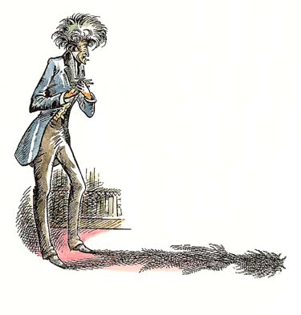
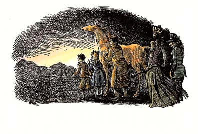

| [C・S・ルイス／瀬田貞二] ナルニア国物語6 | |
| C・S・ルイス／瀬田貞二 | |
| (2015) | |
|
ナルニア物語
魔術師のおい
Ｃ．Ｓ．ルイス
|
も く じ
はじめて「ナルニア物語」を読むかたに
１ まちがえた入り口
２ ディゴリーとアンドルーおじ
３ 世界と世界のあいだの林
４ 鐘と槌
５ ほろびのことば
６ アンドルーおじ、ご難の始まり
７ 玄関前の出来事
８ 街灯ぎわのひと合戦
９ ナルニアの国づくり
10 さいしょの笑い、そのほか
11 ディゴリーとアンドルーおじ、
窮地におちいる
12 イチゴの冒険
13 思いがけない出会い
14 木を植える
15 この話は終わり、
ほかの話がすべて始まる
はじめて「ナルニア国ものがたり」を読むかたに
「ナルニア国ものがたり」は、その一冊一冊が、どれを読んでも、それだけで一つのまとまったおもしろい本になっているばかりでなく、全部の七冊を通してみると、これが全体でまた一つのまとまりのある大きな物語になっています。そして、その全体を通して、ナルニアという国が、この地上ではないどこかに、まず生まれ、かずかずの世代をかさねて、さまざまな王たちにおさめられたのにち、さいごの戦いをへて消えうせる、というありさまを知ることができます。その全体の歴史を、年代表にしていえば、つぎのとおりです。
ナルニア生まれる──偉大なライオンのアスランがナルニアをつくります。ナルニアのつくられるありさまは、人間界からきたポリーとディゴリーが見とどけます。ただ、この子たちが人間界からくる途中で、わざわいのたね（妖魔・悪）を、いっしょにこの国に持ちこんでしまい、そのつぐないのために、遠いリンゴをとりにいく冒険がともないます。（『魔術師のおい』）
数世紀のち──白い魔女（なぜこれがきたかは前段でわかります）が、ナルニアを永遠の冬にします。人間界から、ピーターたち四人の子がきて、アスランとともに、魔女の力をくだきます。（『ライオンと魔女』）
ピーター王のころ──ナルニア全盛時代のある事件。ものをいう馬ブレーとその友のシャスタが、カロルーメンという戦ずきの国から、ひろい砂漠をよこぎってナルニアに急をしらせます。（『馬と少年』）
数百年のち──テルマール人たちがナルニアをおさめたころ、ピーターたちの助けをかりてカスピアン王子がナルニアをよみがえらせます（『カスピアン王子のつのぶえ』）
カスピアン王三年──のちに航海王とよばれるカスピアンが、ゆくえ不明になった七卿をさがしに「朝びらき丸」で東の海に大探検をします。これに、人間界からエドマンドとルーシィ、ほかにいとこのユースチスが加わります。（『朝びらき丸東の海へ』）
カスピアン王七〇年ごろ──人間界のユースチスと学校ぎらいの少女ジルが、沼人とともに北方の山地をこえて、遠く巨人の国を通って地下にとらわれた王子を助けにいきます。（『銀のいす』）
チリアン王のすえごろ──ナルニアがくずれさります。人間界からは、ポリーとディゴリー、ピーターとエドマンドとルーシィ、ユースチスとジルが加わります。おそるべきタシの神もあらわれ、カロルーメン軍とナルニアが戦います（『さいごの戦い』）
各年代のうしろに、カッコで記してあるのは、「ナルニア国ものがたり」の各篇の名です。そして、各篇は、それぞれの時代の一こまをまとまった物語として記していますが、こうしてならべてみますと、全体が、ナルニアのはじめからおわりまでを結ぶ大きな川のような、長篇の空想物語、大ファンタジーになっていることがよくわかります。
１ まちがえた入り口
この物語は、ずっと昔、みなさんのおじいさんがまだ子どもだったころのお話しです。そしてここには、そもそもわたしたちのこの世界とナルニアの国とのゆききがどんなふうにして始まったかということが書いてありますから、たいへん大事なお話しでもあります。
そのころは、名探偵のシャーロック・ホームズがまだ生きていて、ベーカー街に住んでおりましたし、バスタブル家の子どもたちが、ルウィシャム通りで、宝さがしをしていた時分です。そのころは、男の子ですと、イートン校式のごわごわしたカラーのついた服を毎日着なければなりませんでしたし、学校もいまよりももっといやなところでした。でもごはんは、そのころのほうがおいしかったようです。それにお菓子ときたら、どんなに安くて、おいしかったかは、いわないでおきましょう。よだれを流しても、あげるわけにはいきませんから。そしてそのころ、ロンドンの町に、ポリー・プラマーという女の子が住んでいました。ポリーは、何軒もの同じ家が棟つづきにならんでいるタウンハウスの一軒に住んでおりました。ある朝、ポリーが裏庭に出た時、ひとりの男の子がとなりの庭からよじのぼって、塀の上に顔を出しました。ポリーはひどくおどろきました。それまで一度だって、となりの家には子どもがいたためしがなかったからです。ケタリーさんという、どちらも独身の年とった兄と妹が、いっしょにくらしているだけです。ですからポリーは、好奇心がうずうずして、その子を見あげました。その知らない男の子の顔は、すごくよごれていました。そのよごれかげんといったら、まず土をこねくりまわしたあとで、さんざ泣いて、そのあげく、よごれた手で顔をふいたとしても、とてもこれほどにはなるまいと思われるくらいでした。いや、じっさいのところ、この男の子は、それに近いことをしてきたところでした。
「こんにちは。」とポリーがいいました。
「こんにちは。」と男の子もいいました。「きみの名まえ、なんていうの？」
「ポリー、あんたは？」
「ディゴリー。」
「へえー。ずいぶんおかしな名まえね。」とポリー。
「ポリーの半分もおかしかないや。」とディゴリー。
「おかしいわよ。」とポリー。
「おかしかないよ。」とディゴリー。
「どっちにしても、わたしは顔洗ってますからね。」とポリー。「あんたこそ、洗わなくちゃいけないんじゃないの？それも、とくにね──」そういいかけて、ポリーは口をつぐみました。「べそをかいたあとは。」というつもりでした。でもそんなことをいうのはやっぱり失礼だと思ったのです。
「いいよ、ぼくは泣いてたのさ。」男の子が泣いていたのをだれに知られようとかまわないと思うくらい、みじめな気もちになっている場合よくあるように、ディゴリーは、かえって、声をはりあげていいました。「きみだって泣くさ、きっと。」それからこうつづけました。「もしきみが、生まれてから、ずっと田舎に住んでてさ、小馬はもってるし、おまけに、庭の奥には小川が流れてるようなところにいたのに、こんなひどい穴みたいなところにつれてこられたら、どうする？」
「ロンドンは穴なんかじゃないわよ。」ポリーはむっとしていいました。しかし、ディゴリーは、すっかりこうふんしていて、ポリーのことばなんか耳にはいらず、なおもつづけていいました。
「それに、もしきみのおとうさんが、インドにいってしまって──おじさんとおばさんのいるところに住まなきゃならず、それにそのおじさんが頭がおかしいときたら（そんなのすきなひと、いないと思うけど）──そのうえ、ここへきたのが、おかあさんの世話を、おばさんたちにしてもらうためだったとしたら──それも、おかあさんが病気で、そして──そして──死にかけてるとしたら？」そこまでいうと、ディゴリーの顔は、涙をこらえている時のおかしなかっこうにゆがみました。
「ちっとも知らなかった。ごめんなさいね。」ポリーは、しゅんとしてあやまりました。それから、どんなことをいっていいのかわかりませんでしたし、また、なにかもっとゆかいなことにディゴリーの気もちをむけたいと思いましたので、つぎのようにたずねました。
「ケタリーさんて、ほんとにおかしいの？」
「でなければ、」とディゴリー。「何かほかに秘密があるんだよ。おじさんは、屋根裏に、書斎をもってる。そして、そこにはぜったいはいっちゃいけないって、ぼくは、レティおばさんにいわれてるんだ。だいたい、こんなことからして、あやしいだろ？それに、まだある。ごはんの時に、おじさんが、ぼくに話しかけようとするたんびに──おじさんはね、おばさんにはぜんぜん話そうともしないんだけど──おばさんが、そうさせないんだ。おばさんはね『この子にかまわないでちょうだい、アンドルー。』とか、『ディゴリーは、そんなことききたがりません』とか、『さあ、ディゴリー、庭に出て遊んでらっしゃいな。』なんていうんだ。」
「おじさんは、どんなこといおうとしてるのかしら。」
「わからないよ。いつも、そこまでいかないんだもの。でも、それだけじゃないよ。ある晩、といっても、じつはゆうべのことなんだけど──ぼくが、もう寝ようと思って、屋根裏にいく階段の下を通ったとき（そこを通るのもあまりすきじゃないんだけど）、たしかに叫び声がきこえたんだ。」
「もしかしたら、そこに気のふれた奥さんをとじこめているのかもしれないわ。」
「うん。ぼくも、それは考えてみた。」
「それとも、にせ金をつくってるのかしら。」
「あるいは、おじさんは、むかし、海賊だったかもしれないね。『宝島』のはじめに出てくるあの男みたいに、むかしの仲間に見つからないように、いつもかくれてるんだよ。」
「胸がどきどきするわ！」とポリー。「あんたのうちが、そんなにおもしろいところだなんて、まるで知らなかった。」
「そりゃ、きみはおもしろいと思うかもしれないけど、」とディゴリー。「でも、そのうちで寝なきゃならないとしたら、きみだって、いやだろうよ。夜、目をさましてると、アンドルーおじのしのび足が、廊下を通って、きみのへやにやってくる。それをじっときいてるのは、おもしろいかい？それに、おじさんの目って、とてもこわいんだ。」
ポリーとディゴリーは、こうして、ともだちになりました。夏休みがはじまったばかりのところで、ふたりとも、その夏は海にいく予定がありませんでしたので、ほとんどまいにち顔をあわせました。
ふたりの冒険は、そもそも、その夏がここ何年にいくどとないような、雨の多い、寒い夏だったから始まったといえます。ですから、ふたりはどうしても、家のなかで遊ばなければなりません。いや、このばあいは、家の中を探検したといってもいいでしょう。大きな家や、棟つづきの住宅というものは、ちびたろうそくを手にして、探検してみると、おどろくほど探検しがいのあるものです。これは、ポリーがとうのむかしに発見してしまったことですが、ポリーの家の屋根裏の納戸の小さな戸をあけますと、貯水用のタンクがあり、そのうしろに暗い場所があって、そこにはいりこむには、かなり注意して進まなければなりません。その暗い場所は、長いトンネルのようになっていて、片がわには煉瓦の壁があり、片がわは傾斜した屋根になっています。屋根のスレートがわらのすきまから、いくつも光がさしこんでいます。この屋根裏トンネルには床板が張ってありません。ですから、ここを通るには、はりからはりへ渡っていかなければなりません。そのあいだは、しっくいが塗ってあるだけで、そこをふむと、そのすぐ下にある部屋の天井をつき破って落っこちることになります。ポリーは、このトンネルのごく一部、貯水タンクのすぐそばのあたりを、密輸人の洞穴として使っていました。ポリーは、そこに、古い箱の板きれやこわれた台所のいすのすわるところの板といったようながらくたをいくつかもちこんで、そんなものを、はりからはりへならべ渡しておきましたから、それがいくらか床の役目をしていました。また、ポリーはここに、いろんな宝ものをいれた手さげ金庫と、じぶんがいま書いているお話のノートと、さらにふだんはリンゴをいくつか、おいておきました。またここで、サイダーのびんをあけて、ひとりでゆっくりとのむこともよくありました。そのあきびんがならんでいてこそ、いよいよ密輸人の洞穴めいてくるのです。
ディゴリーは、この洞穴がすっかり気にいりました。（ポリーは書いているお話は見せようとしませんでした。）それでも、ディゴリーは、探検の方にもっと気をひかれていました。
「ちょっと。」とディゴリーがいいました。「そのトンネル、どのくらいつづいているの？きみのうちの中だけでおしまいなんだろうか？」
「いいえ。」とポリー。「この壁のさきは、屋根になってるんじゃないのよ。ずっとつづいているの。どれだけつづいているか、知らないわ。」
「それじゃ、家並の端から端まで全部いけるんだね。」
「そうよ。それに、あっ、そうだ！」
「なに？」
「よそのうちにはいりこむことだってできるわ。」
「そして、強盗とまちがえられるのかい。いやなこった。」
「そんな早のみこみしないでよ。わたしが考えてたのは、あんたのうちのむこうどなりのうちのこと。」
「そのうちがどうかしたの？。」
「空家なのよ。おとうさんがいってたけど、わたしたちがここに引っ越してきてからずっとあいたままなんですって。」
「それじゃ、ぜひ一度、中を拝見しなくちゃいけないな。」とディゴリーはいいました。でもそんないい方からは考えられないくらい、心のなかでは、もうわくわくしていたのです。それは、みなさんもきっとそうだと思いますが、ディゴリーも、どうしてその家がそんなに長いあいだ空家だったのだろうと、あれこれ考えていたからです。ポリーとて同じことでした。ただふたりとも「ゆうれいが出る」ということばを口にしなかっただけです。そしてふたりとも、一度その気になったからには、実行しないのは弱虫だと思いました。
「いま、いってみる？」ディゴリーがききました。
「いいわ。」とポリー。
「もし気がむかなかったら、やめといた方がいいよ。」
「あんたさえその気なら、わたしはやる気ありよ。」
「でも、どうしたら、ちょうどそのうちのところにきたってことが、わかるだろうか？」
そこでふたりが考えたすえ、はりとはりのあいだの歩幅を計って、その歩幅で、納戸部屋をはしからはしまで歩いてみるということになりました。そうすれば、その一部屋に何本はりが使われているかがわかります。ポリーの家の屋根裏には、部屋が二つあって、こちらが納戸、むこうが女中部屋で、あいだに廊下がありますが、この廊下には、はりが四本使われているとみればいいでしょう。女中部屋は納戸と同じ大きさですから、これで家の長さがわかります。この長さを倍にすれば、ディゴリーの家のはずれに出るわけで、そのさきにあるドアからはいれば、空家の屋根裏部屋にはいることになります。
「でも、そこがほんとに空家だとは思えないな。」とディゴリー。
「じゃ、何がいると思うの？」
「だれかが、人目をさけて住んでるんじゃないだろうか。くらい角灯さげて、夜だけ出はいりするんじゃないかな。もしかしたら、命知らずのおたずねものの一味がいて、ひどい目にあわされるかもしれないよ。だつて、何かおかしなことがなければ、うちがずっと空家だなんて、そんなばかなことないもん。」
「おとうさんは、排水のぐあいが悪いせいじゃないかっていってたわ。」
「ふーん、おとなって、いつもおもしろくない説明を考えつくんだなあ。」とディゴリー。
今、ふたりが話しているのは、明るい昼の光にみちた屋根裏部屋であって、ろうそくをともした例の密輸人の洞穴ではありませんから、空家にゆうれいが出るということは、ますますありそうもないことのように思われました。
屋根裏部屋の測量がすむと、ふたりは鉛筆をだして、はりの数をたしてみました。はじめのうちはふたりの答えがなかなかあわず、やっとあったものの、はたして正しいかどうか、しれたものではありません。なにしろふたりとも、早く探検に出かけたくて出かけたくて、そわそわしていたのですから。
「音をたてちゃだめよ。」貯水タンクのうしろにはいりこみながら、ポリーはいいました。なにしろいざ出陣というときで、ふたりとも、てんでにろうそくをもっていました（ポリーは、ろうそくもたっぷりためこんでいたのです）。
トンネルの中は、とても暗くて、ほこりっぽく、すきま風が吹きこんできます。ふたりは、むだ口をきかず、はりからはりへと渡っていきました。ただ、ときどき、「いま、あんたのうちの屋根裏部屋のま横よ。」とか、「もう、ぼくのうちの半分ぐらいまできたにちがいない。」などとささやきかわすだけでした。ふたりともつまずきもせず、ろうそくも消えませんでした。そしてとうとう、右手の煉瓦壁に、小さな戸口の見えるところにきました。そのドアのこちらがわには、もちろんさし錠もなければ、取手もついていません。このドアは、むこうの部屋から、こちらのトンネルに出るためのもので、こちらからはいるためのものではありませんから、あたりまえです。しかしそこには（よく食器戸棚の開き戸の内がわに見かけるような）、とめ金がついていました。ふたりは、それをまわせば、あけられるだろうと思いました。
「あけようか？」とディゴリー。
「あんたさえその気なら、わたしはやる気ありよ。」ポリーが、前とおなじ返事をしました。ふたりともいよいよたいへんなことになってきたと感じましたが、どちらも今さらあとにひく気はありません。ディゴリーは、かなり苦心してとめ金をまわしました。ドアはとつぜんいきおいよく開き、きゅうに昼間の光をあびたふたりは、思わず目をしばたたきました。そのふたりが目の前に見たのは、思っていたようながらんどうの空部屋ではなく、きちんと家具のはいった部屋だったものですから、あっとたまげてしまいました。でもそこは人気がないようでした。おそろしく、しんとしていました。ポリーの知りたがる心が、むらむらとわきあがって、ポリーをとりこにしました。ポリーは、ろうそくを吹き消して、ネズミのように音もなく、そのおかしな部屋にしのびこみました。
そこは、もちろん屋根裏部屋の形はしていますが、居間のように家具がそなわっています。壁という壁はすきまなく棚がめぐらされ、棚にはどこも本がびっしりつまっています。暖炉には火がもえ（その夏が、雨の多い寒い夏だったことは、おぼえてらっしゃるでしょうね）、その前に、背をこちらにむけて、高い背もたれのついたひじかけいすが一つおいてあります。そのいすとポリーのあいだには、その部屋の中央ほとんどいっぱいに、一台の大きなテーブルがすえられ、その上には、本やノート、インクつぼにペン、封蝋から顕微鏡まで、あらゆるものがつんであります。しかしポリーの目をまずひきつけたのは、はでな赤い木の盆の上にのっている、いくつかの指輪でした。それは二つずつならべられてありました──黄色い指輪と緑のとが一組、すこしあいだをおいて、また黄色いのと緑、というぐあいでした。大きさはふつうの指輪と変わりませんでしたが、あまりよく光るので、だれでも目をとめずにはいられません。これほどみごとに光る小さいものは、ほかにあるまいと思われるくらいです。ポリーがもっと小さかったら、きっと一つつまんで口の中に入れたいと思ったでしょう。
部屋がばかに静かなので、すぐに時計のチクタクいう音が耳にはいりました。ところが、ポリーが今になって気がついてみると、その部屋はまったくなんの物音もしないというわけではなかったのです。かすかな──ほんとにとてもかすかな──ぶうーんという音がしていました。もし電気掃除機がそのころ発明されていたとしたら、ポリーはきっとどこか遠くの方で──いくつも部屋をへだてた、何階も下の方で──だれかがそれを使ってるんだと思ったことでしょう。しかし掃除機の音にくらべれば、いい音でした。ずっと音楽的な調子がありました。ただ、ほとんどきこえないくらいかすかだったのです。
「大丈夫よ。だれもいないわ。」ポリーが肩ごしにディゴリーにいいました。その声はもうささやき声というには大きすぎます。ディゴリーも部屋の中にはいってきました。目をぱちくりさせながら、おそろしくよごれた姿で──もっともこれはポリーとて同じことです。「こりゃまずいな。」とディゴリー。「まるで空家じゃないや。だれかこないうちに逃げた方がいいよ。」
「これ、なんだと思？」色のついた指輪をさしてポリーがいいました。
「さあ、いこうよ。」とディゴリー。「早ければ早いほど──」
ディゴリーはいいかけたことを、おしまいまでいうことができませんでした。その時つぎのようなことがおこったからなのです。暖炉の前の高い背もたれのあるいすが、がくんと動いて、そこから──まるでだんまり芝居の悪魔が舞台のはねあげ戸からぱっと出てきたように──立ちあがったのは、ぎょっとするようなアンドルーおじのすがたでした。ふたりがいたのは空家どころか、ディゴリーの家だったのです。それも、はいってはいけないとおばさんにかたくとめられていた書斎の中じゃありませんか！ふたりの子どもたちは、「あ、あっ。」と叫んで、じぶんたちのおそろしいまちがいに気づきました。そして、トンネルの中の進みかたがたりなかったことをくやみました。
アンドルーおじは、とても背が高くて、とてもやせていました。その長い顔には、きれいにかみそりがあててあり、さきのとがった鼻と、ひどくきらきら光る目と、モップのように毛をふりみだしたごま塩頭がめだちました。
ディゴリーは、ことばが出ません。アンドルーおじが、今までの千倍も恐ろしげに見えたのです。ポリーは、さいしょのうちこそそれほどこわいと思いませんでしたが、まもなくそう感ずるようになりました。というのは、アンドルーおじのまっさきにしたことが廊下の入口のところにいって、ドアをしめ、鍵をかけてしまったことでしたから。それからおじさんは、子たちの方をむいて、そのきらきら光る目でふたりを見すえ、歯をむき出して、にやりと笑いました。
「さあ、」とおじさんはいいました。「これで妹のやつも、どうしようもなし！」
こんなことはとうてい、だいのおとながすることとは思えません。ポリーのおどろきは心臓がとびだすかと思うくらいでした。ポリーとディゴリーはふたりとも、じぶんたちがはいってきた小さなドアのほうに、後ずさりをはじめました。ところがたちまち、アンドルーおじに先手をうたれてしまいました。おじさんはふたりのうしろにまわり、そのドアもぴたりとしめて、その前に立ちはだかりました。それからおじさんは両手をこすりあわせ、指をぽきぽきならしました。ずいぶん長くて、きれいな白い指でした。
「きていただいて、うれしいね。」とアンドルーおじ。「子どもがふたり、ちょうどほしかったところさ。」
「ケタリーさん、おねがいです。」とポリー。「もうそろそろお昼の時間ですから、うちに帰らなきゃなりません。だしてくださいませんか。」
「いまはだめだ。」とアンドルーおじ。「こんないいおりは、むざむざ逃せるもんじゃない。子どもがふたりほしかったところだ。いいかね、わしは、あるすばらしい実験をしているさいちゅうなんだよ。今までモルモットでやってみて、うまくいったようだ。だが、モルモットからじゃ、話がきけないのさ。おまけに、どうやって帰ってくるかを話してやるわけにもいくまい。」
「ねえ、おじさん。」とディゴリー。「ほんとにもうごはんの時間です。みんなが、ぼくたちを探しはじめますよ。ぼくたちをだしてくださらなくちゃ。」
「くださらなくちゃ、だと？」とアンドルーおじがいいました。
ディゴリーとポリーは、たがいに目を見かわしました。ふたりとも口にだしてこそなにもいえませんでしたが、その目は「こわくないこと？」「うまくきげんをとらなくちゃ。」とあいずしたのです。
「いま食事にいかせてくださったら、」とポリー。「お昼がすんでから、またもどってきますけど。」
「ははーん、でも、おまえさんたちがもどってくるということが、どうしてわかるかね？」おじさんは、ずるそうなほほえみを浮かべていました。だがそのあとで、どうやら気が変わったようでした。
「なるほどな。おまえさんたちがほんとに帰らなきゃならないというんなら、しかたがない。おまえさんたちのような若い子が、こんな老いぼれと話をしてもおもしろがるだろうと思う方が無理だ。」おじさんはここでため息をつくと、またつづけました。「わしが、ときどきどんなにさびしく思うか、おまえさんたちには、とてもわかってもらえまいな。しかし、そんなことはどうでもいい。食事にいっておいで。ところで、その前にぜひなにかおくりものがしたいんだが。このむさくるしい書斎に小さいおじょうさんが見えることは、ざらにあることじゃないからな。とりわけ、まあいわしていただければ、あんたみたいなとびきり心をひく若いご婦人は、な。」
このぶんだとアンドルーおじは、そんなに頭がおかしいわけでもあるまい、とポリーは考えはじめました。
「指輪はおすきじゃないのかな？ じょうちゃんや。」とアンドルーおじは、ポリーにいいました。
「あの黄色と緑の指輪のことですか？」とポリー。「とてもきれい。」
「緑のほうじゃない。」とアンドルーおじ。「緑の方は、ちょっとさしあげるわけにはいかなくてな。だが、黄色い方なら、どれでもよろこんでさしあげますぞ。さあ、一つ、はめてごらん。」
ポリーのこわいと思う気もちは、もうすっかりなくなっていました。そしてこの老紳士は頭がおかしいはずがないと思いました。たしかに、このきらきら光る指輪には、どこか奇妙にひきつけるものがあったのです。ポリーは赤い盆のほうに進みました。
「あら、おかしいわ。」とポリー。「あのぶううーんという音が、こっちにくるほど大きくなるようだわ。まるで、指輪が音をたててるみたい。」
「おかしいことを考えるもんだね。じょうちゃん。」アンドルーおじはこういって、大笑いしました。その笑いかたは、ごくあたりまえのようでしたが、ディゴリーは、おじさんの顔に、くいいるような真剣な表情が浮かぶのを見てしまいました。
「ポリー！ ばかなことをするな！」とディゴリーは叫びました。「さわっちゃいけない！」
もう手おくれでした。ディゴリーがいったそのしゅんかんに、ポリーの手が指輪の一つにのびていました。そしてとたんに、音もなく、ひらめきもなく、なんの予告もなく、ポリーが、すぽっと、いなくなりました。部屋には、ディゴリーとアンドルーおじだけでした。
（１）シャーロック・ホームズ──イギリスの小説家コナン・ドイルが名高い探偵シャーロック・ホームズの物語をはじめて書いたのは一八八七年のことで、ホームズの活躍は、みな一八八〇年代から九〇年代にかけてでした。ドイルは、ホームズがベーカー街に住んでいるように記しています。
（２）宝さがし──イギリスの女流作家Ｅ・ネズビットが、バスタブル家の五人の子どもたちを主人公にして『宝さがしの子どもたち』を書いたのは、一八九九年です。
（３）『宝島』──イギリスの小説家ロバート・ルイス・スティーブンソンが『宝島』を書いたのは一八八三年です。
２ ディゴリーとおじ
それは、あまりだしぬけで、あまりおそろしい、こわい夢のなかでさえ出会ったことのない出来事でしたので、ディゴリーは思わず悲鳴をあげてしまいました。するとすぐにアンドルーおじは、手でディゴリーの口をふさぎました。「声を立てるな！」おじさんはディゴリーの耳もとでひそひそいいました。「さわぎ立てると、おかあさんにきこえるぞ。おかあさんがびっくりしたら、どんなにこたえるか、おまえにはわかってるだろう。」
あとになってディゴリーがいったことですが、こんなやりかたで、ひとをいいようにする、ぞっとするような卑劣さに、ディゴリーは胸がむかむかしてきました。けれども、いうまでもなくそれからは、叫び声を立てませんでした。
「それでよろしい。」とアンドルーおじはいいました。「もちろんおまえとすれば、叫び声を立てずにいられなかったろうな。人が消えるのをはじめて見れば、どきっとするさ。このあいだの晩、モルモットが消えたときには、わしだって、ぎょっとしたもんだ。」
「それは、おじさんが悲鳴をあげた時のことですか？」とディゴリーがたずねました。
「や、きいてたんだな？ わしのことをさぐってたわけじゃあるまいね？」
「いいえ、そんなことしません。」ディゴリーはむっとして、「それにしても、ポリーはいったいどうなったんです？」
「わしにおめでとうといってくれ、ぼうや。」アンドルーおじは、両手をこすりながら、「わしの実験は成功した。あの女の子はいってしまった──消えうせた──この世界からね。」
「ポリーに何をしたんです？」
「送りだしたのさ──その──別の世界にね。」
「それは、どういうことなんです？」とディゴリーはたずねました。
アンドルーおじは、いすに腰をおろして、「よし、それでは、すっかり話してやろう。おまえはルフェイおばあさんのことをきいたことがあるかね？」
「大おばさんかなんかにあたる人じゃありませんか？」とディゴリー。
「かならずしもそうじゃない。」とアンドルーおじがいいました。「ルフェイおばあさんは、わしの名づけ親だったのだ。あれがそうだ。そら、そこの壁にかかってる。」
見ると、一枚の色あせた写真がかかっています。写っているのは、ひもつき帽子をかぶったおばあさんの顔です。ディゴリーは、これとおなじ顔の写真を、田舎の家の古い引きだしのなかで見つけたことを思いだしました。その時、この人はだれなのか、おかあさんにきいたのですが、おかあさんは、あまり話たがらないようでした。ちっともいい顔じゃないなと、ディゴリーは思いましたが、もちろん、こんな昔の写真では、じっさいのところ、なんともわからないものです。
「このおばあさん、なにか変なところがあったんですか？おじさん。」
「そうさね、」アンドルーおじは、くすくす笑いながら、「そりゃね変なということのいみしだいだがね。世間のやつは、心がせまいからな。たしかに、ルフェイおばあさんは、晩年になってひどい変人になった。ずいぶんばかなことをしでかしたもんだ。そのために、とじこめられることにもなったのだ。」
「とじこめられるって、精神病院にですか？」
「いや、いや、とんでもない。」おじさんはぎくりとした声で、「そんなところじゃない。刑務所にいれられただけのことさ。」
「おどろいたなあ！」とディゴリー。「何をしでかしたんです？」
「やれやれ、かわいそうな人さ。」とアンドルーおじ。「なにしろ、ばかなことをしたもんさ。ずいぶんいろんなことがあってね。でも、いまここで、いちいち話すことはない。とにくかルフェイおばあさんは、わしにはいつだって親切にしてくれたんだ。」
「だけど、いったいそんなことが、ポリーとなんの関係があるんです？ぼくは、おじさんに──」
「おいおいにわかるぞ。」とアンドルーおじはいいました。「ルフェイおばあさんは、死ぬ前に、牢からだしてもらえた。そのさいごの病気のあいだ、おばあさんは、ほとんどだれにも会いたがらなかったが、わしには会ってくれた。おばあさん、平凡で、無知なやつらをきらっておった。わかるだろ、そりゃ、わしとても同じことだ。ところが、おばあさんとわしは、同じことがらに、興味をもっていたのだ。おばあさんが死ぬほんの二、三日前のことだった。おばあさん、わしに、その家の古いたんすの秘密の引き出しをあけて、そこにはいっている小さな箱をもってくるようにいいつけた。その箱をもちあげたとき、指がじいんと痛んだね。それでわしは、いまわしの手の中にあるものが、なにかたいへんな秘密なんだということがわかった。おばあさんは、その箱をわしにわたして約束させた。じぶんが死んだら、その箱はあけないで、しかるべき儀式をして、もやしてしまうように、とな。その約束を、わしは守らなかったのだ。」
「それじゃ、まるできたないや。」とディゴリー。
「きたないって？」アンドルーおじは、きょとんとした顔をしました。「ああ、そうか、子どもは約束を守らなきゃいけないってことだな。そうとも、そりゃもっともだ！りっぱなことさ、まちがいない。おまえがそうするように教わってるのは、うれしいね。ただ、もちろんおまえが心得てなくちゃならないことは、そうしたきまりというものが、子どもとか──それに召使いとか──それから女どもとか──あるいは世間いっぱんの連中にはこの上なくいいことかもしれないがね、えらい大学者やすぐれた思想家や賢人には、おそらくあてはまらないことなのだ。そうとも、ディゴリー。かくれた知恵をそなえた、わしのような人間はな、世のつねの楽しみから切りはなされているが、また同時に、世のつねのきまりからも自由なのだ。わしらのような人間の運命は、高くして孤独なのだ。」
こういいながら、おじさんはため息をつき、えらくきまじめで、気高く、なぞめいた表情を浮かべましたから、ほんのしばらく、ディゴリーは、おじさんがりっぱなことを話していると思ったくらいでした。しかしすぐにディゴリーは、ポリーが消える前に、おじさんの顔の上によみとったあのいやらしい表情を思いだしましたので、おじさんのもったいぶったことばの奥が、すぐさま見ぬけました。「あの人のいってることは、」ディゴリーは心のなかで思いました。「つまり、じぶんのほしいものを手に入れるためには、なんでもやりたいことをやっていいということじゃないか。」
「もちろん、」とアンドルーおじはいいました。「わしとて、長いことその箱をあける気になれなかった。というのも、もしかしたら、えらく危険なものがはいっているかもしれないと考えたからだ。なぜかといえば、わしの名づけ親は、このうえなく非凡な人だったからでな。じつは、ルフェイおばあさんは、この国で、妖精の血を伝えたさいごの人間のひとりだったのだ（おばあさんの話だと、そのころ、まだほかにふたりいたそうだが、ひとりは公爵夫人、もうひとりは掃除女だったという）。だから、ディゴリー、おまえがいま話している相手は、まさしく妖精の名づけ親をもっていた、（おそらく）さいごの人間なのだ。どうだ、おまえが年とった時に、いい思い出ばなしのたねになるぞ。」
「そのおばあさんは、悪い妖精だったにちがいない。」とディゴリーは思いました。それから声にだして、「それにしても、ポリーはどうしたんです？」とたずねました。
「さっきから同じことばかりうなってるな。」とアンドルーおじ。「天下の一大事みたいに。わしがまずやったことは、もちろんその箱そのものをしらべることだった。たいそう古い品物だった。ギリシアのものでもなければ、エジプトのものでもなく、バビロニアのものでも、ヒッタイトのものでも、中国のものでもないことは、その時でさえわしはによくわかった。その箱は、今あげたどの国よりも、もっと古いものだった。そしてとうとうほんとうのことがわかる日がきた。ああ──あの日こそ記念すべき日だったぞ。その箱はアトランティスのものだったのだ。むかし、むかし、大西洋にあって、海の底に消えうせてしまったという、あのアトランティスの島から出たものなのだ。ということは、ヨーロッパで発掘される石器時代の遺物などより、さらに何世紀も古いということになる。それに、その文明は石器時代のようにあらけずりの原始的のものではないのだ。この世界がようやくはじまったころ、アトランティスはもう大きな都で、宮殿や、寺院がそびえ、学問のある人たちがいた。」
おじさんはここで、ディゴリーが何かいうのを待つように、ちょっと息をつぎました。しかし、ディゴリーの方は、ますますおじさんがきらいになるばかりでしたから、なにもいいませんでした。
「そのあいだにも、」とアンドルーおじはつづけました。「わしは、魔術いっぱんについて、いろんなやりかたで（そのやりかたを話してきかせるのは、どうも子どもむきでないのでな）しこたま、学びとったものだ。そういうわけで、その箱のなかに、いったい、どんなものがはいっているか、わしには、だいたいわかるようになった。いろいろしらべたあげく、わしは、その中にはいっていそうなものを、だんだん限っていった。わしは──そう、悪魔のような、変わった人間とも知りあいにならなければならなかった。それに、たいそういやな経験もしなければならなかった。髪にこんなに白髪がふえたのも、そのためだ。ただでは魔術師になれないものな。しまいには、からだまで悪くしてしまった。もっとも、その後よくなりはしたが。こうして、とうとう、わしは知ることができた。」
だれも立ちぎきなどできっこないのに、おじさんは、からだをかがめて、ほとんどささやきかけました。
「そのアトランティスの箱の中には、ちょうどこの世界ができたころ、別の世界からもってきたものがはいっていたのだよ。」
「なんですって？」つい気をそそられて、ディゴリーはたずねました。
「ただの土さ。」とアンドルーおじ。「こまかい、かわいた土さ。見たところ、なんのへんてつもない。一生かかって調べたって、大したことはわかりそうもない。しかし、わしはその土をつくづくと見て（わしはそれに手をふれないように、そりゃ注意したもんだ）、考えたことは、この土の一つぶ一つぶが、かつては別の世界にあったんだということだ──いいかね、わしは別の世界といったんで、別の天体というんじゃないぞ。別の天体というのはこの世の一部で、どんどん遠くまで進んでいきさえすれば、ちゃんといきつけるところなのだ──しかしほんとうの別の世界は、別の自然、別の宇宙で、この世の宇宙の空間をいつまでどこまで進んでいっても、けっしていきつくことができない──ただ一つ、魔法でしかいけない世界なのだ──わかったな。」こういっておじさんはまた手をこすりあわせて、そのために指のふしぶしが、花火のようにぽきぽきとなりました。

「わしにわかったのは、その土を、あるべき形にすることさえできれば、それは、もとそれがあった場所に、人間をひきよせるんじゃないかということだ。ところが、それをあるべき形にするというのが大問題だったのさ。はじめのうちは、どの実験もみな失敗だった。モルモットを使ってやってみたのだが、ただ死んでしまったのもあるし、まるで小さな爆弾のように破裂したのもある──」
「ずいぶんひどいことをやったんだなあ。」じぶんでもまえにモルモットをかったことのあるディゴリーがいいました。
「すぐひとの話に水をさしてばかりいるじゃないか！」とアンドルーおじ。「モルモットなどは、そのためにつくられているもんだ。それにわしが、じぶんで金をだして買ったものだ。ところでと──どこまで話したかな？おお、そうよ。とうとう指輪を作ることにわしは成功した。それが、あの黄色い指輪だ。ところが、ここにまた新しい問題がおこった。その黄色い指輪は、さわった者をだれでも、別の世界につれていくことはたしかなんだが、わしとしては、そいつらがもどってきて、別の世界で見てきたことを、わしに話してくれなければ、何にもならないわけだ。」
「そいつらのほうは、どうなるんです？」とディゴリー。「もし帰ってこられなければ、そっちこそいい迷惑じゃありませんか！」
「おまえは、まちがった見方でばかりものごとを見てるぞ。」アンドルーおじは、いらいらしたようすで、「おまえには、それが偉大な実験だということがわからないのか？だれかを別の世界に送りこむのも、その世界がどんなところか知りたいからこそだぞ。」
「それじゃ、なぜあなたがじぶんでいってみなかったんですか？」
ディゴリーは、この簡単な質問を耳にした時のおじさんほど、たまげて、気をそこねたひとを見たことがないといえるくらいでした。「わしが？このわしがか？」とおじさんは叫びました。「この子は頭がどうかしている！わしほどの年で、そしてわしのようなからだで、この世とちがった宇宙にだしぬけにほうりこまれるショックや危険をおかせというのか？こんなとほうもないたわごとはきいたことがない！じぶんでじぶんのいっていることがわかってるのかな？別の世界というのはどんなとこか、考えてみろ──どんなことに出あうかわからないぞ──どんなことに。」
「それであなたは、ポリーをそこにやったんだな。」怒りでほおをまっかにしたディゴリーがいいました。「いくらあなたがぼくのおじさんであるにせよ、いってやるぞ。」とディゴリーはつけ加えました。「あなたが、じぶんじゃこわくていけない場所に、女の子をやってしまうなんて、臆病者、こしぬけのやることだ。」
「だまれ！」アンドルーおじは、テーブルをどんとたたいて、「うすぎたない小僧っ子から、そんな口をきかれてたまるか。おまえにはわかっちゃいない。わしは大学者で、魔術師で、新しい実験をしている錬金術師なのだ。実験にはもちろん材料がいるぞ。それをなんだ、おまえは。こんどは、わしがモルモットを使う前に、モルモットのゆるしを得なければなどといいだすことだろう。どんなにえらい真理でも犠牲がなければ手にはいらないものだぞ。それにしても、わしがじぶんでいくなどとは、とほうもないことだ。まるで大将にむかって、一兵卒として戦えというようなものだ。もしわしが殺されてみろ、わしが一生をかけた仕事はどうなるかね？」
「ああ、そうがみがみいわないでよ。」とディゴリー。「とにくかあなたは、ポリーをつれもどしてくれるんですか？」
「そのことを話そうと思ってたのに、おまえが無作法にも、わしの話の腰をおったのだ。」とアンドルーおじはいいました。「わしはとうとう、こちらにもどってくる方法を見つけだしたぞ。あの緑の指輪が、こちらにひきもどすのだ。」
「でもポリーは、緑の指輪をもってなかった。」
「もってないさ。」アンドルーおじはそういって、いじのわるい笑いかたをしました。
「それじゃ、ポリーは帰れない。」とディゴリーはどなりました。「そんなら、あんたが、ポリーを殺したも同じじゃないか。」
「ポリーは帰れるさ。」とアンドルーおじはいいました。「だれかほかの者が、あとをおっかけていけばいいんだ。じぶんは黄色い指輪をはめて、緑のを二つもっていくんだ。一つはじぶんがもどるため、もう一つはあの女の子がもどるためさ。」
ここでディゴリーには、じぶんがおちこんだわながわかりました。ディゴリーは、ことばも出ず、口をぽかんとあけたまま、おじさんの顔をまじまじと見つめました。ほおからはまったく血の気がひいていました。
「わしとしては、」アンドルーおじがたいへん高びしゃな声をだしていいました。まるで、けっこうな助言や忠告を与えてやる申し分のないおじさんといった調子です。「ディゴリー、わしとしては、おまえが臆病風などを吹かさないようのぞんでいる。わしの一族のなかで、ええ、その難儀しているご婦人をだな、助けにいく気位と義侠心をもちあわせていないものがいると思うのは、わしとしてもくやしくてならないからな。」
「だまってください！」とディゴリーがいいました。「そんな気位だのなんだのを、あなたがおもちでしたら、じぶんで出かけたらいいでしょう。いや、あなたはいきっこないや。いいですとも、ぼくがいかなきゃならないことがわかりました。でもあなたは人でなしだ。はじめからぜんぶ、計画的だったんだ。何にも知らないで、ポリーがいってしまう。そのあとでどうしてもぼくがいかなきゃならないように、しくんであったんだ。」
「もちろんだとも。」アンドルーおじは、例のいやな笑いを浮かべていました。
「けっこうです。いきますよ。でも、その前にどうしても一ついっておきたいことがあります。ぼくは今まで魔法なんか信じてなかったけど、それがほんとうにあることはわかった。そうなると、昔のおとぎばなしなんていうのも、いくらかはほんとうかもしれない。だったらあなたは、そんなお話に出てくる腹黒くて、残酷な魔法使いだ。いいですか、ぼくの読んだお話では、そんなやつらはみんな、おしまいに罰をうけるんだ。あなたも、きっとそうなる。そしたら、いいきみだ。」
ディゴリーがのべたてたなかで、おじさんの胸にこたえたことばは、これがはじめてでした。アンドルーおじは、びくっとしました。その時その顔に浮かんだおののきの表情は、こんな人でなしをさえ、つい気のどくに思いそうになるほど、はげしいものでした。でもおじさんは、すぐにそんなようすをおさえて、いかにもわざとらしく笑っていいました。「さて、さて、子どもが考えそうなことだな。おまえのように、女どものなかで育ってみれば、むりもないがね。ばあさんどもの世まいごとだよ。わしのほうの危険についちゃ、おまえに心配してもらう必要はないぞ、ディゴリー。それより、おまえのともだちのことを心配してやったほうがいいのじゃないかな？あの子がいってからもうだいぶたつ。もしあっちのほうで、なにか危険がおこってるとしたら、──そうさな、ちょっといくのがおそすぎたでは、気のどくだからな。」
「いらないお世話だ。」ディゴリーは、はきすてるようにいいました。「こんなおしゃべりはもうたくさんだ。ぼくはどうすればいいんです？」
「その短気はなおすようにしなくちゃいけないな。」アンドルーおじは、平然として、いいました。「さもないと、今にレティおばさんのようになっちまうぞ。では、わしのいうことを注意してきけ。」
おじさんは立ちあがって、手袋をはめ、指輪ののっている盆のそばにいきました。
「この指輪の魔法は、ひふでじかにさわった時だけ、働くのだ。手袋をしてれば、つまみあげることもできる──ほれ、こういうふうにな──べつになにもおこらない。ポケットの中にいれてたって、大じょうぶだ。しかしもちろんそのばあいは、ポケットに手をつっこんで、ついそれにさわってしまうようなことにならないように、気をつけなければいけない。黄色い指輪に手をふれたらすぐさま、おまえはこの世界から消えうせてしまう。そしてこんどは、おまえがあちらの世界にいるばあいには、わしの考えでは──もちろんまだ実験していないから、ただの予想だが──緑の指輪に手をふれたらすぐに、おまえはあちらの世界から消えうせて、そして──わしの予想では──この世界に立ちもどってくるのだ。さあ、いいかな、この緑の指輪を二つ、おまえの右のポケットにいれておくからね。どちらのポケットに緑の指輪が入ってるか、よくおぼえとくんだぞ。みどりの〝み〟、みぎの〝み〟だ。どちらも〝み〟ではじまるんだ。わかったね。一つはおまえの分、もう一つは、あの女の子の分だ。ではつぎに、黄色い指輪をもっていくわけだが、わしなら──指にはめていくね。そのほうが、おとす心配がない。」
ディゴリーは、黄色い指輪をとりあげようとして、にわかにやめていいました。
「おかあさんはどうなるんです？ ぼくがどこにいるか、おかあさんがきいたら、どうするんです？」
「早く出かければ、それだけ早く帰れるさ。」アンドルーおじは上きげんでいいました。
「だって、ぼくが帰れるかどうか、ほんとのところは、あなたにもわからないんでしょ？」
アンドルーおじは、肩をすくめてみせると、ドアのところにいき、鍵をあけて、ドアをあけはなちました。
「けっこう、けっこう。すきなようにするんだな。階下にいって、食事をするがいい。あの女の子が、別の世界でけものに食べられようが、おぼれ死のうが、うえ死にしようが、もう二度と帰ってこられなかろうが、かまうことはない。おまえさえそれでよければね。わしには同じことさ。まあ、お茶の時間になる前に、おとなりのプラマーさんのとこにいって、わけを話してあげるんだな、あなたはもう二度とおじょうさんに会えませんよ、それもぼくがこわがって指輪をはめなかったからです、とな。」
「ちくしょう！」とディゴリー。「ぼくが大きかったら、その頭に一発くらわせるところだ。」
それからディゴリーは、上着のボタンをきちんとかけ、一つふかい息を吸って、指輪をとりあげました。その時ディゴリーが感じたことは、その後もいつも思ったことですが、そうするよりほかに、どうしようもないということでした。
３ 世界と世界のあいだの林
アンドルーおじも、その書斎も、あっというまに消えてしまいました。それからほんのわずかのうち、なにもかもまざりあって、何がなんだかわかりませんでした。そのあとディゴリーは、上のほうから一すじの緑色のやわらかい光がふりそそぎ、下のほうは、まっくらなのに気がつきました。なにかの上に立っているのでも、すわっているのでも、横になっているのでもなさそうでした。どこにもからだがさわっているところがないようでした。「水の中にいるんだな。」とディゴリーは考えました。「それとも、水の下かしら。」そう考えると、しばらくはこわい気がしました。ところがそのあとですぐ、からだがぐんぐん上にのぼっていくのがわかりました。そのうちに頭がとつぜん空気にふれたと思うと、ディゴリーはあがきながら、岸にはいあがっていたのです。そこは、池のふちのやわらかな草のはえた地面でした。
ディゴリーは立ちあがって、じぶんが水のなかから出てきたらずぶぬれになり、息をはずませているはずなのに、ちっともそうなっていないことに気がつきました。着ているものがちっともぬれていません。ディゴリーの立っているのは、小さな──直径三メートルばかりの──池のふちで、林のなかでした。あたりに、木々がびっしりとはえ、しかもたいそう葉がしげっていますから、空をのぞくこともできないくらいです。いちめんの光は、しげみごしにさしこむ緑の光でした。しかし、林の上にある日光はとても強いものにちがいありません。それほどあたりの緑の光は、あかるく、しかも暖かでした。それに、これほど静かな林は、考えられないくらいなのです。鳥もいない。虫もいない。けものもいない。風もありません。あんまり静かすぎて、木がすくすく育つのが感じとれるくらいでした。池はいまディゴリーが出てきたものばかりではありません。ほかに、何十とあるのです──目のとどくかぎり、数メートルおきに一つずつ池がありました。林の木々が、その根っこから水を吸いあげているのがきこえるくらいです。この林はたっぷりと生きていたのです。あとになって、この林のことをうまくいおうとして、ディゴリーはいつもこういいました。「なにしろすごくゆたかなところでね、そのたっぷりした感じは、プラム入りのケーキみたいだったなあ。」
ここでいちばんふしぎなことは、ディゴリーが、あたりを見まわすまでに、どうやってじぶんがここにやってきたか、そのわけをほとんど忘れてしまったことなのです。とにかく、ディゴリーは、今のところ、ポリーのことも、アンドルーおじのことも、おかあさんのことさえも頭に浮かべていませんでした。そしてディゴリーは、ちっともこわいとも思わず、こうふんもせず、いろいろ知りたいという気もおこりませんでした。もしだれかに、「どこからきたの？」ときかれたら、きっと、「ずっとここにいるのさ。」と答えたでしょう。そこは、そういう感じのするところで──ずっとそこにいたような感じ、しかも、何事もおこらないくせに、けっしてたいくつしない感じなのです。これもずっとあとになって、ディゴリーがいったことですが、「そこは、なにか出来事がおこるようなところじゃない。木々がずんずんのびていく、それだけ。」なのです。
ディゴリーは、長いことその林に見とれていましたが、ふと気がつくと、ほんの数メートルしか離れていない一本の木の根もとに、女の子がひとり、あおむいて寝ていたのです。その女の子のまぶたはとじかかってはいましたが、すっかりとじているわけではありませんでした。眠っているともつかず、目ざめているともつかないようすです。ですからディゴリーは、かなり長いこと女の子をじっと見つめたまま、なんにもことばをかけませんでした。そのうちにとうとう女の子は目をあけました。そしてしばらくディゴリーをじっと見ていましたが、やはり口をききませんでした。やがて女の子は、まだ夢見ごこちの、うっとりした声でこういいました。
「わたし、前にあんたに会ったようね。」
「ぼくもそんな気がする。」とディゴリーもいいました。「きみはもうここに長いこといるの？」
「ええ、ずっと。」と女の子がいいました。「ともかく──わからないけど──長いことよ。」
「ぼくもそうだ。」
「あら、ちがうわ。あんたが池から出てくるのを、たったいま、見てたもの。」
「うん、そうだったな。」ディゴリーは、ふにおちないようにいいました。「忘れてたよ。」
それから長いあいだ、ふたりとももう口をききませんでした。
「あのねえ、」やがて女の子がいいました。「わたしたち、ほんとに前に会ったことがあるんじないかしら？わたし頭に浮かんだことがあるの──絵みたいに浮かんだの──わたしたちみたいな男の子と女の子のことが......。どこか、こことはまるっきりちがうところに住んでて、そしていろんなことをしてたの。でも、ただの夢ね。」
「ぼくもそれと同じ夢を見たように思う。」とディゴリー。「やっぱり、男の子と女の子だ。隣どうしで住んでてね──はりをつたって歩いたような気がする。その女の子の顔は、どろだらけだったな。」
「あんた、ごちゃまぜにしてるんじゃない？ わたしの夢じゃね顔のよごれてたのは、男の子よ。」
「ぼく、男の子の顔はおぼえてないな。」とディゴリーはいいましたが、そのあとで、こうつけたしました。「や、あれは何？」
「まあ、モルモットよ！」と女の子がいいました。ほんとにそれは、まるまるとふとったモルモットで、草の中に鼻をつっこみながら、動きまわっていました。ところがそのモルモットのからだには、ひもがかけてあって、そのひもでそのからだにむすびつけてあったのは、きらきら光る黄色い指輪でした。
「ほら、ほら、」とディゴリーは叫びました。「あの指輪！それにほら、きみの指にも同じものがある。ぼくもだ。」
女の子はもうからだをおこしていました。とうとうおもしろいことになってきたからです。ふたりは思いだそうとしながら、おたがいに、まじまじと見つめました。そして、まつたくいっしょに、女の子は「ケタリーさんよ！」と叫び、ディゴリーは「アンドルーおじだ！」と叫びました。そしてふたりとも、じぶんたちのこと、あいてのことが、わかりました。ふたりは、今までのいきさつを少しずつ思いだしはじめました。そして数分間、熱心に話しあって、ふたりともすっかり事がのみこめました。ディゴリーは、アンドルーおじがどんなにひどいひとであるかを話してきかせました。
「これからどうするの？」とポリーがいいました。「モルモットをつれて、うちに帰る？」
「いそぐことないよ。」ディゴリーが、大きなあくびを一つしていいました。
「いそいだほうがいいと思うわ。ここは静かすぎるんですもの。そうね、とても──とても夢ごこちになるのよ。あんたなんか眠りかけてるじゃないの。一度そうしてしまったら、あたしたち、横になって、いつまでもいつまでも、うとうとしちゃうわよ。」
「ここはとてもいいところだね。」とディゴリー。
「ええ、いいところだわ。でも、わたしたち、帰らなきゃ。」ポリーは立ちあがって、そっとモルモットのほうに歩いていきました。それから、ふっと気が変わりました。
「モルモットは、おいてったっていいんだわ。」とポリー。「ここでまったくしあわせなんだもの。それに、つれて帰ったとしても、どうせあんたのおじさんがまたなにかひどいことするだけでしょ。」
「そりゃするにきまってるさ。」とディゴリー。「あのおじが、ぼくたちにした仕うちをみてごらんよ。それはそうと、帰るにはどうしたらいいんだろ？」
「さっきの池の中にもどればいいんじゃないかしら。」
ふたりは池のふちにきて、ならんで立ったまま、静かな水を見おろしました。池には、しげった緑の枝がいちめんにうつっていて、そのために、なかがとても深く見えました。
「泳ぐものなんにももってきてないわ。」とポリー。
「そんなものいらないよ、ばかだな。」とディゴリー。「この服のままではいればいいんだよ。ここを出てくる時、ちっともぬれなかったの、おぼえてないの？」
「あんた、泳げる？」
「少しはね、きみは？」
「そうね──たいしたことないわ。」
「泳ぐことないんじゃないかな。ぼくたち、下におりていきたいわけだもの、そうだろ？」
ふたりとも、池にとびこむということが、どうも気にいりませんでしたが、どちらも口にだしてはいいません。ふたりは手をつないで、「いーち──にい──さん──そら。」といって、とびこみました。ところが、もう一度目をあけてみると、ふたりとも、手に手をつないだまま、まだあの林のなかに立っているではありませんか。池の水はくるぶしのあたりまであるかないかです。その池の深さはほんの五、六センチしかなさそうです。ふたりは、バシャバシャと水をはねちらして、かわいた地面にもどりました。
「どこでどうなったのかしら？」ポリーが、ちょっとおびえたような声でいいました。でもみなさんが考えるほどおそろしがったわけではありません。この林のなかでは、ほんとうにこわいという気もちにはなれません。それほどのんびりしたところなのです。
「ああ、わかった！」とディゴリーがいいました。「うまくいかないのもあたりまえだ。ぼくたち、黄色い指輪をはめたままなんだもの。この指輪はこっちにくるためのもんだろ。緑のが帰るほうだ。ぼくたち、指輪をかえなくちゃ。きみ、ポケットある？あるね、黄色い指輪は、左のポケットにいれるんだよ。ぼく、緑のを二つもってるんだ。さあ、これがきみのだ。」
ふたりは緑の指輪をはめて、また池のところにもどりました。けれども、もう一度とびこもうとする前に、ディゴリーが、「ふーむ！」と考えこんでしまいました。
「どうしたの？」ポリーがたずねました。
「すばらしいこと考えついたんだ。」とディゴリー。「ほかの池は、なんなんだろう？」
「どういうこと？」
「だって、もし、ぼくたちが、この池にとびこんで、ぼくたちの世界に帰れるんだとしたら、どれかほかの池にとびこめば、まるでちがったところにいけるかもしれないじゃないか。もしかしたら、どの池の底にも、一つずつ世界があるかもしれないぞ！」
「でも、わたしたちのいるところが、あんたのおじさんのいう別の世界だか別天地だか、とにかくなんとかいってたところじゃないの？あんた、いわなかったかしら──」
「ちえっ、あんなおじのいうことなんか。」とディゴリーは、途中から口をはさみました。「あの人には、別の世界なんか、わかっちゃいないにきまってるよ。じぶんでここにくる勇気もないんだもの。あの人はただ一つの別世界のことしか話さなかった。でも、何十ともなく、あるとしたら？」
「つまり、この林は、その一つにすぎないんじゃないか、っていうの？」
「そうじゃない。この林が一つの世界だとは、とても思えない。ここはただ、あいだにある場所といったようなものじゃないかしら。」
ポリーはのみこめないようすでした。「わからない？」とディゴリー。「よし、じゃ、よくきけよ。ぼくたちのうちの屋根裏のあのトンネルのことを考えてごらん。あれはどこかの家の部屋になってるわけじゃない。考えようによっちゃ、どこの家の一部にもはいらないかもしれない。でも、あのトンネルの中にはいると、あれをつたって、あのならびのどこの家にだってはいれるわけだろ。この林も、それと同じじゃないだろうか？つまり、どこの世界にも属していないけど、一度、この場所を見つけたら、ここから、どの世界にでもいけるってところじゃないかな？」
「そうね。でも、たとえあんたが──」とポリーがいいかけましたが、ディゴリーは、まるできこえないように話しつづけました。
「それでなにもかも説明がつく。ここがこんなに静かで、眠けをさそうのもそのせいさ。ここでは、何事もおこりっこないんだ。ぼくたちのうちと同じでね。人がしゃべったり、仕事をしたり、ごはんをたべたりするのは、うちのなかだ。壁のうしろとか、天井の上とか、床のしたとか、ぼくたちのあのトンネルとか、そんなあいだにある場所じゃ、何にもおこりゃしないだろ。でもあのトンネルから、どこかの家にはいれるわけだ。ぼくたち、ここから、どこの世界にだっていけるんだ！なにももときた池にとびこむことはないよ。ともかく今すぐじゃなくても、いいさ。」
「世界と世界のあいだの林。」ポリーが夢みるようにいいました。「なんだかすてきなことばね。」
「さて、」とディゴリー。「どの池にしよう？」
「あのねえ、」とポリー。「わたしはね、もときた池から帰れることがはっきりしないうちは、別の池なんかためしてみる気はないわ。もとの池だって、帰れるかどうかまだわからないんですもの。」
「帰ってもいいさ。」とディゴリー。「そしてなに一つおもしろいめもみないうちに、おじにとっかまって、指輪をふんだくられちまおうというのかい、おことわりだね。」
「わたしたちち世界にもどる池を、とちゅうまでためしてみること、できないかしら？」とポリー。「ほんとにうまくいくかどうか、ためすだけ。もしうまくいったら、すぐ指輪をとりかえて、ケタリーさんの書斎にもどるまでに、また池をあがってくるのよ。」
「とちゅうでひきえすなんて、できるかな？」
「だって、ここにあがってくるには、ちょっと時間がかかったわ。もどるんだって、少しはかかると思うのよ。」
ディゴリーは、なんとかかんとかいって、なかなか賛成しませんでしたが、もとの世界にもどれることがはっきりするまでは、別の新しい世界の探検なんて、ぜったいにいやだと、ポリーが強くいうものですから、とうとう承知するほかありませんでした。ポリーも、ものによっては（たとえば、スズメバチみたいな）危険にたいして、ディゴリーにまけないくらい勇敢です。でも、今までだれもきいたことのないものを見つけだすことにかけては、ディゴリーほど興味をもたなかったのです。なんでも知りたがるひとというのがいますが、ディゴリーはそうでした。このディゴリーは大きくなって、ほかの本にも出てくる、あの有名なカーター教授になるのです。
さんざんいいあったあげく、ふたりは緑の指輪をはめることにしました。（「緑色は、安全の青信号の色だ。だから、どっちがどっちか、いやでもおぼえられるよ。」とディゴリーがいいました。）そして手をつないで、とびこむことにしました。それで、アンドルーおじの書斎か、そうでなくてもじぶんたちの世界にもどってきたらしいと思ったらすぐ、ポリーが「とっかえ！」と叫んで、ふたりとも緑のをはずして、黄色いのをはめることにしておきました。ディゴリーは、じぶんが「とっかえ！」と叫ぶ役をやりたかったのですが、ポリーがどうしても承知しなかったのです。
ふたりは、緑の指をはめ、手をとりあって、もう一度、、「いーち──にい──さん──そら。」と叫びました。こんどはうまくいきました。それがどんな感じか、とてもうまく説明できません。なにしろ、あっというまになにもかもおこったのです。まずはじめに、まっくらな空に、明るい光が、ちらちら動きました。ディゴリーはそのあといつでも、それが星だったといっています。そればかりか、木星を近々と見た、木星の月が見えるほどだった、とさえ、いいきるのです。それはともかく、それからまもなく、ふたりのまわりに、屋根や煙突の列がぞくぞくあらわれ、セント・ポール寺院が見えてきて、ロンドンにいることがわかりました。ふたりは家々の壁をすかして見ることができました。するとアンドルーおじが見えてきました。うすぼんやりと影のようなそのすがたが、一ときごとに、カメラの焦点にあってくるように、はっきりとしっかりした形をとってきます。けれどおじがありありと現われる前に、ポリーは「とりかえ！」と叫びました。ふたりは指輪をとりかえました。とたんに、わたしたちの世界が、まるで夢のようにうすれて消えていき、頭上の緑の光がだんだん強くなってきて、とうとうふたりの頭は池の上に出てきました。ふたりは岸にはいあがりました。あたりには、林が、さっきと同じように、明るく、緑色に、しんと静まりかえっていました。いって帰ってくるのに、一分たらずだったのです。
「さあ！」とディゴリーがいいました。「これでよしと。いよいよ冒険だぞ。どの池でもいいや。さあ、あれにしようよ」
「待って！」とポリー。「この池に目印をつけておかなくていいの？」
ふたりはまじまじと顔を見あわせました。そして、ディゴリーがしようとしていたことが、どんなにおそろしいことかわかって、ふたりの顔が、さっと青ざめました。この林には、いくつもいくつも池があり、どの池もみな同じようですし、どの立木もそっくりなのです。ですから、もしなんの目印も残さないで、いったん、もとの世界に帰れる池から離れてしまったがさいご、ふたたびその池を見つけ出すことは、百に一つの運しかないでしょう。
ディゴリーは、ふるえる手で小刀をとりだし、池の岸の芝生を一か所、細長く切りとりました。地味の肥えた赤茶色の土で（いいにおいがしましたが）、芝草の緑によくうつります。「ふたりのなかで、ひとり分別があって、よかったわ。」とポリー。
「いつまでも、そんなおだをあげてないほうがいいぜ。」とディゴリー。「さあ、ぼくはほかの池に何があるかが見たいんだ。」そこでポリーは、かなりつんつんと返事をしました。するとディゴリーは、もっといじわるな返事をしました。ふたりのいいあいは何分かつづきましたが、それをいちいち書いていたら、うんざりしてしまいますから、そこはとばしましょう。そしてふたりが、胸をどきどきさせ、いくらかこわばった顔をして、指には黄色い指輪をはめ、知らない池のふちに立ったところに進みましょう。ふたりは手をつなぎ、もう一度、「いーち──にい──さん──そら！」といいました。
ばしゃーん！ 水のはねる音がしましたが、またまた、うまくいかなかったようです。この池もどうやら、ただの水たまりのようです。新しい世界にいきつくかわりに、ふたりは足もとをぬらし、上のほうまではねをあげただけでした。それは、この朝、二度目のことでした（ただしここが朝ならの話です。この世界と世界のあいだの林では、いつも同じ時間のようにしか思えません）。
「ちえっ、いまいましい！」とディゴリーは叫びました。「こんどは、どこがまずかったんだろう？黄色い指輪はちゃんとはめてるし、出かける時は黄色いほうだと、おじさんはいってたんだ。」
じっさいは、こうなのです。アンドルーおじは、あいだの林のことなど、何にも知らなかったものですから、指輪についてまったくまちがった考えをもっていたのです。黄色いのは「出かける」指輪ではなく、また、緑色のは「帰る」指輪ではないのです。少なくとも、出かけるとか帰るとかいったって、おじの考えていたようないみでではなかったのです。両方の指輪が作られた材料は、どちらもこの林から出たものでした。ですから、黄色い指輪にふくまれているものは、その林にひっぱりこむ力をもっていました。それは、もとの場所、つまり、あいだの林にもどろうとする物質なのです。ところが、緑の指輪の中にあるものは、その場所から外に出ようとする物質なのです。ですから、緑の指輪は、この林のなかから、よその世界へひとをつれていってしまうのです。魔術師などいうのはたいていそうですが、アンドルーおじも、じぶんではほんとうにわかっていなことを研究していたわけです。ディゴリーには、こういう真相がはっきりわかったわけではありませんが（わかったにしても、もっとあとになってのことですが）ともかくふたりは、もう一度相談して、どういうことになるかためしてみようと、緑の指輪をこの池で使ってみることにしました。
「あんたさえその気なら、わたしはやる気ありよ。」とポリーはいいました。しかし、ポリーがそういった心の奥底では、どうせどっちの指輪も、この新しい池では、ききめがなさそうだし、もう一ぺん、ぱしゃーんと水をあびるほかは、心配するようなことはおこりっこないと思いこんでいたのです。ディゴリーが同じような気もちをもっていなかったとはいいきれません。ともかく、ふたりが、緑の指輪をはめて、もう一度池のふちにもどり、たがいに手をとりあった時、ふたりはたしかに、前の時よりずっとほがらかでしたし、あれほどかたくなってもいませんでした。
「いーち──にい──さん──そら！」とディゴリーがいいました。そして、ふたりはとびこみました。
４ 鐘と槌
こんどは、魔法の力をうたがうことはできません。ずんずん下へ下へ、ふたりはいきおいよく進んでいきました。まず闇のなかを、それから、なにもかもぐるぐるまわっている、おぼろなもののなかをつきぬけました。そしてだんだんあかるくなったと思うと、いきなりふたりはなにか手ごたえのあるものの上に立っていることに気がつきました。そのうちにまもなく、万事がはっきりしてきて、まわりを見まわすことができました。
「なんて変わったところなんだろう！」とディゴリーがいいました。
「ここ、すきじゃないわ。」ポリーはそういって、ちょっと身ぶるいしました。
まず目についたのは、そこの光でした。それは、日の光のようでもなく、電気やランプや、ろうそくの光のようでもなく、今までふたりが見たどの光にも似ていません。どちらかというと赤みがかった、にぶい光で、どうも気もちのいいものではありません。ぼんやりとよどんだまま、ちらともまたたきません。ふたりは平らな、石をしきつめたところに立っていて、そのまわりにはいたるところ、建物がそびえていました。頭の上に屋根のないところをみると、ふたりは中庭らしい場所にいるのでした。空はとほうもなく暗く、ほとんど黒といってもいいほど暗い青空でした。明るい光というものがあるのかと思われるような空でした。
「ずいぶんおかしなお天気だね。」とディゴリー。「ぼくたち、ちょうど、雷のなる前か、日食の時にきてしまったのかな。」
「ここ、すきじゃないわ。」とポリー。
ふたりとも、なぜということもなく、ひそひそ声で話していました。そして、もう池へととびこんだあとですから、なにも手をつないでいなくてもよさそうなのに、どちらも手をはなそうとしませんでした。
中庭をかこむまわりの建物の壁は、たいへん高くそそり立っています。壁には、たくさんの大きな窓があり、窓にはガラスがなくて、窓ごしにみえるものは暗やみだけです。建物の下のほうには、柱つきの大きなアーチ門が、いくつも、まるで汽車のトンネルの入口のように、黒ぐろと口をあけています。どこも寒ざむした感じです。
建物につかわれている石は、赤い石のようでしたが、それも、この奇妙な光のせいで、そう見えるのかもしれません。ともかくたいへん古いものであることは見てもわかります。中庭に敷きつめてある平たい石の多くには、ひびがはいっています。どれもこれも合わせ目がゆるんで、ふちもすっかり丸くなっています。アーチ門の一つは、くだけた石で半分ほど埋まっています。ふたりの子どもはむきを変えて、中庭の四方をすっかりながめまわしました。一つには、ふたりとも、誰かが──それとも何かが──ふたりが背をむけているあいだに、窓からふたりを見つめているんじゃないかと気になったからです。
「ここにだれか住んでると思う？」とうとうディゴリーが、小声のままでききました。
「住んでないわ。ここは、まったく、くずれあとなのよ。さっきから、物音一つきこえないじゃないの。」
「ちょっとのあいだ、じっとして耳をすましてみようよ。」ふたりはじっとして、耳をすましてみましたが、きこえるのはただじぶんたちの心臓のどきどきする音ばかりでした。ここは、静かなことにかけては、あいだの林と同じくらい静かです。しかし、その静けさの種類がちがいました。あの林のひそけさは、ゆたかで、暖かで（木の育っていくのがきこえるくらいでした）、いのちがはりつめていました。ところが、こちらのは死んでいて、冷たくて、がらんどうの沈黙なのです。こんなところでものが育つことは、とても考えられません。
「帰りましょうよ。」とポリーがいいました。
「ぼくたち、まだなんにも見てないじゃないか。」とディゴリー。「きたからには、ひととおり見なくちゃ。」
「ここには、おもしいろものなんて、何もないわよ。」
「せっかくやってきても、見てまわるのがこわいんじゃ、よその世界へいける指輪を見つけたって、いみないよ。」
「だれがこわいなんていった？」ポリーはそういって、ディゴリーの手をはなしました。
「あまりここの探検にのり気じゃなさそうだと思っただけさ。」
「あんたのいくところなら、どこにだってもいくわよ。」
「ぼくたち、その気になればいつでもひきあげられるんだよ。」とディゴリー。「緑の指輪をはずして、右のポケットにいれておこう。あとは、黄色いのが左のポケットにはいっていることを覚えてさえいればいいんだ。なんなら手をいつもポケットのそばにやっとくのさ。でも、手をつっこんじゃだめだよ。指輪にさわって、すぐ消えちまうから。」
ふたりはこうして、建物の内がわに通じている大きなアーチ門の一つに、そっと近づきました。入口に立ってのぞきますと、建物の中は、さいしょ思っていたほど暗くはありません。入口につづいて大きな、うす暗い広間がありますが、そこはがらんとしています。広間のずっとむこうがわに、円柱がならび、その円柱のあいだにやはりアーチ門があります。そこからも同じようなものうい光が広間の中に流れこんでいます。ふたりは足もとを用心しいしい、広間をよこぎりました。床に穴があいていたり、なにかにつまずいたりするといけないからです。よこぎるのに、ずいぶん時間がかかるように思いました。やっとむこうがわに着いて、アーチ門をぬけると、そこはさっきのよりももっと大きい中庭になっていました。
「あれ、なんだかあぶなっかしいわね。」ポリーはそういって、今にも中庭にくずれ落ちてきそうに壁がふくれている一角を指さしました。そこは、アーチとアーチのあいだの柱がなくなっていて、柱の上にのるはずの部分が、なんの支えもなしに、かろうじて落ちないでいるのです。それでみても、ここに人が住まなくなって、たしかに何百年か、ひょっとすると、何千年かたっているのでしょう。
「今までもったのだとしたら、もうちょっとぐらい大じょうぶだよ。」とディゴリーはいいました。「でも、音をたてないようにしなくちゃ。音のためにものがくずれることもあるものね──アルプスのなだれみたいに。」
ふたりはその中庭を通って、また別の建物の入り口にはいりました。りっぱな階段をのぼり、間じきりなしにつづいている大きな部屋をいくつも通りすぎたころには、この宮殿の大きさに目がまわりそうでした。ときどきふたりは、もうこれでなにもない場所に出られて、このとほうもなく大きな宮殿のまわりにどんな国があるのか見られるものと期待したのですが、そのたびに出てくるところは、また別の中庭でしかありませんでした。ここに、人が住んでいたころは、目もあやな宮殿だったにちがいありません。中庭の一つには、噴水のあとがありました。石でできた怪物が、つばさをひろげて立っていて、そのあけた口の奥のほうに、水管のなごりが見られました。昔は、そこから水をふいていたのでしょう。そしてその怪物の下には、水を受ける、大きな石の水盤がありましたが、もちろんいまはからからにかわいていました。また場所によっては、なにかのツル科の植物の枯れたつるが、円柱にまきついたままになっています。このつるの力でくずれてしまった柱もありますが、そのつるもとうの昔に枯れはてています。そしてここには、くずれあとにつきもののアリとかクモとかいった小さな生きものもいません。われた敷石の間からのぞいているかわいた土にも、草一本、コケ一かけ生えていません。
どこもかしこも陰気で、どちらを見ても同じですから、さすがのディゴリーも、もうそろそろ黄色い指輪をはめて、あのあいだの場所にある、暖かい、いきいきした緑の林にもどったほうがさそうだと思いはじめました。おりもおり、ふたりは金だと思われる金属性の大きなドアが二つあるところにやってきました。一つのドアはすこしあいていました。ですから、もちろんふたりは、はいってみました。すると思わずたじたじとなって息をのみました。とうとう見る値うちのあるものにぶつかったのです。
ほんのちょっとの間、ふたりは、部屋がひとでいっぱいになっているように思いました。何百というひとが、身じろぎもせず、いすにすわっているように見えたのです。ポリーとディゴリーが、じぶんたちも身じろぎせずに、長い間、じっと部屋のなかを見つめて立っていたことは、みなさんにも想像できるでしょう。それでもまもなくふたりは、じぶんたちが見ているものが、ほんとの人間であるはずがないと思いました。これだけおおぜいても、身じろぎ一つしなければ、息の音一つ聞えないのです。ちょうど、この上なくじょうずにつくられた、ろう細工の人形のようでした。
こんどは、ポリーがさきに立ちました。この部屋には、ディゴリーよりもポリーの気をそそるものがあったのです。どの像も、どの像も、すばらしい衣装を身につけていました。ちょっとでも着るものに興味をもっている人なら、もっとそばによって見ようと思わずにはいられないでしょう。ほこりっぽい、がらんどうの部屋ばかりを通ってきたあとでは、この人たちの衣装の色のまばゆさは、この部屋をうきうきするものにしているとまではいかなくても、ともかくゆたかな堂々とした感じをあたえていました。それにこの部屋には窓も多いようでしたので、それだけあかるくもあったのです。
その衣装は、わたしにはうまく説明ができませんが、そのひとたちはみな長いマントを着て、頭には王冠をいただいています。マントは、深紅のものもあれば、銀灰色のものもあり、こい紫もあれば、あざやかな緑もあります。そしてそれぞれにもようがついていて、花や、めずらしい動物がぬいとりされています。おどろくほど大きくてまばゆい宝石が、王冠からきらめいたり、また首飾りになってたれさがったり、そのほかいろんなところにつけられた飾りものにはめこまれて、きらきらしていたりします。
「どうしてこのひとたちの衣装は、とうのむかしにくさってしまわなかったのかしら？」とポリーがききました。
「魔法だよ。」とディゴリーはささやきました。「きみ、感じない？この部屋は、たしかに魔法がかかっているんだよ。ここにはいったとたんに、そう思ったな。」
「どれもこれも、何十万、何百万円もする衣装ばかりだわ。」とポリー。
でもディゴリーには、服よりも、顔のほうに興味がありました。たしかにそれは見ものでした。そのひとたちは、部屋の両側にある石のいすにすわっていました。でも、床のまんなかはあいていましたので、そこを歩けば、じゅんじゅんに像の顔を見ることができます。
「いいひとたちだったみたいだ。」とディゴリーがいいました。
ポリーはうなずきました。ふたりが見ている顔はたしかにみんないい顔です。男も女も、親切そうで、かしこそうです。りっぱな家柄から出たひとたちのようです。ところが、二、三歩進んでいきますと、ちょっとちがった感じの顔に出会いました。このあたりの顔は、みなとてもしかつめらしい顔です。生きているひとで、こういう顔のひとに出会ったら、ことばのはしばしに気をつけなればいけません。それからさらにもう少し進むと、ふたりの両がわにあるのは、ふたりともすきになれない顔でした。ここは部屋のほぼまんなかごろでした。ここにある顔はどれも、力強く、ほこらかで、しあわせそうですが、どれもいじわるそうに見えました。さらに進むにつれ、両がわの顔はますますむごそうに見えます。それからなおも進んで見た顔は、むごいことには変わりはないのですが、もうしあわせそうではありません。すべての望みを失ったような顔といってもいいくらいです。さんざんひどいことをしたばかりでなく、じぶんたちもおそろしい目にあってきたというような顔ばかりでした。いちばんおしまいにある像は、どれよりもおもしろいものでした──今までのだれよりもぜいたくな衣装をつけた女で、たいへん背が高く（もっともこの部屋の像はみなふつうの人間より背が高かったのですが）、その顔つきのたけだけしさ、ほこらしさときたら、見る人をぎょっとさせるくらいでした。しかし美しいこともまた事実でした。それから何十年もたって、もう老人になってしまったディゴリーが、こんな美しい女のひとには、その後会ったことがないといったくらいです。ただし、ポリーのほうは、この女のひとがかくべつ美しかったと思えないと、いつもいっていたことをつけ加えておかないと不公平になるでしょう。
この女のひとが、前にいったように、いちばんおしまいでした。でもそのあとにまだたくさんのだれもすわっていないいすがつづいておりました。まるでこの部屋は、もともと、もっとたくさんの像を集めるためにできているかのようでした。
「これには長い話があると思うんだけど、それがわかったらなあ。」とディゴリーがいいました。「もどって、部屋のまんなかにあった台みたいなものを見てみよう。」
部屋のまんなかにあるのは、台とはいいにくいもので、高さ一メートルあまりの四角い柱でした。その上に、小さな金のアーチがわたされ、そこから、やはり小さな金の鐘がさがっていました。そしてそのそばに、鐘をたたくための小さな金の槌がおいてありました。
「はてさて──これはなんだ──なんだろう。」とディゴリーがいいました。
「ここに、なにか書いてあるようよ。」ポリーはそういうと、身をかがめて、柱の中ごろを見つめました。
「あっ、ほんとだ。なるほど書いてある。」とディゴリー。「だけど、もちろんぼくたちには読めないや。」
「そうかしら？ わたしはそうとは思わないわ。」
ふたりは目をこらして見つめましたが、石にほられた字は、みなさんもお考えになるとおり、見なれないものでした。ところが、ここで、とてもふしぎなことがおこったのです。ふたりが見つめているうちに、見なれない字の形が変わってきたわけでもないのに、そこに書いてあることがわかってきたのです。もしディゴリーが、ほんの何分か前、この部屋は魔法がかかっているといったじぶんのことばをおぼえていれば、その魔法がいま働きはじめたと考えたかもしれませんが、この時は知りたい気もちがはげしく高ぶっていて、その柱に書いてあることが知りたくて知りたくてたまらなくなりました。そしてまもなく、ふたりともそれを知ることができました。そこに書かれていたことは、だいたいこういうことなのです──もとの詩は、みなさんがそこへいって読めば、もっとよくできていることがわかるでしょうが、ここでは、いみだけおつたえしましょう。
ぼうけんずきの とつくにびとよ、
いずれなりとも、えらびたまえや。
きけんをおそれず、かねうつか、
さもなくば、かのとき、かねうたば、
いかになりしと、おもいこがれて
こころくるうか
「しれたことじゃないの！」とポリー。「だれがわざわざ危険なめにあいたいものですか。」
「でもそんなことは、だめさ。」とディゴリー。「今さら逃げられやしない。これからさきずっと、あのとき鐘をうってたら、どういうことになったろうとそればかり考えつづけることになるよ。せっかく、うちに帰っても、そのことばかり考えて、へんになっちまうのは、やだな。知れたことさ！」
「ばかなこといわないで、まるでだれでもそうなるみたい！どうなっただろう、なんて、そんなことが気になるもんですか。」
「ぼくは、ここまできた者はだれでも、頭がおかしくなるまで、これにとりつかれちまうんじゃないかと思うね。そこが魔法なんだよ。ね、ぼくにもどうやらもう魔法がきいてきたようだ。」
「わたしそんなことありませんからね。」ポリーはふきげんなまま、「あんたにしたって、そんなことないと思うわ。そんな気がするだけよ。」
「わかっちゃいないや。やっぱり女の子だな。女の子とくりゃ、ひとのうわさか、だれそれが婚約したなんていうばかばかしいことだけしか、知りたがらないんだ。」
「そのいいかた、おじさんそっくり。」
「話をそらさないでくれよ。いま話しているのは──」
「まあ、まったく男ってねえ！」ポリーはいかにもおとなびた声をだしました。でもいそいでいつもの声でこうつけ加えました。「わたしのことを、まったく女だなあ、なんていったってだめよ。まねしっこなし。」
「きみみたいな子どもを、だれが女だなんていうものか。」ディゴリーが、高びしゃにいいました。
「ええ、ええ、子どもですとも、子どもで悪かったわね。」ポリーはかんかんになりました。「子どもがそばにいちゃ、おじゃまでしょ。失礼しますわ。こんなところ、もううんざり。それに、あなたにもうんざりだわ──いじわるの、いばりんぼの、いじっぱり！」
「いったな！」ディゴリーは、じぶんが思っていたより、もっといじわるな声をだしました。ポリーの手がポケットのほうに動いて、黄色い指輪をつかもうとするのが、目にはいったからです。そのあとでディゴリーがしたことは、わたしはゆるせません。もっとも、あとになって、ディゴリーはこのことをたいへん後悔はするのですが（世間の多くのひとはそうですね）。ポリーの手がポケットにとどくよりはやく、ディゴリーはその手首をむんずとつかみ、じぶんの背をポリーの胸におしつけると、もう一方のひじで、ポリーの自由なほうの腕が動かないようにおさえつけておいて、それからからだをかがめ、槌をとりあげて、かるく、すばやく、金の鐘を一打ちしました。それからディゴリーは、ポリーの手をはなしました。ふたりは、はなればなれにつっ立ったまま、おたがいにらみあい、息をはあはあさせていました。ポリーは今にも泣きださんばかりでした。こわいからではなく、ディゴリーにらんぼうにつかまれた手首がひどくいたんだからでもありません。ただ、もうれつに腹が立ったからです。ところがそれからちょっとのあいだ、ふたりは、けんかを忘れるくらい、ほかのことに気をとられてしまいました。
一打ちされると、鐘はある音色をひびかせました。それはいかにもこの鐘からひびきそうな美しい音色でしたし、音も大きくはありませんでした。しかしその音は、消えていくかわりに、なおもなりつづけました。それもだんだん大きな音になってくのです。一分もたたないうちに、二倍も大きな音になりました。まもなく、もっともっと大きくなりましたので、もし子どもたちが話をしようとしても（ふたりとも今は、話をしようなどと思ってもいず──どちらも口をぽかんとあけて、つっ立っていました）、とても相手の声がきこえなかったでしょう。まもなく、叫んでもこえないくらいになりました。それでもやまず、まだまだ大きくなりました。そのあいだずっと、音色はすこしも変わらず、同じ美しいひびきなのですが、その美しさには、どこかぞっとするようなところがありました。とうとう、その音のために、そのおおきな部屋の空気がびりびりとふるえ、石の床が、ふたりの足の下でゆれるのがわかりました。そのうち、さいごには、その音に別の音がまざりはじめました。はっきりしないが、不吉な音です。はじめは遠くの汽車の音のよう、それから、どしんと大木のたおれる音のよう、つづいて、とても重たいものがおちる音のようだと思ううちに、さいごに、とつぜんとどろく音がして、足をすくうほど建物がはげしくゆれ、部屋の屋根の四分の一ほどがくずれ落ち、大きな石がいくつもふたりのまわりにふって、あらゆる壁がゆれ動きました。鐘の音がやみました。もうもうとたちこめたほこりも、おさまりました。なにもかも、もとの静けさにもどりました。
屋根が落ちたのは、魔法のせいなのか、それとも、あのたえがたいほどの大きい鐘の音が、今にもくずれそうな壁に、支えきれないショックをあたえたのか、なんともわかりません。
「どう？ さぞごまんぞくでしょうね。」ポリーは息をはあはあさせながらいいました。
「なに、ともかく、これですっかり終わったさ。」
ふたりともそう思いました。ところがそれは、とんでもないまちがいでした。
５ ほろびのことば
子どもたちは、鐘のさがっている石の柱を中にして、むきあっていました。鐘はまだゆれていますが、もう音はきこえません。そのときとつぜん、まだこわれないでいた部屋のすみから、しずかな物音がきこえました。子たちは、何だろうと、すばやくそちらを見ました。マントをはおった人物のひとり、いちばんはずれにいた、ディゴリーがとても美しいと思ったあの女のひとがいすから立ちあがろうとしていたのです。そのひとが立ちあがったのを見たとき、子どもたちは、その人が思ったよりもはるかに背が高いのに気がつきました。そして、そのマントや、かぶっている王冠ばかりか、目の光とくちびるの線を見ても、その人がえらい女王だということがわかりました。その人は部屋をみまわして、部屋のくずれをながめ、つぎにふたりの子どもを見ました。でも子どもたちを見てどう思ったのか、内心おどろいたのかどうかは、その顔つきからはわかりませんでした。その人は、すたすたと足早にこちらにやってきました。
「わらわを目ざましたのは、だれじゃ？ だれが呪文をやぶったのじゃ？」とその人はききました。
「それは、ぼくだと思いますけど。」とディゴリーがいいました。
「そちか！」女王はディゴリーの肩に片手をおきました──白い美しい手です。しかしディゴリーは、それがはがねのくぎ抜きのように強いのを感じました。「そちとな？そちは、ほんの子どもではないか。それも平民の子じゃ。その血の中に、一滴たりとも、王家の血も、貴族の血も流れておらぬことは、ひと目で見てとれること。そのほうごときものが、よくもこのやかたにはいりこめたものよな」
「わたしたち、よその世界からきたんです。魔法で。」ポリーがそういいました。女王が、もうそろそろじぶんのほうにも注意をむけてくれてよさそうだと思ったのです。
「それはまことか？」女王は、ポリーには目もくれず、ディゴリーを見つめたままいいました。
「はい、そのとおりです。」とディゴリーがいいました。
女王は、ディゴリーの顔をよく見ようとしてもう一方の手をディゴリーのあごの下にあて、ぐいともちあげました。ディゴリーは、じぶんもその顔をみつめ返してやろうとしましたが、すぐ目をふせてしまいました。そのひとには、どことなくひとを威圧するものがあったのです。一分以上もかかって、ディゴリーの顔をよくしらべると、女王は手をはなして、いいました。
「そちは魔術師などではない。そのしるしはそのほうにはついておらぬ。そちごときは、魔術師の召使いにすぎまい。そのほうどもがここまでやってきたのも、ひとの魔法をかりたのじゃ。」
「アンドルーおじの魔法です。」とディゴリーがいいました。
ちょうどその時、その部屋ではありませんが、どこかとても近いところで、ものがくずれるような音がしたかと思うと、きしむような音がつづき、ついで大きな石の建物がくずれ落ちるとどろきがおこりました。そしてみんなの立っている床がぐらぐらとゆれました。
「ここは、すこぶるけんのんじゃ。」と女王がいいました。「宮殿はいまことごとくこわれようとしておる。数分以内にここを抜けださせねば、われらはみな埋もれてしまうぞ。」女王の話しかたは、すらすらと、なんでもないことをいっているように、落ちつきはらっていました。「さあ、」そういって女王は子どもたちにそれぞれ手をさしだしました。ポリーは、女王がきらいでしたし、いくらかすねてもいましたので、もしそうしないですめば、手なんかにぎってもいらたくはありませんでした。しかし、女王は、話しかたこそ落ちつきはらってますのに、その動作はうむをいわさぬすばやいものでした。何がなんだかわからないうちに、ポリーの左手は、ずっと大きくて、強い手ににぎられていて、どうしようもありませんでした。
「おそろしいひと。」とポリーは思いました。「こんな力の強いひとにひとひねりされたら、わたしの腕なんか折れちまう。おまけに、左手を握られてしまったのだもの、黄色の指輪にさわることもできない。右手をうんとのばせば、左手のポケットにどとかないこともないけど、それまでに、何をしてるのかきかれちゃうわね。どんなことがあったって、指輪のことは知られちゃならない。ディゴリーがそこをこころえていて、だまっててくれるといいんだけど。ほんのひとことでも、ディゴリーとふたりだけで話せたらなあ。」
女王はふたりをつれて、像のあるその部屋から、長い回廊にぬけ、それからたくさんのいりくんだ広間や階段や中庭を通りぬけました。そのあいだなんどもなんども、大きな宮殿のどこかがくずれ落ちる音がきこえました。ときにはすぐそばにきこえたこともあります。一度などは、三人が通りすぎたとたんに、大きなアーチ門ががらがらとくずれ落ちました。女王はさっさと歩きました──ついていくために、たえず子どもたちは小走りに走らなければなりませんでした──いそいでいても女王はすこしもおそれているようすを見せません。ディゴリーは思いました。「すばらしく勇気のある人だ。それに強いし、女王とは、こういう人のことだな。この人が、ここの話をしてくれるといいが......」
女王は、みちみち、いくつかのことを話してはくれました。「あれは地下牢に通ずる戸口じゃ。」とか、「あの廊下は第一拷問室に通じておる。」とか、「これは、昔、わらわの曾祖父が七百人にのぼる貴族たちを招いた大宴会場で、その時、客たちは、あきるほど飲むまでもなく、殺されてしまったわ。むほんの心をいだいていたからのう。」といったふうにです。
とうとう三人は、今まで見たどれよりも大きくて、りっぱな広間にきました。その大きさと、ずっとむこうのはしにある大きなドアから推測して、ディゴリーは、やっと表玄関にたどりついたにちがいないと思いましたが、そのとおりなのでした。そのドアは黒檀か、でなければ、わたしたちの世界にはないなにか黒い金属でできているのでしょう、まっ黒な色をしていました。ドアには大きなかんぬきがかかっていて、どれも高いところで、手がとどきかねましたし、とてももちあげられそうにないくらい、重そうでした。いったいどうやったら出られるだろうと、ディゴリーは思いました。
女王は、ディゴリーの手をはなして、腕をあげました。それからしゃんと背をのばして、まっすぐに立つと、子どもたちには意味のわからない（しかしなにか恐ろしいひびきのある）ことばをとなえ、ドアのほうになにかを投げるような身ぶりをしました。すると、その高くてどっしりしたドアが、その瞬間、まるで絹でできているようにふるえて、ぼろぼろにくずれ去り、あとに残ったものといえば、しきいぎわの一山のほこりでした。
「ヒュー！」ディゴリーは、思わず口笛を吹きました。
「そちのおじとかいう、その魔術師には、わらわのような力がそなわっておるか？」女王は、ふたたびディゴリーの手をつかむと、そうたずねました。「しかし、それはのちほどわかることよ。ともかく、そのほうたちの見たものをしかと覚えておくがよいぞ。わらわのじゃまをするものは、物であろうと、人であろうと、このしまつじゃ。」
この国にきてから見た光としては、かなりゆたかな光が、今はこわれてなにもない戸口からさしこみました。その戸口から女王につれだされた場所が、がらりとしたおもてであるのを見ても、子どもたちは別におどろきませんでした。顔に吹きつける風は冷たく、そのくせどこかにごった感じです。三人は今、高い台地に立っているのでした。目の下には、ひろびろとした景色がひろがっています。
はるか下のほう、地平線に近い空に、わたしたちの世界の太陽にくらべると、はるかに大きな、赤い太陽がかかっています。それにずいぶん古そうな太陽だと、ディゴリーは、すぐそう感じました。もう寿命のつきかけた、この世を照らすことにつかれてしまった太陽なのです。太陽の左手、上方に、大きくて明るい星がただ一つ出ています。暗い空に見られるものといったら、ただこの二つだけで、いかにもわびしげな組あわせです。地上はといえば、目のとどくかぎり、どこを見ても、はてしなく大きな都がひろがっていますが、そこには一つとして生きているものは見られません。ありとあらゆる寺院、塔、宮殿、ピラミッド、橋などが、おとろえきった太陽の光を受けて、長々と不吉な影を落としていました。むかしは、大きな川が、この都を通って流れていたのですが、その水もとっくに涸れはてて、いまはそのあとが、白っぽい土のひろいみぞになっているばかりです。
「よいか、今後、何人もふたたび見ることのかなわぬところじゃ。よく見ておくがよい。」と女王はいいました。「おおいなる都、王のなかなる王の都、世界のおそらくありとあらゆる世界の、おどろきであった都、チャーンとは、これじゃ。して、子ども、そちのおじは、このように大きな都をおさめていやるかの？」
「いいえ。」とディゴリーはいいました。そしてアンドルーおじがなんの都もおさめていないことを説明しようとしましたが、女王はかまわずに話しつづけました。
「今では、ここに物音はたえた。だが、わらわは昔、ここに立って、チャーンの都のにぎわいをきいたものよ。ふみならす足音、車のきしみ、むちのひびき、どれいどものうめき、戦車のとどろき、寺々でうちならすいけにえの太鼓の音などが、大気をくまなくみたしておった。また辻々に、戦いのときの声があがり、チャーンの川が赤く血で染まったものであった（しかし、それも終わりに近いころよ）。」女王はそういうと、ひと息おいて、つけ加えました。「ひとりの女が、一瞬のうちに、それらすべてものを永遠に消し去ったのじゃ。」
「それはだれですか？」ディゴリーはきこえないほどの小声でたずねました。でも答えはだいたいわかっていました。
「わらわじゃ。」と女王はいいました。「さいごの女王にして、世界の女王なるこのジェイディスじゃ。」
子どもたちは冷たい風にふるえながら、だまって立っていました。
「もとはといえば、わらわの姉のせいじゃ。姉に追いつめられて、そうせざるを得なかったのじゃ。ねがわくは、あの女こそとこしなえにのろわれてあれ！わらわとしては、いつでも和を結ぶつもりであった──また、姉の命も助けてとらすつもりであった。ただ、わらわに王位をさしだしさえすればよかったのよ。ところが、姉はそうしようとはしなかった。その思いあがりが全世界を台なしにしてしもうのたじゃ。戦いがはじまってからでさえ、どちらも魔法を使わないと、かたくおごそかにちかいあった。しかし、姉がその約束を破ったとなると、わらわとしてはせんかたなかった。おろか者よ！わらわのほうがずっと魔法を心得ておることを知らなかったわけでもあるまいに。いや、わらわがほろびのことばの秘密を手に入れたことさえ知っておった。わらわが、よもや、それを用いることはあるまと思ったのであろうか？姉はいつでも弱虫であったからの。」
「それは、どういうものですか？」とディゴリーがたずねました。
「それこそ秘密の中の秘密じゃ。しかるべき儀式をしながらとなえるならば、それをとなえた者をのぞいて、この世の生ある者をことごとくほろぼすことばがあることは、遠い昔から、わが家系の偉大なる王たちの知るところであった。しかし、いにしえの王たちは、やさしい柔弱な心の持主たちであったから、そのことばを知ろうと求めてさえならぬというおおいなるちかいをみずからも立て、後代の王たちにも立てさせたのじゃ。しかしわらわは、秘密の場所で、そのことばをならい、そのためには恐ろしい代償もはらった。わらわとて、そのことばを用いたくはなかったが、姉のおかげで、そうせざるを得なくなった。それまでわらわは、姉を打ち負かすためにありとあらゆる手段を用いて、戦いぬいてきた。そして、わらわの軍勢の血を滝つ瀬のごとく流しもした──」
「ひとでなし！」ポリーは口のなかでつぶやきました。
「さいごの大合戦は、ここチャーンの都で、三日三晩つづけられた。その三日間というもの、わらわは、ほかならぬこの場所から、都をながめおろしておった。わらわは、味方の兵士のさいごのひとりがたおれるまで、そして、あののろわれた女、わらわの姉が、反乱軍の先頭に立って、この台地にいたるひろいきざはしのなかば近く攻めのぼってくるまで、わらわのもつ魔法の力を使わないでおった。わらわは、相手の顔が見えるほど近くにせまてくるのを待った。姉は、その恐ろしい、よこしまな目をはたとわらわにむけ、『勝った！』といったわ。『まことに、』とわらわは応じた。『したが、それはおんみの勝ちではない。』そこでわらわは、ほろびのことばをとなえた。一瞬、天が下に生きるものは、わらわひとりとなった。」
「でも国民はどうなったのです？」とディゴリーがたずねました。
「どんな国民のことじゃ？」
「ふつうの人たちのことですわ。」とポリー。「その人たちは、あなたになにも悪いことなんかしなかったでしょうに。それに女のひとたちや、子どもたちや動物たちもです。」
「そちにはわからんのか？」女王はあいかわらず、ディゴリーだけを相手に話しました。
「わらわは女王、あれらはみなわらわの民じゃ。わらわの思うところを行なうのでなければ、なんのためにあれらは存在したのじゃ？」
「それにしても、そのひとたちにとっては、ずいぶんむごいことでしたね。」とディゴリーがいいました。
「そちがただの平民の子どもであることをわらわは忘れておった。そのそちに、どうして国事がわかるはずがあろう？よいか、子ども、たとえ、そちのような平民にとっては悪しきことでも、わらわのような大女王にとっては悪ではなくなるものがあることを知らねばならぬ。われらの肩には、世界じゅうの重みがかかっておるぞ。われらは、すべてのきまりから自由であらねばならぬ。われらの運命はきびしくて、孤独なのじゃ。」
ディゴリーはとたんに、アンドルーおじがまったく同じことばを使ったことを思いだしました。けれど、同じことばでも、ジェイディス女王がいうほうが、ずっと堂々としてきこえます。それはたぶんアンドルーおじの背の高さが、女王のように二メートルもなく、それにまぶしいほど美しくもないからでしょう。
「それからどうしたんですか？」とディゴリーがたずねました。
「われらはそれまでに、祖先の像をまつるあの広間に、強いまじないをかけておいた。そのききめによって、わらわは、祖先の像にまじって、わらわも像の一つになったように眠りつづけた。だれかがやってきて、鐘をうち、わらわの目をさますまでは、たとえ一千年のあいだでも、火も食物もなく眠りつづけることができた。」
「太陽がこんなになったのも、そのほろびのことばのせいですか。」とディゴリーがたずねました。
「こんなとは？」
「こんなに大きくて、赤くて、冷たいことです。」
「いつもこうだった。」とジェイディスはいいました。「少なくとも、ここ何千年というあいだは、こうであった。そのほうどもの世界では、太陽はこうではないのか？」
「ええ、もっと小さくて、黄色い色をしています。それに、もっとたくさん熱を出すんです。」
「ああ──」女王は長くひっぱったような感嘆の声を出しました。ディゴリーは、その顔に、ついこの間、アンドルーおじの顔に見たのと同じ、がつがつとものをむさぼるような表情が浮かんでいるのを見ました。「それでは、そのほうたちの世界は、まだ若いのだな。」
女王はそういうと、ちょっとことばを切って、もう一度、住む人のいなくなった都をながめ──心のなかで、じぶんのした悪事を悪かったと思っていたにしても、そんなそぶりは毛ほども見られません──それからいいました。
「さあ、まいることにしよう。ここは、世の終わりで、寒いからの。」
「どこにいくんですか？」子どもたちはいっしょにききました。
「どこへだと？」ジェイディスは、おどろいてきき返しました。「申すまでもないこと、そのほうたちの世界によ。」
ポリーとディゴリーはぎょっとして、顔を見あわせました。ポリーは、はじめから女王がきらいでした。またディゴリーにしたって、もうききたいことはきいてしまったのですから、これ以上女王といっしょにいる気はありませんでした。まったくのところ、ジェイディス女王は、いっしょにうちにつれて帰りたいと思うようなひとでは全然ありません。それに、たとえつれて帰りたいと思いましても、どうやってつれて帰れましょう。子どもたちとしては、じぶんたちだけでここから抜けだしたいのです。けれどもポリーは、指輪に手がのばせません。そしてもちろんディゴリーも、ポリーをおいてひとりで帰れはしません。ディゴリーは顔をまっ赤にして、どもりながらいいました。
「えーと、えーと、ぼくたちの世界にね。あ、あなたがあんなところにいきたいと思ってらしたとは、し、しりませんでした。」
「わらわを迎えにまいったのでないとしたら、そのほうどもはなんのためにここにつかわされたのじゃ？」
「ぼくたちの世界は、あなたのお気にいるはずがありませんよ。ね、そうだろ、ポリー、このかたにむく場所じゃないよ、ね。とてもたいくつで、見る値うちなんかあるもんですか、まったく。」
「わらわがおさめれば、たちまち見る値うちのあるものになろうぞ。」と女王は答えました。
「あー、でもそれはだめです。」とディゴリー。「そんなふうにはいかないんです。あそこではあなたにおさめさせるはず、ありませんよ。」
女王は、あざけるような笑みを浮かべました。「多くの偉大なる王たちが、チャーンの王家に刃むかうことができると思った。しかし、かれらはことごとくほろびた。その名まえすら忘れられてしまった。おろか者よ！わらわの美しさと、わらわの魔法をもってして、一年以内にそのほうたちの世界をことごとくわらわが足もとにしたがえることができないと思うておるのか？さ、すぐに魔法の支度をいたして、わらわをつれてまいれ。」
「まったく恐ろしいことになったもんだ。」とディゴリーが、ポリーにいいました。
「おそらくそちは、そのおじとやらのために心配しておるのであろう。」とジェイディス。「しかし、そちのおじがわらわに十分な敬意を表するならば、わらわは、その命も、王位も助けてとらそう。わらわはなにもその者と戦うためにまいるのではない。そちをここによこす術を見いだしたからには、そちのおじはなかなかえらい魔術師とみえる。その世界をそっくりおさめる大王か？それとも、その一部をおさめる王にすぎないのか？」
「おじはどこの王でもありません。」とディゴリー。
「いつわりを申すでない。魔法の術というのは、つねに王の血統にともなうものじゃ。平民の魔術師などいうのをきいた者があろうか？そちがありのままを申すも申さぬもよし、わらわにほんとうのことがわかるのじゃ。そちのおじは、そのほうたちの世界の偉大なる王にして、偉大なる魔術師なのじゃ。して、その術によって、わらわの顔のうつるのを見たのよ。魔法の鏡とか、魔法の池にうつったのであろう。それで、わらわの美しさを愛するあまり、わらわによしみを通じ、わらわを迎えんために、そのほうたちの世界を根もとよりゆるがすほどの強力な術を用いて、世界と世界のあいだのひろいふちをこえて、そのほうたちをここまでよこしたのであろう。答えるがよい。わらわが申したとおりであろうが。」
「まあ、そのとおりというわけじゃありません。」とディゴリー。
「まるっきりちがうわよ。」とポリーが大声でいいました。「なによ、はじめからおしまいまで、まるっきりたわごとじゃないの。」
「こわっぱども。」女王はそう叫ぶと、かんかんにおこってポリーにむかうと、その髪の毛、それもいちばん痛い頭のてっぺんのところをつかみました。でもそのとたん、子どもたちの手をはなしてしまいました。「さあ、」とディゴリーが叫びました。「早く！」とポリーが叫びました。ふたりはそれぞれ左手をポケットにつっこみました。指輪をはめるまでもなく、ただそれにふれただけで、ものさびしいその世界は、ふたりの目の前から消えてしまいました。ふたりはぐんぐん上のほうにのぼっていきました。暖かい緑の光が、頭の上ほうにだんだん近づいてきました。
６ アンドルーおじ、ご難のはじまり
「はなして！ はなして！」ポリーが金切声で叫びました。
「きみにさわってなんかいないぞ！」とディゴリー。
その時、ふたりの頭は池の外に出ました。そして世界と世界のあいだの林の日の光にみちた静けさが、ふたたびふたりをとりかこみました。たった今あとにしてきたばかりの場所の生気のない、あれはてたようすを見てきた目には、ここは前にもましてゆたかで、暖かく、のどかに感じられました。場合によっては、こんどもまたふたりは、じぶんたちがだれなのかも、どこからきたのかも忘れてしまって、木々の育ついぶきに耳をかたむけ、夢ごこちに寝そべって、いい気もちになってしまったかもしれません。ところがこんどは、できるだけはっきり目をさましていなければならないことがおこったのです。というのは、草の上にとびだすやいなや、ふたりは、じぶんたちだけでないことに気がついたのです。あの女王が、それとも魔女が（どちらでもみなさんのすきなように呼んでください）、ポリーの髪の毛をしっかりとつかんで、いっしょにやってきてしまったのです。それでポリーが、「はなして！」とどなったのです。
ついでですが、これで、指輪について、アンドルーおじがじぶんでも知らなかったので、ディゴリーにいわなかったことがまた一つわかりました。この指輪を使って、一つの世界から、別の世界にとびこむためには、その指輪をじぶんではめるか、さわるとかしなくてもよいのです。その指輪にさわっているひとにさわりさえすればすむのです。そういう意味では、磁石の働きに似ています。磁石でピンをもちあげた時、そのピンに別のピンがついていれば、いっしょについてきてしまいますからね。
この林のなかで見ると、ジェイディス女王はようすがちがいました。前よりずっと青ざめて、その美しさも、ほとんどあとをとどめていないくらいです。そして女王はからだをかがめて、まるでここの空気が息づまるとでもいうように、息をするのも苦しそうです。子どもたちはふたりとも、今はちっとも女王を恐ろしいとは思いませんでした。
「はなして！ わたしの髪の毛をはなしてったら！」とポリー。「いったい、どういうつもりなの？」
「さあ！ ポリーの髪の毛をはなせ。いますぐはなすんだ。」とディゴリー。
ふたりは女王ともみあいました。子どもたちのほうが強くて、すぐ女王の手をもぎはなすことができました。女王はよろめいてあとずさり、息をはあはあいわせ、目には、おびえたような表情が浮かんでいました。
「はやく ディゴリー！」とポリー。「指輪をとりかえて、うちに帰る池にとびこむのよ。」
「助けて！ 助けておくれ！ おねがいじゃ！」魔女が消え入るような声をふりしぼって、ふたりのあとからよろめき、よろめきついてきました。「わらわをいっしょにつれていっておくれ。まさか、こんなおそろしいところにおいていくつもりではあるまいな。ここにいたら死んでしまうわ。」
「これも国事よ。」ポリーがあざけるようにいいました。「あなたがじぶんの国民を皆殺しにした時のようにね。さあ、いそぐのよ、ディゴリー。」ふたりは緑の指輪をはめました。しかし、ディゴリーはいいました。
「いやんなっちゃうな！ どうしたらいいんだ？」ディゴリーは、ちょっとばかり女王のことをかわいそうに思わずにはいられなかったのです。
「まあ、ばかなことをいわないで。」とポリー。「お芝居してるにきまってるわよ。さあ、いきましょう。」
そこで子どもたちは、うちに帰る池にとびこみました。「池にしるしをつけておいてよかったわ。」とポリーは思いました。ところが、池にとびこんだとたん、ディゴリーは、大きな冷たい指に耳をつかまれているのを知りました。そして、ふたりがどんどん下に沈んで、わたしたちの世界のさまざまな形がいりまじって現われてくるにつれて、その指の力はだんだん強まってきました。魔女はたしかにその力をとりもどしたのです。ディゴリーは、もがいたりけったりしましたが、ぜんぜん歯が立ちません。つぎの瞬間、みんなはもうアンドルーおじの書斎にいました。そして、そこにはほかならぬアンドルーおじが、ディゴリーがこの世のむこうからつれて帰ったすばらしい人物をまじまじと見つめたまま、立っていました。
アンドルーおじが見つめるのも、むりありません。ディゴリーとポリーさえ、思わず見つめてしまいました。魔女はもううたがいなく、さっきの弱々しさをすっかりふりおとしてしまいました。そしていま、わたしたちの世界で、ありきたりのものにとりかこまれている魔女を見ますと、思わず、はっと息をのむほどです。チャーンの都ですら、女王をみると、どきっとしました。しかしロンドンで見ると、ぞっとするといっていいくらいでした。一つには、いままでふたりには、魔女がどんなに大きいかということが、ほんとうにはわかっていなかったのです。「人間とはいえないくらいだ。」魔女をつくづくと見て、ディゴリーはそう思いました。そしてそれはあたっていたかもしれません。チャーンの王家には、巨人の血がまざっているという人もいますから。しかし、魔女の背の高さも、その美しさ、そのたけだけしさ、そのあらあらしさにくらべればいうにたりません。魔女は、ロンドンの町で出あう人たちの十倍も活力にみちた感じです。アンドルーおじは、おじぎをしたり、もみ手をしたり、そしてじつのところ、ひどくびくついているようすです。アンドルーおじも、魔女とならんで立つといじけたちびにしか見えません。それでも、これはポリーがあとになっていったことですが、魔女とアンドルーおじの顔には、どこか似通ったところがありました。なんとなく表情が似ていたのです。それは悪い心の魔法使いたちがだれでももっている感じで、ジェイディスがディゴリーの顔には見つからないといったあの「しるし」なのです。こうやってふたりをならべてみて役にたったことは、もう二度とアンドルーおじをこわがらなくてすむということでした。ちょうど、ガラガラへびや、たけりくるった牡牛に出会ったあとでは、毛虫やふつうの牡牛がこわくないようなものです。
「へん！」ディゴリーは心のなかで思いました。「おじさんが魔術師だって！ちゃんちゃらおかしいや。ジェイディスこそ本物だぞ。」
アンドルーおじは、しきりにもみ手をしたり、おじぎをしたりしています。なにかうまいおせじをいおうとするのですが、口がからからにかわいて、話すことができません。指輪を使った例のアンドルーおじのいう「実験」なるものは、のぞんでいたよりは過ぎた大成功になりました。というのは、アンドルーおじは、長年魔術をかじってはきたものの、いつも危険なことになるとみんな（できるだけ）ほかの人たちにやらせてしまうので、いままでにこういったことがおこったことは、一度だってなかったからでした。
やがてジェイディスが口をききました。あまり大きな声ではありませんが、その声には、部屋じゅうをふるわせるひびきがありました。
「わらわをこの世界に呼びだした魔術師はいずこにおる？」
「あー、あー、奥方さま、」アンドルーおじはあえぎ、あえぎいいました。「わたくしめにとりましては、えー、たいへんな名誉で──この上なくありがたいことで──またはからざるよろびでございまして──おいでがわかっておりましたら、お迎えの支度を、えー、えー」
「魔術師はどこにおるか？ このおろか者。」とジェイディス。
「わ、わたくしめでございます。奥方さま。えー、このとんでもない子どもたちが、もしご無礼なことを申しましたら、ど、どうかお許しを。ほんとうに、わざといたしましたわけでは──」
「そのほうだと？」女王の声はいっそう恐ろしくなりました。それから、一またぎで部屋を横ぎると、女王は、アンドルーおじの白髪まじりの髪をむんずとつかみ、その頭をぐいとのけぞらせ、アンドルーおじの顔が女王の顔を見あげるようなかっこうにしました。それから、チャーンの宮殿でディゴリーの顔をしらべた時とちょうど同じように、アンドルーおじの顔をしらべました。そのあいだずっと、アンドルーおじはおちつきなく目をパチパチさせたり、くちびるをなめたりしていました。やっと女王は、アンドルーおじをはなしましたが、あまり急につきはなしたので、おしばよろよろよろめいて、うしろの壁にぶつかってしまいました。
「なるほど、」女王はばかにしたようにいいました。「そちは魔術師じゃ──そのはしくれじゃ。これ、立て。そして同等の者に話すようにぶざまにねそべっておるでないぞ。してそちは、どのようにして魔術を知るようになったのか？そちが王家の血を引いておらぬことはたしかじゃが。」
「えー、その、やかましく申せば、たぶんそうでございましょう。」アンドルーおじは口ごもって、「ほんとの王族ではございませぬが、しかしながら、ケタリー家はたいへん古い家柄でございまして、ドーセットシア州の旧家でございます、はい、奥方さま。」
「だまれ。」と魔女。「そちの正体はよくわかった。きまりと本だけが頼りの、つまらん受け売り魔術師じゃ。そちの血にも心にも、本物の魔法などありはせぬな。そちのようなえせ魔術師は、わらわのいた世界では、千年も前にあとをたってしまったわ。しかしここでは、そちをわらわの召使いにしてとらせよう。」
「ありがたきしあわせで──よろこんで、なんなりとご用をつとめまする──まことに恐悦しごくでして。」
「だまれ！ 口かずが多すぎるぞ。そちのさいしょの仕事を申すから、よくきけ。わらわのいまいるころは、大きな都とみえる。いますぐわらわのために、戦車か空とぶじゅうたん、さては調教ずみの竜、さもなくばなんでもよい、この国の王族貴族の用いるものをしたてていまれ。そのあとでわらわの身分にふさわしい衣装や宝石、どれいどもを手にいれることのできる場所へ、わらわを案内せよ。あす、わらわは、この世界の征服をはじめるぞ。」
「た、ただち、馬車を命じにまいります。」アンドルーおじはあえぎあえぎ、答えました。
「まて。」アンドルーおじが入口にたどりついたとき、魔女がいいました。「夢にも裏切りをを考えるでないぞ。わらわの目は、壁のなかだろうと、ひとの心のなかだろうと、見とおしじゃ。そちがどこにいっても、この目はそちからはなれぬぞ。不服従のきざしが少しでもあれば、その時わらわのかけるまじないで、そちが腰をおろすものはすべて赤熱の鉄のごとく熱く、そちが寝るベッドには、足もとにいつも目に見えない氷のかたまりがあるものと知れ。ではまいれ。」
年よりは、まるでしっぽをまいた犬といったようすで出ていきました。
子どもたちは、こんどはジェイディスが、林のなかでのことで、ふたりになにかいうのではないかとひやひやしていました。ところが魔女は、その時も、またそれからのちも、一度もそのことにはふれませんでした。わたしの考えでは（ディゴリーもそう考えたのですが）、魔女はあの静かな場所を全然おぼえていられない心の持主なので、たとえ何度そこにつれていかれようが、あるいは、どのくらい長くそこにおいておかれようが、魔女はその場所については何一つ知ることはないでしょう。いま、魔女は、子どもたちとだけ残ったのに、どちらにも目をくれません。これもいかにも魔女らしいところです。チャーンでは、魔女は（さいごのさいごまで）ポリーを無視しました。というのも、魔女が利用したかったのはディゴリーだったからです。
ところがいまはアンドルーおじがいますから、魔女はディゴリーには目をくれないのです。たいていの魔女はみんなこんなじゃないかと、わたしは思います。この連中は、じぶんたちの役に立たない物とか人には関心をもたないのです。恐ろしく実際的な連中なのです。そういうわけで、一分か二分、その部屋の者はだれも口をききませんでした。しかし、ジェイディスがだんだんいらいらしはじめたことは、足で床をこつこつけっているところからもわかりました。
やがてジェイディスは、ひとりごとのようにいいました。「あのたわけたじじいめは何をしているのか？むちをもってくればよかったわ。」それから、子どもたちのほうをちらりとも見ずに、アンドルーおじを追いかけて、魔女は部屋をゆうゆうと出ていきました。
「ふうーっ！」ポリーはほっとして、長い吐息をつきました。「さあ、わたし、うちに帰らなくちゃ。すごくおそくなっちゃった。きっとしかられるわ。」
「うまくやるんだよ。そして、できるだけすぐもどってきてくれよね。」とディゴリー。「あいつがここにいるなんて、まったくぞっとするなあ。なにか計画を立てなくちゃ。」
「もうおじさんにまかすのよ。魔法を使って、こんなごたごたをひきおこしたのは、あの人じゃないの。」
「それでも、きみ、もどってきてくれるね？ ぼくがこんな苦しいはめになったのを、ほっとく気じゃないだろうね。」
「わたし、トンネルを通って帰るわ。」ポリーはそっけなくいいました。「そうするのがいちばん早いもの。そして、もしわたしにもどってきてほしいなら、ごめんなさいっていったほうがいいんじゃない？」
「ごめんなさいだって？」とディゴリーがたまげた声で、「おどろいたなあ、女の子ってこんなもんだろうか、ぼくが何をしたっていうんだい？」
「あら、もちろんなにもしなくてよ。」とポリーは皮肉たっぷりに、「ただ、あのろう人形のならんだ部屋で、わたしの手首をねじって、もう少しでちぎれるくらいにしただけよね。まるでずるいがき大将みたい。それに、おばかさんみたいになって、槌で鐘をたたいたわ。それから、林のなかで、池にとびこむ前に、うしろをふりむいてぐすぐすしたもんだから、ジェイディスにつかまってしまったっけ。それだけ。」
「ふーん。」とディゴリーは、すっかりびっくりして、「なるほどね、わかったよ。ごめんなさいっていうよ。ろう人形のあった部屋でのことは、ほんとに悪いと思ってる。さあ、これで、ごめんなさいっていったんだから、いじわるなこといわないで、もどってきてくれよ。もし、きみがきてくれなかったら、ぼくはひどいめにあっちゃうよ。」
「あんたがどういうことになるのか、わたしにはわかんないわ。赤く焼けたいすにすわらされて、ベッドに氷を入れられるのは、ケタリーさんじゃなかった？」
「そんなことじゃないんだ。ぼくが心配しているのはおかあさんのことなんだ。あいつがおかあさんの部屋にはいっていってごらん。おかあさんはたまげて、死んでしまうかもしれないよ。」
「あら、そうだわね。」ポリーは、さっきとはちがった声でいいました。「いいわ。仲なおりということにしましょう。わたし、もどってくる──でも、できたらの話よ。さあ、もういかなくちゃ。」それから、ポリーは、小さな戸口をくぐり抜けて、トンネルに出ていきました。はりにかこまれたそのうすぐらい場所は、二、三時間前には、あれほど胸をわくわくさせる冒険にみているような気がしましたが、いまはまるでなじみ深くてほっとするところに思えました。
さて、話をアンドルーおじにもどしましょう。かわいそうに、この年よりの心臓は、屋根裏からよろめきながら階段をおりるとちゅうも、どきどきとなりつづけました。そしてアンドルーおじは、たえずハンカチでぱたぱた額をたたき、汗をぬぐってばかりいました。やっと、階下のじぶんの寝室にたどりつくと、おじさんはなかから鍵をしめてしまいました。そしてまずしたことは、衣装だんすにごそごそ手をつっこんで、レティおばに見つけられないように、いつもそこにかくしてあった酒びんとさかずきをさがしだすことでした。おじさんは、おとなの飲むそのいやな飲みものを、なみなみとさかずきにつぐと、ひといきにのみほしました。それから深い息をつきました。
「たしかに、」おじさんはひとりごとをいいました。「わしは、おそろしく気がてんとうしておる。こんなめちゃくちゃなことがあろうか。おまけにこの年になって！」
おじさんはさかずきに二杯めをつぐと、それも飲みほしました。それから服を着がえはじめました。みなさんは、そのころのこういう服を見たことがないでしょう。でも、わたしはおぼえています。アンドルーおじは、ぴかぴかした高いカラーをはめました。これをはめると、あごをいつでも上にむけていなければなりません。それからおじさんは、同じもようをくみあわせたがらの白いチョッキを着て、時計の金ぐさりを胸のあたりにぶらさげました。それから、結婚式やお葬式のためにとっておきのフロックコートを着ました。それから、これもいちばん上等のシルクハットをとり出して、ブラシをかけました。つぎに化粧台の（レティおばが生けてくれた）花びんの花を一本ぬきとると、ボタン穴にさしました。また、小さな引き出しから、きれいなハンカチを一枚（いまでは買えないようなすてきなハンカチです）とり出すと、香水を二、三滴それにたらしました。それから、厚地の黒いひものついた片めがねをとって、目にはめこみ、鏡にうつったじぶんのすがたをながめました。
みなさんがよく知っているように、子どもは、ばかげたことをするものです。しかし、おとなもまた、子どもとはちがったばかげたことをしでかします。いま、アンドルーおじは、たいへんおとならしいやりかたで、ばかげたことをはじめようとしていました。魔女がもうじぶんと同じ部屋にいないとなると、アンドルーおじは、あんなにこわい思いをさせられたことをはやくも忘れてしまって、魔女がすばらく美しかったことばかりが思われるのでした。おじさんはくりかえしひとりごとをいいました。「めっぽういい女だ、めっぽういい女だわい。とびきり上等なやつだ。」アンドルーおじさんはまた、この「とびきり上等なやつ」をつれてきたのが子どもたちだということをうまいぐあいに忘れてしまって、じぶんが魔法を使って、知られていない別の世界から、その美女を呼びだしたような気になっていました。
「よお、アンドルー、」おじさんは鏡を見ながら、ひとりごとをいいました。「おまえは、年のわりには、どうして、どうして、捨てたもんじゃないぞ。堂々たるふうさいじゃないか。」
おわかりでしょう。この年よりはおろかにも、魔女がじぶんをすいてくれるのじゃないかと、考えはじめたのです。さかずき二杯のお酒に、少々いかれてしまったのでしょうか。それに、とっておきの服を着たことも影響しているかもしれません。しかし、どっちみち、アンドルーおじは、クジャクのようにうぬぼれやでした。だからこそ、魔術師などになったのです。
アンドルーおじは、ドアの鍵をあけて、階下におりていき、辻馬車を呼びに女中をやりました。（そのころは、どこの家にも召使いがたくさんいたものです）。それから客間をのぞきました。そこには、おじさんが思ったとおり、レティおばがいて、いそがしそうにマットレスのつくろいをしていました。マットレスは、窓のそばの床の上においてあって、レティおばは、その上にひざをついていました。
「ああ、レティティア、ここか。わしは、え──、出かけねばならん。五ポンドばかり、貸してくれんか？な、じょうや。」（アンドルーおじは、おじょうさんのことをいつもじょうやといいます）。
「いいえ、アンドルー。」レティおばは、仕事から顔もあげないで、静かな声ではっきりといいました。「にいさんにはお金をお貸ししないと、何度となく申しあげてありますよ。」
「さあ、お願いだから、つべこべいわんでくれ。まことに大切なことなのじゃ。もし貸してくれなんだら、わしは、ひどくこまった立場になる。」
「アンドルー、」レティおばは、おじさんの顔にまっすぐ目をむけていいました。「わたしにお金の無心なんかして、よくはずかしくないですね。」
レティおばがこんなことをいうことばの裏には、おとなのあいだでの長い、退屈な話があるのですが、ここで知っていればいいことは、アンドルーおじが、「かわいいレティの財産を管理してやる」とかなんとかいって、なにか仕事をするどころか、ブランディや葉巻の請求書ばかり、どんどんため（それを、レティおばがいつもいつも払ってきたのです）、おかげで、レティおばは三十年前にくらべ、ずっと貧乏になってしまったということだけです。
「な、じょうや。」とアンドルーおじはいいました。「おまえにはわかっとらんね。わしは、きょうは、まったく思いもかけない散財をすることになりそうじゃ。ちとひとに馳走をしなくちゃならん。さ、うるさいこといわんで、うんといってくれ。」
「それで、どなたなんです？ あなたがご馳走なさろうというかたは？アンドルー。」
「こ、この上なく位の高いお客人が、ここにお見えになったのじゃ。」
「なにが位の高いお客だか、ばかばかしい！ この一時間ばかり、おもての呼びりんなんかなりませんでしたよ。」
その時、ドアがとつぜん、ばたんと開きました。レティおばがそちらをふりむいて、あっとおどろきました。とてつもなく大きな女の人が、美々しく着かざって、腕をむきだしにしたまま、目をらんらんと光らせて戸口にたっていたのです。それは魔女でした。
７ 玄関前の出来事
「これ、どれいめ、いつまで待ったら戦車がくるのか？」魔女ががなりたてました。アンドルーおじはふるえあがって、身をひきました。魔女がじっさいに出てくれば、鏡にうつったじぶんのすがたに見とれながら、あれこれ頭に浮かべたおろかしい思いも、あっけなく消えていきました。しかし、レティおばはすぐに立ちあがって、部屋のまんなかまで出ていきました。
「それで、このお若いかたはどなたなんですか？アンドルー。」レティおばはひややかな口調でききました。
「外国のさる位の高いおかたじゃ──ひ、ひじょうに、え、えらいおかたじゃ。」おじさんはどもりました。
「ばかばかしい！」レティおばはそういうと、魔女のほうにむきなおりました。「いますぐ、わたしの家から出ておいき、はじしらずのおはねさん。さもないと、警察を呼びますよ。」レティおばは、魔女のことをてっきりサーカスから抜けだしてきた女だと思ったのです。第一、腕をむきだしにするなんて、とんでもないことではありませんか。
「この女は何者じゃ？」とジェイディス。「わらわに吹きとばされぬうちに、ひざまずけ、犬め。」
「この家のなかでは、どうぞあくどいことばを使わないでくださいましな。お若いかた。」とレティおば。
アンドルーおじの目には、その瞬間、女王の姿がいままで以上に大きくそそり立つように思われました。その両の目が火のように燃えたかと思うと、魔女は片腕をさっとのばし、ついこのあいだ、チャーンの宮殿のとびらをこなごなにくだいた時と同じ身ぶりで、同じ恐ろしいひびきの文句をとなえました。ところが何事もおこりません。そしてただ、おばさんが、こういったばかりでした。おばさんには、この恐ろしい文句が、ふつうの英語を話すつもりで、うまくいえなかったと思われたのでした。
「そんなことだと思ったよ。この女は飲んだくれてるんだわ。よっぱいらね！はっきりと口をきくこともできないで。」
あの世界にいる時は、ちゃんとききめのあった、人々を粉々にしてしまう魔法が、この世界では働きそうもないことがいきなりわかった瞬間、魔女はさぞふるえあがったにちがいありませんが、一秒たりとも、気を落としたりしませんでした。がっかりして思いなやむとごろか、ずかずか、つきすすんできて、レティおばの首すじと両ひざのあたりをつかまえ、まるで人形のように軽々と、じぶんの頭よりも高くもちあげたかと思うと、部屋のむこうに投げとばしました。レティおばがまだ空中をとんでいる間に、女中が（このむすめは朝からすごくおもしろい思いをしているところでした）戸口に顔をだして、「だんなさま、馬車がまいっております。」といいました。
「案内せよ、どれいめ。」魔女は、アンドルーおじにいいました。おじさんは口のなかでもごもごと、「暴力とは遺憾な──抗議せねば......」などとつぶやきはじめましたが、ジェイディスにじろっとひと目見られると、もう口をつぐんでしまいました。魔女は、おじさんを追い立て追い立て、部屋から、そして家から、出ていきました。ディゴリーが階段からかけおりてきたのは、ちょうど玄関のドアがしまった時でした。
「とんでもない！」とディゴリーはいいました。「あいつが、ロンドンに野放しになっちまう。おまけにアンドルーおじがいっしょだ。いったいどういうことになるんだろう。」
「まあ、ディゴリーぼっちゃま。」女中がいいました（このむすめはほんとにすばらしい一日を楽しんでいるところでした）。「ケタリーおばさまが、どうもおけがをなさったようでございますよ。」ふたりはいそいで居間にとんでいき、ことのしだいを知りました。
レティおばが、もしむきだしの床か、それでなくてもカーペットの上に落ちたとしたら、からだじゅうの骨がくだけてしまったことでしょう。しかし、まったく運のいいことに、落ちたのはマットレスの上でした。レティおばはたいへん頑丈な老婦人でした。そのころのおばさんというのは頑丈なひとが多かったのです。おばさんは、アンモニアをつけて、二、三分じっとすわっていたあとで、打ち身が二つ三つあるほかは大したことはないといいました。そしてすぐにその場の処置にかかりました。
「サラや、」レティおばは女中をよびました（サラは、いままでこんなおもしろい思いをした日がありません）。「すぐに警察にいって、危険な気のふれたひとがひとり、野放しになってるとおいい。カーク奥さんのお昼ごはん、わたしがもっていくから。」カーク奥さんというのは、もちろんディゴリーのおかあさんです。
おかあさんの昼ごはんの世話がすむと、ディゴリーとレティおばはじぶんの食事をしました。そのあとでディゴリーは、いっしんにある考えにふけりました。
問題は、できるだけ早く、魔女を、魔女自身の世界につれもどすことです。それがだめなら、ともかくこの世界の外につれだすことです。どんなことになろうとも、魔女が家のなかをあばれまわることをゆるしてはなりません。おかあさんに魔女を見せてはなりません。そしてできれば、魔女がロンドンの町をあばれまわることもゆるしてはなりません。ディゴリーは、魔女が、レティおばを「吹きとばそう」とした時に、客間にいませんでした。しかし、チャーンでとびらを「吹きとばした」のは見ていました。ですからディゴリーは、魔女の恐ろしい力を知っていて、この世界にきてから、魔女がその力をなくしてしまったことを知らなかったのです。それにディゴリーは、魔女がこの世界を征服するつもりでいることも知っていました。いまこの時さえ、魔女はバッキンガム宮殿か、それとも国会議事堂をこなごなに吹きとばしているところかもしれないと、ディゴリーには思われました。もうこれまでに、おおぜいのおまわりさんが小さなちりのかたまりになってしまっていることは、ほぼたしかでしょう。そうなってしまえば、ディゴリーの力でできることはなんにもなさそうです。「しかし、あの指輪は、磁石みたいな働きをするようだ。」とディゴリーは考えました。「もし、ぼくがあいつにさわって、それから黄色の指輪をそっとはめることができさえすれば、ぼくたちはどっちも世界と世界のあいだの林にいってしまうぞ。あそこにいったら、あいつはまた気絶するだろうか？あの時、ああなったのは、あの場所のせいだろうか？それともじぶんの世界からひっぱりだされたショックでなっただけなんだろうか？でもぼくは、いちかばちかやってみなくちゃ。それにしても、どうやってあいつをみつけたらいいだろ。ともかく、どこへいくかいわなきゃ、レティおばさんは、ぼくをだしてくれないだろうしな。それに、お金は二ペンスしかないし。ロンドンじゅうを探しまわるとなると、乗合馬車代とか、電車賃とか、どのくらいかかるかわかりゃしない。それにしても、どこを探していいのか、まるっきりわからないんだ。アンドルーおじは、まだあいつといっしょだろうか？」
けっきょくディゴリーにできることといえば、アンドルーおじと魔女が帰ってくるのを待つだけのようでした。もし帰ってきたら、とびだしていって、魔女に家の中にはいるチャンスをあたえず、そのからだをつかんで、黄色い指輪をはめなければなりません。ということは、ネコがネズミ穴を見張っているように、たえず玄関を見張っていなければならないのです。一刻もその持場を離れることはできません。そこでディゴリーは、食堂にいって、「にかわでひっつけたように」窓ガラスにじっと顔をおしあてていました。その窓は、弓形の張出窓で、そこからは、玄関の前の階段も、道をゆききするひとびとも見えましたから、そこにいれば、玄関にくるひとは、だれでもわかります。「ポリーはどうしてるだろう？」とディゴリーは思いました。
さいしょの三十分がのろのろとたつあいだ、ディゴリーはポリーのことがとても気になりました。でもみなさんは気になさる必要はありません。これからお話してあげましょう。ポリーはお昼ごはんにおくれて家に帰りましたし、くつやくつしたはびしょぬれでした。それで家の人たちは、どこにいって、何をしていたのかをポリーにききました。ポリーはディゴリー・カークといっしょだったのだと答えました。するともっときかれましたので、ポリーは池で足をぬらしてしまったこと、その池は林の中にあったことを話しました。その林はどこかときかれて、知らないと答えました。すると、どこかの公園かときかれましたので、ポリーは、ありのままに、公園のようなものかも知れないといいました。この問答から、ポリーのおかあさんは、ポリーがだれにもいわないで、ロンドンの知らない場所にいって、知らない公園で、水たまりをとびまわって遊んできたのだと思いました。そのためにポリーは、とても悪い子だとしかられ、こんなことがもう一度あったら、もう「あのカーク家の男の子」とはあそばせないと申しわたされました。それからやっとお昼ごはんがもらえましたが、罰においしそうなところは全部ぬきでしたし、そのあとがっちり二時間寝かされてしまいました。そのころはよく、子どもたちがこんなめにあったものです。
それで、ディゴリーが食堂の窓から外をにらんでいるあいだ、ポリーはベッドに横になっておりました。そしてふたりとも、時間のたつのがなんておそいんだろうと思っていました。わたしには、ポリーのほうがまだましだと思われます。ポリーは二時間がおわるのをただ待っていればいいのですが、ディゴリーのほうは、貸馬車とか、パン屋の車とか、肉屋の小僧とかが、それこそ二、三分おきに角をまがってくるのを耳にするたびに、「さあ、魔女がきたぞ。」と思っては、そのたびに予想がはずれるのです。こうして何時間も何時間もたったと思われるあいだ、たえずびくついていましたが、そのあいだ、時計はカチカチ動き、大きなハエが一ぴき、手のとどかないほど上のほうで、窓ガラスにぶつかってはぶんぶん飛んでいました。午後になると沈んだように静まりかえって、いつも羊の肉のにおいがこもっているような家がありますが、この家もそうでした。
ディゴリーが長いこといらいらして見張りながら待っているあいだに、じつは小さな出来事がありました。それはごくささいなことがらでした。あとになってそこから重要なことがおこりますので、ちょっとそのことにふれておかなければなりますまい。ひとりの女のひとがブドウをもって、ディゴリーのおかあさんの見舞いにきました。そして、食堂のドアがあいていたので、ディゴリーはレティおばとその女のひとが玄関の間で話をしているのをついついきいてしまいました。
「まあ、なんてみごとなブドウでしょう！」レティおばの声。「あのひとのからだにいいものがあるとしたら、このブドウこそまちがいなくそれですわ。でも、かわいそうに、いまとなってはメイベルを救うには、若さの国でできるくだものでも手に入れなければだめじゃないでしょうかね。この世のものではもう何一つたいしたききめはないんです。」それからふたりは声を低めて、もっといろいろ話していましたが、ディゴリーにはきこえませんでした。
若さの国がどうこうというのを、もし二、三日前にきいていたら、ディゴリーはおとなのよくやる、とくにいみもない、レティおばのただのおしゃべりだと思って、気をひかれることもなかったでしょう。いまもついそう考えるところでした。けれどその時とつぜん心に浮かんだのは、（たとえレティおばは知らないとしても）じぶんは、別の世界というのがいくつかほんとうにあるのを知っているし、げんにその一つにじぶんでいったこともあるという思いでした。そんなわけなら、若さの国というのも、ほんとうにどこかにあるかもしれない。どんなものでも、たいていあるかもしれない。おかあさんの病気をほんとうになおしてくれるくだものだって、どこかよその世界にあるかもしれない！そして、そして、ああ──ところで、死ぬほどほしいと思っているものが手にはいるかもしれないと思いだすと、どんな気もちになるものか、みなさんにはおわかりでしょう。そんな望みはあまりよすぎて実現しっこないので、一生けんめいにそれを打消そうとするものです。それまでに何度もにがい思いをしてきてるのでね。ディゴリーが感じたのもそのとおりでした。でもこののぞみをおさえつけようとしても、むだでした。もしかしたら──ほんとうにもしかしたら、こののぞみは実現するかもしれない。もういままでにおかしなことがたくさんおこっています。それに魔法の指輪があるのです。あの林の中の池のどれを通っても、それぞれ別の世界にいけるにちがいありません。ディゴリーはそれを全部探検することもできます。そしたら、そのあとで──おかあさんはきっとなおる。なにもかも、ふたたびよくなる。ディゴリーは、魔女を見張っていることなんかすっかり忘れてしまいました。その手をもう、黄色の指輪のはいっているポケットにつっこみかけました。するとその時、とばしてくる馬の足音をききました。
「やあ、なんだろう？」とディゴリーは思いました。「消防馬車かな？どこの家が火事なんだろう？おやおや、こっちにくる。なんだ、あいつだ。」
あいつというのがだれを指しているのか、いうまでもありますまい。
まず辻馬車がやってきました。御者席にはだれもいません。ところが、屋根の上に──それもすわらないで、屋根の上につっ立って──車輪が片方宙に浮くほどのはやさで角をまがるというのに、いともたくみにバランスをとってからだをゆれるがままにしていたのは──女王の中の女王、チャーンのおののき、ジェイディスそのひとでした。口からむきだした歯、火のように燃える目、そして長い髪の毛は、すい星のしっぽのようにうしろになびいています。ジェイディスは、情けようしゃもなく馬にむちをあてていました。馬の鼻の穴はふくらんで赤らみ、そのわきばらはあわ汗にまみれています。そして馬は、狂ったように玄関のところまでかけてくると、あと二、三センチのところで、街灯（このころはガス灯です）の柱をうまくはずれて、うしろ足で棒立ちになり、馬車はガス灯の柱にぶつかって、ばらばらにこわれてしまいました。魔女はというと、その寸前に、みごとなジャンプで屋根から馬の背にとびおりました。そしてぴたりとまたがると、からだをよせて、馬の耳に何かつぶやきました。それは馬を静めるためのものでなく、いっそうたけりくるわせるものであったにちがいありません。すぐさま馬はふたたびうしろ足で立ちあがり、悲鳴のようにいななきました。さながら、ひづめと歯と目とふり乱したたてがみばかりになったよう。こんな馬の背に乗っていられるのはよほどの名人だけでしょう。
ディゴリーが息つくまもなく、あとからあとから出来事がひきつづきました。二台めの辻馬車がすごいいきおいでやってきて、一台めのすぐうしろでとまりました。するとそこから、フロックコートをきた太った男と、おまわりさんがひとり、とびだしてきました。それから三台めがさらにふたりおまわりさんを乗せてやってきました。そのあと、二十人ばかりの人が（その大部分はご用ききの男の子で）、自転車に乗って、みんなベルをならしたり、はやしたてたり、やじったりして、ついてきました。いちばおしまいに、歩いている人たちの一団がきました。かけてきたせいで、みんなまっ赤な顔をしながら、うれしがっているのは見てもわかります。通りの家々は、軒なみに窓がばたんばたんとあき、女中か下男頭がどこの玄関にも出てきました。みんな、このおもしいろ出来事を見たがっているのです。

そのうち、一台めの馬車の残がいのなかから、ひとりの老紳士がぬけだそうとしてもがきはじめました。いくたりかが走りよって、助けだそうとしました。しかし、ひとりがこっちをひっぱるかと思えば、もうひとりはあっちをひっぱるものですから、じぶんだけのほうがずっと早くぬけだせたことでしょう。ディゴリーは、その老紳士がアンドルーおじにちがいないと思いましたが、顔が見えません。シルクハットが顔にすっぽりはまっていたのです。
ディゴリーは外に飛びだし、見物のなかにまじりました。
「あれじゃね、あれがその女じゃ。」ふとった男の人が、ジェイディスを指さして叫びました。
「巡査どの、あんたの仕事じゃ。あいつはね、わしの店から何十万、何百万にのぼる値うちの品物をとりおった。あの首にかかっとる真珠の首かざりをごろうじろ。あれがわしのじゃ。おまけにあいつは、わしの目に一発くらわせおったぞ。」
「そうよ、あの女だとも、おまわりさん。」群集のひとりがいいました。「それにしても、おいそれとお目にかかれねえてえしたくろあざだねえ。あの一発は、ちょいとすごかったにちげえねえ。とほーっ、なんてまあ強い女だ！」
「だんな、それには牛のステーキ肉を一枚、生のままでのっけとくにかぎりますぜ。あざにはよくきくのなんのって。」これは肉屋のご用ききです。
「これこれ、」一番えらいおまわりさんがいいました。「いったい、これはどういうことなんです？」
「じつはですな、あいつが──」太った男の人が説明しだした時に、だれかが大きい声でいいました。
「馬車にのってたあのじじいを逃がすな。あいつが、あの女にやらせたんだ。」
老紳士はたしかにアンドルーおじでした。いまやっとどうにか立ちあがって、あちこち打ったところをさすっているところでした。
「これこれ、」おまわりさんはアンドルーおじにむかっていいました。「どういうことなんですな？」
「むーが、ぼーぐ、ごーぶ。」とアンドルーおじの声が、帽子のなかからきこえてきました。
「ばかなまねはおよしなさい。」おまわりさんはきびしい声でいいました。「じょうだんじゃありませんぞ。その帽子をおとんなさい。」
これはいうはやすく、行なうのがむずかしいことでした。アンドルーおじがやっきになって帽子をとろうとしましたが、とれませんので、いあわせたおまわりさんふたりで、帽子のつばをつかんで、むりやりもぎとりました。
「ありがとう。どうもありがとう。」アンドルーおじは消えいりそうな声でいいました。
「おかげさまでな。いやはや、わしはひどくやられましたわい。どなたか、小さいグラスにブランディを一杯くださらんか──」
「さあ、それではわたしのきくことに答えてもらいますかな。」おまわりさんはそういって、えらく大きな帳面と、えらく小さな鉛筆をとりだしました。「あなたが、そこの若いご婦人をあずかっとられるのかな？」
「気をつけろ！」いく人かの声がかかりました。おまわりさんはちょうどうまく、一歩うしろにとびさがりました。馬がおまわりさんをねらってけったところでした。もしけとばされていたら、死んでしまったことでしょう。すると魔女は馬のむきをかえ、群集のほうにむかいました。馬のうしろ足は歩道にのっています。魔女は、きらきら光る長いナイフを手にもって、馬車の残がいから馬をはなすために、せっせとひもを切っていたのです。
この間じゅうずっと、ディゴリーは、魔女にさわれる場所にいこうとやきもきしていました。これはなかなかやさしいことではありません。ディゴリーのそばは、とてもたくさんのひとごみで、通れそうもありません。そうかといってむこうがわにまわろうにも、馬のひづめと、家のまわりにある「地下勝手口」（ケタリー家には地下室がありました）をかこむ鉄さくとのあいだを通らなければなりません。もしみなさんが馬のことをいくらか知っていれば、ましてこの時、その馬がどんな状態にあったかを見ていれば、これがとんだやっかいなことだとわかるでしょう。ディゴリーは、馬のことならよく知っていましたが、歯をくいしばって、すきを見つけしだいにそちらにとんでいこうと身がまえていました。
そのとき、山高帽をかぶったあから顔の男が、肩で人をおしわけるようにして人々の前に出てきました。
「へえ、おまわりさん、あのひとが乗ってるあの馬は、おらのものですだ。それから、あのひとがマッチみてえにばらばにしちまった馬車も、やっぱりおらのものですだ。」
「ひとりずつ順ですぞ。どうか順にしゃべっていただきたい。」とおまわりさん。
「だが、ぐずついちゃいられねえですだ。」と辻馬車屋。「あの馬のことなら、おめえさまより、おらのほうがよく知ってますだぞ。あれはなみの馬でねえだ。あれのてておやは、騎兵隊の将校用乗馬でしてな。もしあの若いひとがもっとあれをかりたてようもんなら、人を殺しかねねえですだよ。だで、どうか、おらをあれのそばにやらせてくだせえ。」
おまわりさんは、馬のそばから少しでもはなれるうまい口実がみつかって大よろこびでした。馬車屋は一歩馬のほうに近づくと、ジェイディスを見あげ、あながち不親切ともいえない声でいいました。
「さあ、おじょうさんや、ちょっくらおりて、おらにたづなをとらせてくだせえな。おめえさまはいいとこのかただ。おめえさまも、すきこのんで、こんな騒動をおっぱじめなさったわけじゃありますめえ。家へ帰って、おいしいお茶を一ぱいのんで、静かにねんねしなせえ。そうすりゃの、ずっと気分がよくなりますだよ。」そして、馬車屋は手を馬の頭のほうにさしだしながら、「おちつけ、おらのイチゴっこ、さあ、おちつくんだぞ。」
その時はじめて魔女が口をききました。
「犬め！」ひややかな、よくとおる声が、すべての物音をかき消すほどりんりんとひびきわたりました。「犬めが、わらわの乗馬から手を放せ。わらわは女帝、ジェイディスなるぞ。」
８ 街灯ぎわのひと合戦
「ほー！ おめえさんは、女の皇帝さんかい？そいつはごうぎだ。」とだれかがいいました。すると、まただれかが、「サーカスの女帝のために、ばんざいだ。」かなりたくさんの人がそれにのって、ばんざいを叫びました。魔女の顔にさっと赤みがさし、魔女はごくかるく会釈をしてみせました。ところが、ばんざいの声が消えると、それがどっという笑い声に変わったものですから、みんながただじぶんをからかっただけなのだということが魔女にわかりました。それで表情がさっと変わって、魔女はナイフを左手にもちかえました。それからだしたけに、見るも恐ろしいことをしました。軽々と、やすやすと、いともあたり前のことをするように、魔女はつと右うでをのばして、街灯についている鉄の支えの棒をもぎとったのです。魔女は、この世界にきてから、魔女の力をなくしたようですが、力の強さはなくしませんでした。あめん棒でも折るように、鉄の棒を折ることができました。
魔女は新しい武器を空中にほうりあげてから、またさっと受けて、軽々とふりまわしながら、馬を進ませようとしました。
「いまだ。」とディゴリーは思いました。馬と鉄さくの間にとびだして、前に出ていきました。このけものがほんのちょっとじっとしていてくれれば、魔女のかかとがつかめるかもしれません。とびだしてからディゴリーは、ずしーん、どさっと、胸の悪くなるような、なにかがつぶれるような音をききました。魔女が、さっきの鉄棒をえらいほうのおまわりさんのヘルメットに打ちおろしたのです。おまわりさんは人形のようにたおれました。
「いそいで、ディゴリー。こんなことさせとけないわ。」とそばで声がしました。それはポリーでした。ベッドから出てもよいとおゆるしが出たとたんに、とんできたのでした。
「話せるな、きは。」とディゴリー。「しっかりぼくにつかまってろ。指輪のことはきみにまかした。黄色だ、いいな。そいで、ぼくがどなるまでは、はめないでくれ。」
ずしーんという音がまたきこえて、またひとりおまわりさんがたたきのめされました。人びとはおこって、叫びました。「ひきずりおろせ。敷石をぶつけろ。軍隊を呼べ。」そういいながらも、やじうまたちはできるだけ遠くに逃げていきました。ところがあの馬車屋は、いあわせた人たちのなかでいちばん親切だったばかりでなく、いちばん勇敢でもあったとみえて、あちらこちらへ鉄棒をよけながらも、馬のそばをはなれず、しきりに、愛馬イチゴの口輪をおさえようとしていました。
ひとびとはまたののしったり、どなったりしました。石が音をたててディゴリーの頭の上を飛んでいきました。その時、魔女の声がまたきこえました。大きな鐘のようによくとおり、今度だけは、まるでうれしがっているようにひびきました。
「うじむしども！ わらわがそちどもの世界を征服したあかつきには、このおかえしはたっぷりとしてとらすぞ。この都には、石一つ残るまい。ここもまた、チャーンのごとく、フェリンダのごとく、ソルロイスのごとく、ブラマンディンのごとくしてくれるぞ。」
ディゴリーはやっと魔女の足首をつかまえました。魔女がけりかえし、かかとがディゴリーの口にぶつかりました。痛さのあまり、ディゴリーは手をはなしてしまいました。くちびるが切れて、口の中は血でいっぱいです。どこかすぐ近くで、アンドルーおじの悲鳴に似たふるえ声がしました。「奥方さま──大切なおかたさま──ごしょうでございます。──おしずまりください。」ディゴリーがまた足首をつかみましたが、これもふりはなされてしまいました。鉄棒でうちたおされたひとがさらにいく人もできました。ディゴリーはつかみかかりました。三度めの正直です。かかとをつかまえました。死神のようにそこにとっつきました。
そしてポリーにむかって叫びました。「さあ！」それから──
ああ、やれやれ、やじうまたちのいかり、おびえる顔は消えました。いかり、おびえる声もしずまりました。きこえるのはアンドルーおじの声ばかりです。ディゴリーのすぐそばで、まっくらやみのなかで、その声は嘆きつづけます。「おう、おう、わしは気がちがったのか？もうおしまいか？とてもがまんできない。これはひどすぎる。わしは、魔術師なんかになるつもりはなかったんだ。みんな誤解だ。なにもかもわしの名づけ親のせいだ。わしは、これにはぜひとも異議を申し立てるぞ。おまけにこのかよわいからだで、ドーセットシア州の旧家の出だというのに」
「うるさいな、」とディゴリーは思いました。「ぼくたちだって、あなたなんかをつれてきたくなかったんだ。まったく、らくじゃないよ。ポリー、そこにいるね？」
「ええ、ここよ。押さないでね。」
「ぼく、押してないよ。」ディゴリーがあとをつづけていうまもなく、ふたりの頭は、あの林の暖かい緑色の日の光の中に出てしまいました。池の外に足をふみ出して、ポリーが叫びました。
「まあ、ごらんなさい！ わたしたち、あの年とった馬もつれてきてしまったわ。それにケタリーさんも、馬車屋さんまで。まったく、てんやわんやだわ！」
魔女は、じぶんがもう一度あの林の中にもどってきたことを知ると、まっ青おになって、馬のたてがみに顔がふれるほど、からだをかがめてしまいました。見るからにひどく気分が悪そうです。アンドルーおじはぶるぶるふるえています。けれども、馬のイチゴは、首をふり立て、うれしそうにいなないて、ずっと気分がよさそうです。そして、ディゴリーが見てからはじめて、この馬はおとなしくなりました。いままでペタンとねていた耳も、ちゃんと立ってきました。目の中の火も消えてしまいました。
「よし、よし、」そういって馬車屋は、イチゴのくびすじをかるくたたきました。「ずんとよくなったぞ。心配すんな。」
イチゴは、世にもあたり前なことをしました。たいへんのどがかわいていたもので（むりもありません）、いちばん近くの池までゆっくりと歩いていって、水をのむために池に足をふみ入れました。ディゴリーはまだ魔女のかかとをつかんでいます。ポリーはディゴリーの手をにぎっています。馬車屋は、片手をイチゴにかけています。そしてアンドルーおじは、まだぶるぶるふるえながら、馬車屋のもう一方の手をにぎりしめています。
「いそいで！」ポリーは、ディゴリーに目をむけて、そういいました。「緑のほうよ！」
そんなわけで馬はとうとう水にありつけませんでした。そのかわり、全員がやみの中に沈んでいきました。イチゴはいななき、アンドルーおじは泣き声をたてました。ディゴリーは、「運がよかった。」といいました。
しばらくことばがとぎれました。それからポリーがいいました。「もうそろそろつくころじゃない？」
「とにかくどこかについたようだ。」とディゴリー。「なんだか、かたいものの上に立ってるもの。」
「あら、そういえば、あたしもよ。」とポリー。「でも、どうしてこんなに暗いのかしら？ねえ、わたしたち、へんな池にはいっちまったんじゃない？」
「きっとチャーンさ。ただ、真夜中にきあわせたんだよ。」
「チャーンではない。」魔女の声がいいました。「ここは、からっぽの世界じゃ。なにもないところじゃ。」
まことにここは、なにもないといえるようでした。星一つみえません。あんまり暗いので、おたがいの姿が見えず、目をあけていてもとじていても同じことでした。足もとの冷たくて平らななものは、たぶん土かもしれません。草でも木ぎれでもありません。空気は冷たくかわいていて、風はそよとも吹きません。
「わらわの運命もきわまった。」魔女が、こわいほどおちついた声でいいました。
「ああ、めっそうもない。」アンドルーおじがきゅうにまくしたてました。「わしの大切なおかた、どうか、そんなことをおっしゃらんでくだされ。それほどひどいはずはありませんぞ。お、そうだ。──馬車屋、おまえさん、ひょとして酒びんをもっちゃおらんかね？ほんの一滴でいいんだが。」
「さあ、さあ、」と馬車屋がいいました。ひとのいい、しっかりした、きもっ玉のすわった声でした。「どなたも、おちつきなされ。いいかね。骨はぶち折れなかったかね？そりゃよかった。まんず、さしあたってありがてえこった。あんなぐあいに落っこったあととしちゃあ、考えられねえくらいですだ。さあて、もし、おらたちの落っこったところが、どこか掘った穴ぼこんなかだとすると──ほれ、地下鉄の新しい駅をこしらえるために掘るようなもんで──そうでねえとはいえねえですぞ──海では板子一枚下は地獄、ってこともあるし、まして人間はいつか死ぬ身、とこころえてればいいんでさあ。それに、人間、ちゃんとくらしてれば、死ぬのをこわがることはちっともありましねえ。どうしたらいいかっていえば、おらの考えじゃ、気ばらしにいちばんいいのは、賛美歌をうたうこったね。」
そして馬車屋は賛美歌をうたいました。すぐにうたいだしたのは、かり入れの感謝の賛美歌で、作物の「とり入れがぶじに終わった」ことを感謝するものでした。世のはじまり以来、なに一つ育ったようすもないこの場所にはあまりふさわしいものではありませんでしたが、これは、馬車屋がいちばんよくおぼえている歌だったのです。馬車屋はいい声をしていました。子どもたちもいっしょにうたいました。うたっていると元気が出てきました。アンドルーおじと魔女は、仲間にはいりません。
賛美歌が終わるころ、ディゴリーは、だれかがひじをひっぱるのを感じました。ブランディと葉巻がまざりあったにおいと上等な服からすると、アンドルーおじにちがいないと思いました。アンドルーおじは、あたりに気をくばりながら、ディゴリーをみんなから離れたところにひっぱっていこうとしたのです。少しばかりいくと、老人はディゴリーの耳に、くすぐったくなるほど口を近づけてささやきました。
「さあ、ぼうず、指輪をはめろ。いってしまおう。」
しかし魔女はとてもいい耳をしていました。「おろか者！」魔女はそういって、馬からとびおりました。「わらわは人の心が読めるのを、忘れおったか？その子をはなせ、そちが裏切りを試みようものなら、あらゆる世界で、この世のはじめより耳にしたこともないほどの仕返しをしてくれるぞ。」
「それに、」ディゴリーがつけ加えました。「あなたがもし、ぼくのこと、ポリーを──それから馬車屋さんや──それに馬も、こんなところにおいていってしまうような卑怯者だと思ってるなら、大まちがいですからね。」
「きさまはまったくいうことをきかない、なまいきな小僧だ。」とアンドルーおじがいいました。
「しーっ！ 静かに。」と馬車屋がいいました。みんなは耳をすましました。
いよいよ暗闇のなかで、何かがおころうとしていたのです。歌をうたいはじめた声がありました。とても遠くのほうで、ディゴリーには、歌声がどの方角からきこえてくるのかきめかねるくらいでした。同時に四方八方からきこえるように思える時もあれば、みんなの立っている池の底からひびいてくると思った時もあります。低音のしらべは、大地そのものの声かと思われるほど深々としています。歌のことばはありません。ふしさえもないといえるくらいです。でもそれは、いままでディゴリーがきいたどんな音ともくらべようがないほどの美しさでした。もうこれ以上たえられないと思うほどの美しさでした。馬もまた、その歌を喜んでいるようです。イチゴはその時いななきましたが、それはちょうど、何年も馬車をひいて働いた馬が、子馬の時に遊んだなつかしい牧場にもどって、忘れもしない大すきな人が、角砂糖をくれるために牧場を横ぎってやってくるのを見かけた時にたてる声のようでした。
「おったまげた！」と馬車屋がいいました。「なんとも美しいもんじゃないかね？」
ついで、おどろくべきことが二つ、同時におこりました。一つは、あの声に、とつぜんたくさんほかの声が加わったことです。それは数えきれないほどたくさんの声でした。さいしょの声に美しく和していましたが、音階からいえばずっと高く、冷たい、銀の鈴のなるような声でした。二つめのおどろきは、頭上の闇が、にわかに星々でもえ立つようにきらめいたことです。星は、夏のよいのように、一つ、また一つと、なにげなくあらわれたのではありません。いましがたまで、闇のほかになにもなかったところに、つぎの瞬間には、何千という光の点がぱっとかがやき出たのです。──一つ一つの星も星座も惑星もみな、わたしたちの世界のものよりも、はるかに光が強く、大きかったのです。雲は一ひらもありません。新しい星々があらわれたのと、新しい声が加わったのとは、まったく同時でした。もしみなさんがディゴリーのように、それをじぶんの目で見、じぶんの耳できいていれば、うたっているのは、ほかならぬその星だし、星々を出現させ、星々に歌をうたわせたのは、はじめの声、深々とした歌声の主なのだと、みなさんはうたがう余地なく心に感じたはずなのです。
「ひゃあ、おどろいた！」と馬車屋がいいました。「こんなもんがあると知っとったら、おら、もっとましな人間になれたになあ。」
地上のあの声は、いまやますます高らかに、ますます堂々と強くなりました。しかし、空の声は、あの声にあわせて一時高らかにうたったあと、だんだん小さくなっていきました。するといまやまた別の出来事がおころうとしていました。
はるか遠く、地平線に近いあたりで、空はほの白くなりはじめました。そよ風が、とてもすがすがしくたちわたりだしました。空は、その一か所だけ、ゆっくりとまたはっきりと、白んでいきました。そして山々の黒い影をしだいに浮きたたせていました。その間もずっと、あの声はうたいつづけていました。
まもなく、おたがいの顔が見えるほどあかるくなりました。馬車屋とふたりの子どもたちは、口をあけて、目を輝かせていました。三人ともうっとりとあの声にききいっていました。それでなにかが思い出せるといったようすでした。アンドルーおじも口をあんぐりあけていましたが、よろこびのあまりではありません。どっちかというと、あごが、顔の他の部分からただだらんとはなれてしまったという感じでした。肩はこごまり、ひざはがくがくふるえていました。あの声がすきでなかったのです。ネズミの穴にでもはいりこんで、その声から逃れることができれば、そうしたことでしょう。ところが魔女のほうは、あるいみでは、ほかのだれよりもその音楽をよく理解しているようでした。口はとじ、くちびるはきりりとしまり、両手はかたくにぎられていました。歌がはじまってからというもの、魔女は、この世界がじぶんのとはちがう魔法、もっと強力な魔法ですっかり満たされているのを感じていました。魔女はその歌をにくみました。その歌をやめさせるためなら、その世界をそっくり、あるいは世界という世界を全部、こなごなにうちこわすこともしたでしょう。馬は、耳をすっかり立て、そしてぴくぴくさせながら立っていました。ときどき、鼻をならして、地面をふみならしました。イチゴは、くたびれた、年よりの馬車馬にはもうとても見えません。いまなら、その父親が戦争にいったことがあるというのも、十分に信じられました。

東の空は、白からうす赤へ、赤から金色に変わっていきました。あの声はますます高く、ついには大気がそのためにふるえるほどでした。そしてその声が、まだそれまでに出したことのないほど力強い、荘厳なひびきにまで高まったちょうどその時、太陽がのぼりました。
ディゴリーはこんな太陽を見たことがありませんでした。チャーンの廃墟にかかっていた太陽は、わたしたちの世界の太陽より年をとっているように見えましたが、こちらのは若く見えました。この太陽はのぼりながら、よろこびのあまり笑っていると思われるくらいでした。そしてその光の束が地上にさっとさすにつれて、旅人たちはじぶんたちがきた場所のありさまをはじめて見ることができました。そこはある谷間で、一すじのひろい、流れの早い川が、そのあいだを通って、うねりながら、東のほう、朝日のほうにむかって流れています。南には高い山々があり、北のほうにはそれより低い山々がつらなっていました。しかしこの谷間をみても、土と岩と水ばかりで、一本の木も一かぶの茂みもさては草の葉さえ見られません。大地は、かずかずの色からできていました。ここは、できたてであつくて、いのちがありました。ここにいるだけで気もちがかきたてられるほどでした。が、ひとたび歌をうたうそのひとを目にしたとき、みんなはほかのことはなにもかも忘れていました。
それは、ライオンでした。からだが大きくて、たてがみがふさふさと、どこも光かがやいて、ライオンは、のぼる朝日にむかって立っていました。うたっている口が、大きく開かれていました。ライオンは、三百メートルほどはなれたところにいました。
「ここは恐ろしい世界じゃ。」と魔女がいいました。「すぐさま逃げねばならぬ。魔術の支度をせよ。」
「まったくおっしゃるとおりでございます。奥方さま。」とアンドルーおじ。「この上なくふゆかいなところでございます。まったく未開なところで。もしわしがもう少し若くて、鉄砲をもっていれば──」
「とんでもねえこった！」と馬車屋。「おめえさま、まさかあの方が射てると考えてらっしゃるわけじゃごぜえますめえ？」
「それに、だれがそんな気になれて？」とポリー。
「魔術の支度をせい。このおいぼれめ。」とジェイディス。
「かしこまりました、奥方さま。」アンドルーおじは、ずるそうに答えました。「それには、子どもたちにわしをさわらせなければなりませぬ。ディゴリー、うちへ帰る指輪をすぐはめろ。」アンドルーおじは、魔女をつれないで逃げだしたいと思ったのです。
「おう、それは指輪なのだな？」ジェイディスは叫びました。そしてものをいうまをいれず、ディゴリーのポケットに手をつっこむところでしたが、その前にディゴリーは、ポリーをひっつかんで、どなりました。
「気をつけろ。あんたたちのどっちかが一センチでも近づいてみろ。ぼくたちは消えちまうから。そうなったら、あんたたちは永久にここにとりのこされるぞ。たしかにぼくは、ポケットにポリーとぼくをつれて帰ってくれる指輪をもってる。そら、ぼくの手はいつだってさわれるぞ。だから、ぼくたちに近づくな。あなたにはすまないと思います（ディゴリーは馬車屋のほうを見ました）。それに馬にも。でもしかたがありません。あんたたちふたりのほうは（こんどはアンドルーおじと女王のほうをむいて）ふたりとも魔術師なんだから、いっしょに暮らせばおもしろいはずですよ。」
「おめえさまがたは、えらくさわいでなさるなあ。」と馬車屋がいいました。「おらは、あの音楽がききてえだ。」
その歌は変わってきていました。
９ ナルニアの国づくり
ライオンは、新しい歌をうたいながら、何もない土地をゆきつもどりつしていました。新しい歌は、星々や太陽を呼びだした歌にくらべてやさしく、かろやかでした。おだやかな、さざなみのよせるような音楽でした。そして、ライオンが歩きながらうたうにつれ、谷間は草で青々としてきました。草は、ライオンの歩くところから、まるで水のひろがるようにひろがっていきました。そして小さな丘の中腹を波のようにのぼっていきました。ほんの二、三分のうちに、遠くの山々のふもとの斜面にまではいのぼり、それが、このできたばかりの世界を、ひと時ごとになごやかにしていくのでした。そよ風は、いまは草をなびかせて、そよそよと音をたてました。まもなく、草のほかにもいろいろと見えてきました。山の頂きに近い斜面はヒースのために黒っぽく見えました。谷間には、もっとぎざぎざした、もっとけばだった感じの緑が、点々とあらわれました。ディゴリーは、じぶんのすぐそばに、それと同じものが出てくるまでは、それが何なのかがわかりませんでした。それは小さな、さきのとがったもので、何十本という腕をつき出し、その腕は緑におおわれていました。そして、二秒ごとに三センチぐらいのはやさで大きくなっていきました。いまではディゴリーのまわりには、それが何十本となく出ていました。それがほとんどディゴリーの背の高さほどになった時、ディゴリーは、それがなにかがわかりました。「木だ！」ディゴリーはそう叫びました。
ところで、ポリーがあとになっていったように、やっかいなことが一つありました。それは、こういったことを全部、おちおちゆっくり見ていられなかったことです。ちょうどディゴリーが、「木だ！」と叫んだ時、ディゴリーはとびあがらなければなりませんでした。アンドルーおじが、またもにじりよってきて、ポケットから指輪をすろうとしたからです。もっとも、もしうまくすれたとしても、アンドルーおじにはあまり役に立たなかったことでしょう。というのは、おじさんはいまでも、緑の指輪は「うちに帰るための」指輪と思っていましたので、右のポケットをねらったからです。しかし、もちろんディゴリーは、どちらもなくしたくありませんでした。
「止まれ！」魔女がどなりました。「さがれ。いや、もっとさがれ。だれにもせよ、どちかの子どもに十歩以内に近づく者は、脳天をたたきわってくれるぞ。」魔女は、街灯からねじとったあの鉄の棒を手にかまえ、いまにも投げつけんばかりでした。魔女のねらいがたしかなことは、ともかくだれにもうたがいのないことでした。
「そこでよし！」と魔女はいいました。「そちは、わらわをここに残して、その子といっしょにこそこそ逃げ帰るつもりであったな。」
アンドルーおじは腹がたって、とうとう魔女をおそれる気もちを忘れてしまいました。
「ええ、そのつもりですとも、奥方さま。もう問題なくそのつもりでおりますとも。わしがそうするのも、まったく当然だとぞんじますぞ。わしは不面目この上なく、非道この上ないあつかいをうけましたからな。わしは、力のおよぶかぎりあなたに礼をつくそうとつとめてきました。それだのに、そのお返しはいったいなんでしたか？あなたは強盗をやりましたな──いや、何度でも申しますぞ──たいへんりっぱな宝石店で強盗をしてのけました。あなたはまた、豪奢とまではいわずとも、とほうもなく高い昼飯を食べさせろといってきかず、そのために、わしは時計とくさりを質に置かねばならなかったのですぞ（ひとこと申しあげておきますが、わしの家族で、義勇兵団にはいっておった、いとこのエドワードのほかに、これまで質屋がよいの習慣をもつ者はひとりとしておりませんのじゃ）。あの時の胸につかえるような食事の間──いまでもその時のことを考えると、気分がいやがうえにも悪くなる──あなたのふるまいと話しっぷりには、居あわせた者全部がまゆをひそめて目と耳をそばだたせたじゃござんせんか。わしは恥をさらしてしまった。あの料理屋には、もう二度と顔出しできませんぞ。あなたは警察官をおそい、ものをぬすみ──」
「やめなされ。だんな、やめときなされ。」と馬車屋。「見ること、きくことがいまの仕事ですだ。しゃべるこっちゃねえ。」
たしかに見ること、きくことが、たくさんありました。ディゴリーがはじめに気がついた木は、もうすっかり一人前のブナの木になって、枝をやさしく頭の上でゆすっています。みんなの立っているところは、すずしげな緑の芝生で、ヒナギクやキンポウゲが乱れ咲いています。少しはなれた川ぞいにヤナギの木が生えてきました。反対がわには、花ざかりのスグリや、リラ、野バラ、シャクナゲのしげみが、こちらにむかってひろがってきます。馬は生えてきたばかりの草を一口、おいしそうにむしりとりました。
そのあいだずっと、ライオンの歌も、ゆきつもどりつするその堂々としたその歩みもつづいていました。そしてなんとなく恐ろしいのは、そのゆききのたびに、ライオンが少しずつこちらに近づいてくることなのです。ポリーは、音楽と、つぎつぎにおこってくることがらとにつながりがあるとわかりかけてきたものですから、その歌がますますおもしろく思われてきました。百メートルばかりはなれた山の背に、黒々としたモミの列が、一線につらなってあらわれ出た時、ポリーは、それが、ほんの一秒ほど前にライオンがうたった、長くひっぱるような深い調べと関係があるのだと思いました。それから、ライオンがとつぜん早いリズムのかろやかな調べをうたいだしたとき、ポリーは、サクラソウがあちこちににわかに咲きだしたのを見ても、おどろきませんでした。こういうわけで、口もきけないほどの感動のうちに、ポリーはこれらことごとくのものが（ポリーのことばをかりれば）「ライオンの頭から」出てきたことを確信するのでした。ライオンの歌に耳をかたむけるとき、ライオンが作りあげているものの音がきこえます。あたりを見まわすと、その作られたものが見られます。これほど心をゆするものはありませんから、ポリーはこわいと思うひまがありませんでした。しかしディゴリーと馬車屋は、ライオンがいったりきたりするたびにこちらに近づいてきますので、少々びくびくせずにはいられませんでした。アンドルーおじはとみれば、歯をかちかちさせながらも、ひざがしらがふるえて、逃げることもできないでいます。
その時、魔女が、とつぜん大胆にも、ライオンのほうに進み出ました。ライオンは、たえずうたいながら、ゆっくりと重々しい足どりで、やってくるところでした。もう十二メートルぐらいしかありません。魔女は腕をあげ、ライオンの頭めがけて、鉄の棒をはっしと投げつけました。
だれだって、この近さならはずれっこありません。ましてジェイディスです。鉄棒はライオンのみけんにまともにあたりましたが、そのままそれて、草の中にどさっと落ちました。ライオンはたちどまらずに歩いていきます。その歩みは、前にくらべて、おそくもならず、早くもなりません。じぶんがうたれたことを知ってるのかどうかさえ、わかりません。そのやわらかな足のうらは、なんの音も立てませんが、地面がその重さでふるえるのが感じられます。
魔女はきゃっと叫んで、逃げました。そしてすぐにそのすがたは木々の間に消えて見えなくなりました。アンドルーおじも同じようにしようと身をひるがえしましたが、木の根につまいずいて、せせらぎにうつむけに落ちこみました。その小川はちろちろと流れて川にむかっています。子どもたちは動くことができませんでした。いや、動きたいと思ったかさえ、じぶんでわからないのでした。ライオンは一同になんの注意もはらいませんでした。その大きな大きな赤い口があいてはいましたが、それは歌をうたうためで、うなるためではありませんでした。子どもたちは、ライオンがじぶんを見たらどうしようと、ひどくこわがっているくせに、おかしなことですが、ふりむいてほしいと思う気もちがありました。ライオンがじぶんたちに目もくれないとしたら、それはじぶんたちが見えもなしければ、においもしないということと同じことかもしれないのです。ライオンは子どもたちのそばを通りすぎて、さらに数歩進んでから、くるりとむきを変えて、また子どもたちのそばを通って、東のほうへと歩きつづけていきました。
アンドルーおじは、せきこんだり、水をはねかしたりして、やっとからだをおこしました。
「さあ、ディゴリー、」とおじさんがいいました。「あの女をやっかいばらいした。それにライオンのやつもいってしまった。いますぐ、わしの手をにぎって、指輪をはめろ。」
「近づくな。」とディゴリーは、あとずさりしながら、「ポリー、あのひとのそばからはなれてろ。ぼくのそばにこいよ。さあ、おじさん、あんたに注意しときますがね、一歩でも近づいてごらんなさい、ぼくたちはすぐ消えますから。」
「ただちにわしのいうとおりにしろ。」とアンドルーおじ。「きさまは、じつにいうことをきかない、行儀のわるい小僧だ。」
「ご心配なく。」とディゴリー。「ぼくたちここにいて、なにがおこるか見たいんです。でもあんたこそ、よその世界のことを知りたいんだと思ってましたよ。せっかくきたのに、すきじゃないんですか？」
「すきだと！」アンドルーおじはわめきました。「わしのこのざまを見てみろ。わしのいちばん上等の上着とチョッキだぞ。」たしかに、この場のアンドルーおじの姿はひどいものでした。というのも、はじめにえらくめかしこんでいただけに、つぶれた辻馬車からはい出たり、泥水の小川にのめりこんだあとのようすは、目もあてられませんでした。そのアンドルーが、こうつけ加えていいました。「わしはここがすこぶるおもしろいところでないとはいっておらん。もしわしが若かったら──そうさな、生きのいい若いのをひとりつれてくるか。猛獣狩りの名人をな。この国も捨てたもんじゃないかもしれぬ。気候はじつにこころよいし。こんな空気を、わしはいままでにすったことがない。これは、わしのからだにいいかもしれぬ。ただ──ただ情況がもっとよくなればのことじゃが。鉄砲さえもっておったらなあ。」
「鉄砲なんぞ、くそくらえ。」と馬車屋。「おらはちょっくらイチゴにブラシをかけてきてやりますだ。あの馬はそのへんの人間よりりこうだといえるくらいですだ。」馬車屋はうしろのほうにいるイチゴのところに歩いていって、馬を世話する人がするように、しいっしいっという声をたてはじめました。
「あんたはまだ、鉄砲であのライオンが殺せると思ってるんですか？」とディゴリーがききました。「鉄の棒だってまるでうけつけませんでしたよ。」
「欠点も多いが、」とアンドルーおじ。「あれはなかなか肝っ玉のすわったじょうやだぞ。元気のいいことをやりおった。」おじさんは、そういって、両手をこすりあわせ、指のふしをぽきぽきならしました。魔女がそばにいるとき、さんざんこわい思いをさせられたことを、またしても忘れかけているかのようです。
「あれは、とても悪いことよ。」とポリー。「ライオンがあのひとに何かしかけたとでもいうの？。」
「やあ！ あれはなんだろう？」ディゴリーはそういって、ほんの二、三メートルさきにあるものをよく見ようとして、とびだしました。「ちょっと、ポリー。きて見てごらんよ。」
アンドルーおじもポリーといっしょにきました。べつにそれが見たかったからではなく、子どもたちのそばをはなれたくなかったからで──ひょっとして指輪をぬすむチャンスがないでもないからでした。しかし、ディゴリーがながめているものを見たとき、アンドルーおじさえ、興味をそそられてしまいました。それは街灯の完全な小型模型でした。高さは一メートルばかりでしたが、見ているうちに、丈がのび、それにともなって太くなりました。まったくのところ、ちょうどここの木々が大きくなっていったのと同じように、ずんずんのびていくのでした。
「おまけに生きてるぞ──あかりがついてるってことだけど。」とディゴリーがいいました。そのとおりでした。もちろんさんさんと注ぐ太陽の光のなかでは、ガス灯の小さなほのおは、そこにだれかのかげでも落ちなければ、なかなか見えませんでしたが。
「すばらしい、こりゃすばらしい。」アンドルーおじはつぶやきました。「わしでさえ、こんな魔術のことは夢にも知らんでおった。わしらがいまおる世界は、物という物が、街灯さえもが生きて育っていくところなんじゃ。ところで、街灯はどんなたねから出るものかな？」
「わからないんですか？」とディゴリー。「ここは鉄棒の落ちたところです──ロンドンで、あいつが街灯からねじりとった鉄棒ですよ。あれが地面にめりこんで、こんどは小さい街灯になって出てきたんですよ。」（もっともいまはそれほど小さくはありません。こう話しているうちにも、ディゴリーとならぶ高さになっていました）。
「そのとおり！ おどろくべきことじゃ。おどろくべきことじゃ。」アンドルーおじは、いっそうはげしく両手をこすりあわせました。「ほー、ほー、ひとはわしの魔術を笑いおった。妹のばかは、わしの頭がくるっとると思っとる。これを見たら、あいつらはなんというだろう？わしは、ありとあらゆるものが、生命と育つ力ではちきれんばかりの世界を見つけだしたぞ。コロンブスだと。ふん、ひとはすぐコロンブスをもちだすが、これにくらべれば、アメリカがなんだ？商業上から見たこの国の可能性は無限だ。古い鉄くずをここにもってきて、埋める、そうすると、機関車だろうと、軍艦だろうと、お好みしだいピカピカの新品が出てくるのだぞ。ビタ一文かからん。それをイギリスにもっていけばまるもうけじゃ。わしは大金持ちになれるぞ。それにこの気候じゃ。わしはもう二十も若返ったような気がする。ここを保養地にしてもうけることもできるぞ。療養所を一つ作れば年に一億にはなるだろうて、もちろん二、三の者には、秘密をあかさなきゃなるまい。まずやること、あのけものを射ち殺すことじゃ。」
「あなたは魔女とまったく同じですね。」とポリー。「あなたがたの考えることといったら、殺すことばかりなんだわ。」
「さてそのつぎは、わし自身のことじゃが。」アンドルーおじは、しあわせな夢をみながらいいつづけました。「ここに住むようになると、どのくらい生きられるか見当もつかんぞ。六十の坂をこした者にとっては、こりゃ大問題じゃ。この国なら、一日たりとも年をとらんことになっても、わしはおどろかんわい。すばらしいことじゃ！若さの国じゃ！」
「ああ！」とディゴリーが叫びました。「若さの国か！ほんとうにそうだと思いますか？」もちろんディゴリーは、ブドウをもってきてくれたご婦人に、レティおばが話してたことを思いだしたのです。あの時のうれしいのぞみがにわかによみがえってきました。「アンドルーおじさん、ここにはおかあさんの病気をなおすようなものがあると思いますか？」
「なんのことを話しとるんだ？」とアンドルーおじ。「ここは薬屋ではないぞ。しかし、わしがいってたようにだ──」
「あんたは、おかあさんのことなんか、これっぽっちも考えてやしないんだ。」ディゴリーは腹をたてていいました。「ぼくはまた考えてくれてるとばかり思ってた。ぼくにはおかあさんだけど、あんたには妹なんだもの。まあいいや、かまうもんか、ぼくは、助けてもらえるかどうかライオンにきいてみるから。」ディゴリーはくるりとむきをかえて、さっさと歩きだしました。ポリーはちょっとためらいましたが、すぐそのあとを追いました。
「こら！ 止まれ！ もどるんだ！ あの子はどうかしちまったぞ。」アンドルーおじはそういいながら、用心ぶかくかなりの距離をおいて、子どもたちについてきました。なにしろ、緑の指輪からあまり遠ざかるのもいやだし、ライオンにあまり近づくのもいやだったからです。
二、三分もすると、ディゴリーは林のはじまるさかいにきて、たちどまりました。ライオンはまだうたっています。でもその歌はまたちがったものになっていました。こんどはわたしたちのふしまわしというところに近いものですが、ずっとあらあらしくはげしいものでもありました。その歌をきくと、走ったり、跳んだり、よじのぼったりしたくなるのです。大声で叫びたくなるのです。ほかのひとのところまに走りよって、そのひととはげしくだきあうか、うちあうかしたくなるのです。歌をきくと、ディゴリーは顔を赤くほてらせました。歌は、アンドルーおじにさえなにか影響を与あたえました。おじさんのこんなことばをディゴリーはきいたのです。「元気のいいじょうやじゃ。かんしゃくが玉にきずだが、それにしてもめっぽういい女じゃて。めっぽういい女子じゃ。」しかしその歌がふたりの人間に与えた影響などは、いまこの国に働きかけている歌の力からみればまったくくらべものになりませんでした。
草がずんずん生えひろがっていて、その土地いちめんがやかんの湯のように、ふつふつと煮立っているとろこを、思いえがいていたただけますか？ここでおこっていることがらは、それよりうまい説明のしかたがありません。あちらもこちらも、地面がこぶのように盛りあがっています。大きさはどちらもまちまちです。モグラの作る土の山より小さいのもあれば、手押し車ほどの大きさのもあり、田舎屋ぐらいの大きさのも二つばかりあります。そしてどのこぶも、むくむくと動き、盛りあがり、おしまいに破裂して、くだけた土がそこからはじけとびます。そして地面のこぶの一つ一つから、一ぴきずつ、動物たちが出てきました。モグラばかりは、わたしたちの世界でそれが出てくるのとまったく同じです。犬たちは、頭が自由になったとたんにほえだし、よく生け垣のすきま穴を通りぬけようとする時のように、しきりにもがいています。見ていていちばん奇妙なのは、雄ジカです。なにしろ、ほかのところより前にまず角がにょきにょきあらわれてくるので、ディゴリーははじめ木が生えてきたのだと思ってしまいました。カエルたちはみんな川の近くから出てきて、すぐに川にぽちゃんぽちゃんとびこんで、いっせいにケロケロ鳴きたてています。ヒョウのようなけものは、すぐにすわりこんで、おしりのほうについていた土をなめおととし、それから立ちあがって、木で前足の爪をとぎにかかります。鳥たちは雨あられのように木々からとび立ちます。チョウチョはひらひらとまいます。ハチたちは、一刻も惜しいように花のみつを吸うのに大いそがしです。しかし、なんといっても最大の見ものは、いちばん大きなこぶが、ちょっとした地震でもおこったようにこわれて、そこからまずまるまるした背中が、ついで大きな、かしこそうな頭が出て、だぶだぶのズボンをはいたような四本の足が出て、まるごとのゾウがあらわれたことでした。こうなると、ライオンの声もよくききとれません。カアカア、クウクウと鳴くやら、おんどりが時をつくるやら、ヒンヒン、ワンワン、モーモー、メーメー、いななくやら、ほえるやら、おまけにゾウがラッパをふくようにほえるやらで、いやもうたいへんな騒ぎです。
ディゴリーは、もうあの歌声をきくことはできませんでしたが、ライオンを見ることはできました。ライオンが堂々としていて、ひときわあかるくかがやいているので、ディゴリーはひと時も目をはなすことができませんでした。ほかの動物たちは、少しもライオンをおそれるようすがありません。ちょうどその時、ディゴリーはうしろにひづめの音をききました。そしてすぐに、あの年とった馬車馬が、ディゴリーのそばをとおりすぎて、ほかのけものたちのなかに加わってしまいました（ここの空気は、アンドルーおじにもあっていたでしょうが、年おいたイチゴにもたしかにぐあいのよいものでした。もうロンドンにいた時のあのあわれな、年おいたどれいのようすはどこにもありませんでした。足どりも軽く、頭はしゃんともたげていました）。そしていまはじめて、ライオンはぴたりとだまりました。そして動物たちのあいだをあちこちと歩きまわっていました。そして時おり、二ひきの動物（いつも一度に二ずつでした）のところに近づくと、その一組の鼻にじぶんの鼻をふれあわせました。ビーバー全部のなかから二ひきのビーバーを、ヒョウ全部のなかから、二頭のヒョウを、全部のシカのなかから一ぴきの雄ジカと一ぴきの雌ジカをえらんで、それぞれの鼻にふれるというぐあいでした。動物の種類によっては、そのまま通りすぎてしまうものもあります。ライオンが鼻をふれた一つがいずつの動物たちは、すぐにじぶんたちの仲間をはなれて、ライオンのあとにしたがいました。やっとライオンは立ちどまりました。そして、ライオンが鼻でふれた動物たちはことごとく、立ったままライオンのまわりに大きな輪を作りました。ライオンがさわらなかった動物たちは、方々に歩みさっていきはじめました。その動物たちの物音もだんだん遠くに消えていきました。選ばれた動物たちはそこに残り、いましんと静まりかえって、みなじっと目をライオンに注いでいます。ネコ族の動物たちが、時たましっぽをぴくぴくとさせるほかは、みんな身じろぎ一つしません。その日はじめて、完全な沈黙がおとずれました。きこえるものといえば、流れる水の音ばかり。ディゴリーの心臓ははげしくどうきをうちました。これからなにかとてもおごそかなことがはじまるのがわかったのです。おかあさんのことを忘れてしまったわけではありませんが、たとえおかあさんのためでも、それをさまたげたりはできないということが、ディゴリーにはしんからよくわかったのです。
ライオンは、まったくまばたきもせずに、にらみすえてやきつくそうとするように、じっと動物たちを見つめました。すると、だんだん動物たちに、ある変化がおこりました。小さな動物たち──ウサギとかモグラとかいうもの──はぐんと大きくなりました。とても大きな動物たち──いちばん目につくのはゾウですが──は少し小さくなりました。うしろ足をつけてすわっている動物たちもたくさんいます。たいていのものが、少しでもききのがすまいとするように頭を一方にかしげています。ライオンは、口を開きました。しかし、口からなんのひびきももれません。ただ息を吐きだしていたのです。長い暖かい息吹です。その息は、まるで風が一ならびの木々をゆするように、すべての動物たちをゆり動かすと見えました。はるか頭上の青空の幕の奥にかくれていた星たちが、ふたたびうたいました。きよらかな、冷たい、むずかしい音楽でした。それから、まるで火のような（だれひとりやけどをするひとはいませんでしたが）光のいなずまが一すじ、空からか、それともライオンのからだからか、ぴかりとさしました。すると子どもたちのからだは、血潮がきりきりとうずきました。その時、子どもたちがこれまできいたこともなく深い、まことにはげしい声がいいました。
「ナルニア！ ナルニア！ ナルニアよ！ めざめよ。愛せ。考えよ。話せ。歩く木々となれ。ものいうけものとなれ。聖なる流れとなれ。」
10 さいしょの笑い、そのほか
それは、いうまでもなくライオンの声でした。子どもたちは、ライオンが話のできることを前からうたがわなかったのですが、それでもじっさいにきくと、うれしさにわくわくするような、こわくてどきっとするような、ときめきがありました。
木々からは、自然のひとたちが歩み出てきました。森の神々や女神たちです。そのひとたちといっしょに、フォーンやサタイアや小人たちも出てきました。川からは、川の神が水の精のむすめたちをつれてあがってきました。そしてこれら自然の精たちとけものたちと鳥たちは、それぞれちがった声で、高低それぞれに、太いのも、澄んだのもまじって、みんないっしょにこたえました。
「アスラン、ばんざい。われら一同、つつしんで命にしたがいます。われらみな、めざめています。みな、愛します。考えます。話します。みききして、わかります。」
「でも、おねがいです。まだあまりよくわからないので。」とおせっかいな、鼻息のあらい声がいいました。それには子どもたちはびっくりしてとびあがってしまいました。そういったのが、あの馬車馬だったからです。
「まあ、まあ、イチゴだわ。」とポリー。「ものいうけものに選ばれたのね。まあ、うれしい。」子どもたちのそばに立っていた馬車屋はいいました。「なんとおったまげたなあ。もっともおらはいつも、あの馬はなかなかりこうだと、いってましただ。」
「いきとしいけるものたちよ。わたしは、それぞれにそのもちまえをあたえる。」アスランの力強い、楽しげな声がいいました。「そしてみなのものにこのナルニアの国土を永遠に与える。また森とくだものと川を与える。星々を与える。さらにまたわたしはここの諸君にわたし自身をあたえる。わたしが選びださずにおいた、ものいわぬけものたちも、諸君のものだ。あれらにやさしくし、いつくしんでやれ。しかし、あのけものたちの生きかたにもどってはならない。そうなると諸君は、ものいうけものであることをやめるだろう。諸君は、あのものたちのなかから取りだされたのだから、あのけものたちのなかにもどることもできる。あともどりをしないようにせよ。」
「はい、アスラン。われらはあともどりしたくありません。しないつもりです。」だれもかも、そういいました。ところが一羽の元気のいいカラスが大きな声でつけ加えたのです。「だいじょうぶ！」その時にはほかの声が全部やんでいましたから、このことばは、ばかに静かなところで、それだけあざやかにきこえてしまいました。たぶんみなさんも、これがどんなにきまりの悪いことか、どこかで身にしみたことがあるでしょう。カラスもすっかり恥ずかしくなって、まるで眠ったようにして、つばさの下に頭をかくしました。ほかの動物たちはそれぞれにおかしな声をあげはじめました。これはこの動物たちの笑い声だったのですが、もちろん、わたしたちの世界ではだれもきいた人がいません。動物たちも、はじめは笑うまいとがまんしたのですが、アスランがこういいました。
「いきものたちよ。だいじょうぶだ。大いに笑え。諸君はもはやもののいえない、おろかものではないのだから、いつもまじめくさっている必要はない。なぜなら、笑いも正しさも、ことばであらわされるのだから。」
そこで一同は思いっきり笑いました。そしてたいへん陽気なさわぎになりましたので、あのカラスまでが元気をとりもどし、馬車馬の頭の両耳のあいだにちょんととまって、ばたばた羽ばたきながらいいました。
「アスラン！ アスラン！ わたしが笑いのたねをはじめてまいたわけですか？わたしがどういうふうに笑いのたねをまいたか、のちのちまで語りつがれるでしょうか？」
「小さな友よ、それはちがう。」とアスラン。「あんたがさいしょに笑いのたねをまいたのではない。あんたがさいしょの笑いのたねになったばかりさ。」これにはみんな、前にもましてどっと笑いました。けれど、カラスは平気で、じぶんもけたたましく笑いましたので、とうとう馬は頭をふりました。カラスはつりあいをくずして下へ落ちましたが、地面に落ちるまでに、はねのあることを思いだしました（まだ生えたばかりでなじみがうすかったのです）。
「いまここに、」とアスランがいいました。「ナルニアはりっぱにできた。つぎにわれらは、この国の安全を守ることに思いをむけなければならない。わたしは、みなのしゅうのなかから何人かを会議に呼ぼう。こちらにまいれ、そこの小人よ、してそこの川の神よ、またそこのカシワの木の精と雄フクロウよ。それに大ガラス両名と雄のゾウよ。われらは集まって話しあいをしなければならない。そのわけは、この世界が生まれてまだ五時間たらずというのに、すでに悪がこの世界にはいりこんだのだ。」
呼ばれたいきものたちが進み出ますと、アスランはそれらをつれて、東のほうにむかいました。残ったものたちは、つぎのようなことをいって、いっせいにしゃべりはじめました。「何がこの世界にはいりこんだと、あの方はおっしゃったのか？──なーくだとさ。なーくってなんだ？いいや、あの方はなーくとはいわれなかった。あーくといわれたんだよ──それじゃ、あーくってなんだ？」
「ねえ、ぼく、」ディゴリーはポリーにいいました。「あのひとのあとを追っかけなきゃ──あのひとって、ライオンのアスランのことだよ。ぜひとも話すことがあるんだ。」
「そんなことできると思って？」とポリー。「わたしだったらできないわ。」
「そうしなきゃならないんだよ。」とディゴリー。「おかあさんのことなんだもの。おかあさんのからだにきくものをくれるひとがあるとしたら、あのひとだろうと思うんだよ。」
「おらが、あんたについてってあげますだ。」と馬車屋。「おらは、あの方のふうていがすきですだ。それに、ほかのけものたちも、おらたちにむかってきたりはしねえと思いますだ。おまけにおらは、イチゴっことひとこと話してみたいと思いますだでな。」
さこで三人は、大胆にも──とにかく三人なりにせいぜい大胆にふるまって、けものたちのむらがるほうへふみだしました。けものたちは、たがいに話しをしたり仲よくしたりするのに夢中で、三人がすぐそばにくるまで、人間たちに気がつきませんでした。まして、なにかいっているアンドルーおじにも気がつきませんでした。アンドルーおじは、かなりはなれたところに、ボタンどめの深ぐつをはいて、ふるえながらつっ立ったまま（もちろん声をはりあげたりできないで）、こうどなっていました。
「ディゴリー！ もどってこい！ いわれたらすぐもどるんじゃ。一歩でも進んだら承知せんぞ。」
三人がけものの群のまんなかにやってくると、動物たちはやっと話しをやめて、三人を見つめました。
「はて、」とうとう雄のビーバーが口をひらきました。「アスランのお名にかけて、これはだれだ？」
「おねがいです。」ディゴリーは息せききって口をひらきましたが、その時ウサギが口をだしました。「これは、大きなレタスの一種だよ。きっとそうだ。」
「いいえ、ちがうわ、ほんとうにレタスなんかじゃないわ。」ポリーがいそいでいいました。「わたしたちをたべたって、ちっともおいしくないのよ。」
「ありゃまあ！」とモグラ。「口がきけるよ。ものいうレタスなんてきいたことがないぞ。」
「きっと、二ばんめの笑いのたねさ。」とカラス。
すると、さきほどから顔を洗っていたヒョウが、ちょっとその前足をとめて、「そうだとしても、とてもさいしょのみたいにおもしろくはない。ともかく、わたしには、さっぱりおもしろみがわからないね。」というと、あくびをして、ふたたび顔をあらいつづけました。
「ねえ、おねがいです。」とディゴリー。「とってもいそいでいるんです。ライオンにお会いしたいんですけど。」
そのあいだじゅうずっと、馬車屋は、あのイチゴの目をひこうとやっきになっていました。やっとイチゴがこちらを見ました。「なあ、イチゴっこよ。」馬車屋はいいました。「おまえはおらを知ってるだろう。まさか知らねえというつもりじゃなかんべな？」
「この変な者は何をしゃべってるんだ、馬くん？」いくつかの声がいいました。
「さあてね、」イチゴは、たいそうゆっくりといいました。「わたしにもよくわからない。もっとも、たいていのもんは、まだたいしていろいろと知ってはいないからなあ。だが、これに似た者を、たしかどこかで見たような気はするぞ。そうだ、わたしはどこかちがったところでくらしてたような──それともわたしがいまとちがったものだったような──気がする。アスランがほんの数分前にわたしたちをみなゆりおこしてくださる前だったなあ。全部ごちゃごちゃになってる。まるで夢のようだ。でもその夢の中に、ここにいる三つのものらしいすがたは、あったぞ。」
「なんだと？」と馬車屋。「おらを知らねえだと？おまえの気分が悪い夕方には、あついまぜえさを作ってもってってやった、このおらをか？いつもちゃんとブラシでこすってやった、おらをか？寒いところでつっ立ってる時には、いつも忘れんでぬのぎれをかけてやったおらを忘れたかよ？イチゴっこ、まさかおまえが、おらを知らねえちゅうとは思わなかったぞ。」
「そういえば思いだしてきたようだ。」馬は考えこみながら、「そう、ちょっと考えさしてくださいよ。そうだ。おまえさん、いつもわたしのうしろに、いやな黒いものをゆわえつけて、わたしに一むちくれちゃ走らせたもんだ。そしてその黒いもんは、どこまで走っても、いつでもがらがら、がらがら、あとからくっついてきたっけ。」
「おらたちゃ、かせがにゃ、おまんまがたべられなかっただ。な、そうだべ？」と馬車屋。「おまえも、おらもおんなじことよ。仕事もねえ、むちもねえとなりゃ、うまやもねのえ、まぐさもねえ、まぜえさもねえ、オート麦もねえってわけだよ。おらはただたべさせてやれる時には、おまえにオート麦も味あわせてやっただ。それも知らねえとはいえねえだろ？」
「オート麦かね？」馬はそういって、耳をぴくっと立てました。「そう、そのことはなんだかおぼえているようだ。そう、だんだん思いだしてきた。おまえさんはいつもどこかうしろにすわっていた。そしてわたしはいつもおまえさんとその黒いもんをひっぱっちゃ、前を走っていた。わたしはいつも、働きずめだったなあ。」
「夏のこったよ、そりゃ。」と馬車屋。「おまえは働いて汗をかき、おらは涼しい席の上なのは、な。でもなあ、冬となると、イチゴっこよ、おまえはぬくとい思いをさしてもらっても、おらは御者席で、足を氷のようにしてすわってるんだぞ。鼻は風でちぎれそう、手はかじかんで、たづなにぎるのもやっとでよ。」
「住みにくいひどい国だった。」とイチゴ。「草はなし、かたい石ばかりで。」
「そうとも、きょうでえ、そのとおりだったよ！」と馬車屋。「住みにくい世界だっただ。おらはいつも、あの敷石ちゅうもんは馬にはよくねえといっとっただ。あそこが、つまりロンドンてとこだよ。おらだって、おまえにおとらず、あんなとこはすきでねえ。おまえは田舎馬、おらも田舎もんだ。くにでは、聖歌隊にへえってうたってたもんだよ。だが、くににいちゃ、おまんまが食べられなかっただ。」
「ねえ、おねがい、おねがいです。」とディゴリー。「ぼくたち、もっとむこうへいったほうがいいんじゃない？ライオンは、どんどん遠くにいっちゃった。ぼく、どうしてもあのひとと話したいんです。」
「これ、イチゴっこ。」と馬車屋。「この若いおかたは心配事がおありでな、そのことでライオンさんに話したがっていなさるだ。おまえたちがアスランとよんでるあの方、によ。それでおまえ、このかたをその背中に乗っけて（そうしてくれたら、この方はとてもありがたく思われるこったろよ）、ライオンさんのいるところまで、ちょっくら駆けてってくれめえか。おらとこのじょうちゃんは、あとからついてくだ。」
「背中に乗るって？」とイチゴ。「ああ、やっと思いだした。わたしの背中にすわることだな。とうのむかし、おまえさんのような二本足のちっちゃいのが、よくそうやってわたしの背中にまたがったことを思いだした。あの子はいつもかたくて、四角い、なにか白いちいさなかたまりをもっていて、わたしにくれたもんだ。あれは、ふーむ、すばらしい味だったなあ。草よりおいしいくらいだ。」
「ああ、それは砂糖ちゅうもんだ。」と馬車屋。
「おねがいだ、イチゴ。」とディゴリー。「ね、たのむから、ぼくを乗せて、アスランのところにつれてってよ。」
「まあ、わたしはかまわないさ。」とイチゴ。「いままでだってべつにいやだったわけじゃない。さあ、お乗り。」
「よし、よし、イチゴっこよ。」と馬車屋。「さあ、若いしゅう。ひとつ、おらが乗せてあげましょ。」ディゴリーはすぐイチゴの背中にらくらくとまたがりました。いままでもじぶんの仔馬でよくくらをかけずに乗ったものだからです。
「じゃ、はいはい。たのむ、イチゴ。」とディゴリー。
「おまえさん、ひょっとしてあの白いもんをちょっぴりもっちゃいないかね？」
「いいや、悪いけどもってないよ。」
「そうか、それじゃしかたがない。」イチゴはそういって歩きだしました。
ちょうどその時、さっきから鼻をくんくんさせて、しきりにさきのほうをじっと見張っていた大きなブルドッグが、こういいました。
「おい、もう一ぴき、へんな生きものがいるぞ──むこうだ、川のそばの木の下だ。」
そこでけものたちがいっせいにそちらに目をむけて、アンドルーおじを見つけました。アンドルーは、どうぞ見つかりませんようにと、シャクナゲのあいだにじっと立ちすくんでいたのです。
「いってみよう！ なんだかたしかめよう。」と口々にいくつかの声がいいました。そんなわけで、イチゴが元気にディゴリーを乗せて走り去り、そのあとにポリーと馬車屋が歩いていったころ、ほとんどの生きものたちは、うなったり、ほえたり、ぶうぶういったり、とにかく物見高さからお祭りさわぎの陽気な声をだして、アンドルーおじのほうへ走っていきました。
さてここで、ちょっと前にもどって、アンドルーおじの立場からいままでのことをどう思ったかを説明しておかなければなりません。この人がそれまでの出来事から受けた感じは、馬車屋や子どもたちの感じたところとはまるでちがいます。同じ見たり聞いたりすることでも、その人々の立場立場で、ずいぶんちがってくるものです。また、ひとがらによってもちがってきます。
動物たちがさいしょにあらわれてからというもの、アンドルーおじはだんだんあとずさりして、しげみのなかへひっこんでしまいました。もちろんアンドルーおじはいっしんに動物たちを見張っていました。それはべつに、動物たちの動きが見ておもしろかったためではなく、動物たちがじぶんをおそってくるかどうかを知るためでした。その点、魔女と同じように、アンドルーおじも恐ろしく実際的だったのです。アスランがいろいろの種類のけものたちのなかから、一つがいずつ選んだことにぜんぜん気がつきません。この人の目に見えたもの、あるいは、見えたと思ったものは、たくさんの危険な野獣たちが、うろうろ歩きまわっていることだけでした。そしてアンドルーおじは、どうして動物たちが、あの大きなライオンのそばから逃げ去らないのだろうかと、そればかりふしぎがっていました。
けものたちがものをいうという、あのすばらしいひと時がやってきた時も、アンドルーおじには、そのすばらしさがさっぱりわかりませんでした。それには、なかなかおもしろいわけがあるのです。そもそもライオンがうたいはじめたのは、まだここが真の暗闇であったずっと前のことですが、その時、アンドルーおじにも、その音が歌だということはわかりました。けれどもその歌が、アンドルーおじはとてもいやでたまりませんでした。それは、アンドルーおじが考えたくない、感じたくないと思っていることを、むりに考えさせ、感じさせたからなのです。おまけに日がのぼってから見ると、その歌い手はライオンでした（「たかがありきたりのライオン一ぴき、」そうアンドルーおじはじぶんにいいきかせたものです）。それで、アンドルーおじは、いや、あれは歌ではない、歌ではなかったぞ、ただのライオンの（わたしたちの世界の動物園でやるような）ほえる声だと、むりやり一心不乱に信じこもうとしたのです。「もちろん、ほんとうに歌のはずがないじゃないか。」とこのひとは考えました。「わしはついうっかりそう思ったが、少し神経をどうかしてしまったんだな。ライオンが歌をうたうなんて、そんなべらぼうな話があるもんか。」そしてライオンが、いよいよ長く、いよいよ美しくうたうにつれて、アンドルーおじのほうもますますつとめてほえる声しかきこえないと信じこもうとしました。ところで、人間は、ありのままのじぶんよりももっとじぶんをおろか者に仕立てようとつとめると、こまったことに、たいていそうなるものなのです。アンドルーおじの場合も、うまくいきました。おじさんはすぐに、アスランの歌のなかにほえる声しかきかなくなりました。そしてまもなく、ききたいと思っても、そのほかにはきこえないくらいになりました。こうしてついにライオンがひとの声で、「ナルニアよ、めざめよ、」といった時、アンドルーおじにはことばは一つもきこえず、ただうなり声だけがきこえました。そしてけものたちがそれに答えて口をきいた時、アンドルーおじの耳には、ほえ声、うなり声、遠ぼえの声だけがきこえました。まして、けものたちが笑った時ときたら──考えてもごらんなさい──アンドルーおじにとってこれ以上悪いめぐりあわせはないくらいに思われました。すなわちそれは、うえて、いかりくるったけものたちの恐ろしい血にうえたさわぎとしかきこえず、生まれてからこのかたきいたこともないほど恐ろしいものに思われました。そのあと、あの三人が動物たちに会いに、ひらけた場所に出ていったものですから、それを見たアンドルーおじは、腹が立つやら、こわいやらで、あたまにきてしまったのです。
「ばかどもめ！」おじさんはひとりごとをいいました。「これじゃ、けものたちが子どもといっしょに指輪もたべてしまうじゃないか。そうしたら、わしはもう二度と帰れなくなる。ディゴリーのやつ、なんというじぶんかってな小僧だ！ほかのふたりも同じことよ。やつらがじぶんから命を捨てたいのなら、それはやつらのかってだ。だが、わしはどうなる？あいつらはそこをさっぱり考えんようだ。だれひとり、わしのことを考えてくれる者はおらん。」
とうとう、けものたちがひとかたまりになってじぶんのほうに突進してきた時、アンドルーおじは身をひるがえして、死にものぐるいで逃げました。そしていまやだれが見ても、この若い世界の空気が、たしかにこの老紳士を若がえらせたことがわかりました。ロンドンにいたころは、走ることなど思いもよらないおいぼれでしたのに、いま、アンドルーおじは、中学の百メートル競争に出ても優勝確実と思われる早さでつっ走りました。上着のすそをひるがえして、それはみごとなながめでしたが、もちろん、それもむだでした。アンドルーおじを追いかけてくるのは、早足のけものたちです。けものたちにしてみればこれは生まれてはじめての駆けっこというわけで、みんなじぶんたちの新しい筋肉を使いたくて、うずうずしていたところです。「追っかけろ！追っかけろ！」みんなは叫びました。「たぶん、あいつがその〝なーく〟というやつだぞ！ほーいほい！駆けろ！とびだせ！まわりをかこめ！その調子！フレー！」
二、三分のうちに、何びきかが、アンドルーおじの前に出ました。そして横にずらっと並んで、道をふさいでしまいました。ほかのは、うしろから、とりかこむように迫ります。どこを見ても恐ろしいけだものばかりです。オオシカの角と、ゾウの大きな顔がまるでのしかかるようです。どっしりした、きまじめなクマやイノシシが、うしろでぶうぶううなっています。おちつきはらったヒョウたちが、からかい顔で（アンドルーおじにはそう見えました）じっとこっちを見つめながら、しっぽをふっています。そして何よりぎょっとしたのは、たくさんの口、ひろくあけた口でした。けものたちは、じつは息ぎれがしたので口をあけていたのですが、アンドルーおじは、じぶんをたべるためにあけているのだとばかり思いこみました。
アンドルーおじは立ちつくして、ぶるぶるふるえていました。そのからだはふらふらゆれています。おじさんは、これまでにも動物がすきになったことなど一度としてありません。どっちかというと、いつも動物をこわがっていました。それにもちろん、何年も動物にむごい実験をしてきたのですから、そのためになおさら動物がきらいになったり、こわくなったりしたわけです。
「ところで、」ブルドッグがもちまえのびしびし仕事をはこぶような口調でいいました。「おまさん、動物か？植物か？それとも鉱物かね？」ブルドッグはほんとうにそういいましたのに、アンドルーおじにきこえたのは、ただ「ウウーウー！」という恐ろしいうなり声でした。
11 ディゴリーとおじさん、窮地におちいる
おそらくみなさんは、動物たちがひと目で、アンドルーおじも、ふたりの子どもや馬車屋と同じ種類の生きものだと見ぬけないなんて、なんと間抜けだろうと思うことでしょう。でも、動物たちには着物のことがまるでわからないことを思いだしてください。動物たちは、ポリーのワンピースも、ディゴリーのベルトつき上着も、馬車屋の山高帽も、じぶんたちの毛皮や羽と同じように、からだの一部だと思ったのです。それに、もしこの三人がじぶんたちに話しかけたりしなければ、そしてイチゴがこの三人を同じ仲間だと考えているようすを見せなかったら、この三人が同じ種類の生きものだということさえ、動物たちは知らなかったでしょう。また、アンドルーおじは、子どもたちよりずっと背が高く、馬車屋よりずっとやせていました。そして着ているものは、白のチョッキ（いまじゃあまり白いとはいえません）のほかは黒ずくめです。それに、白髪まじりのもしゃもしゃ頭（いまじゃまったく乱れほうだいです）は、どう見ても、ほかの三人の頭と同じものとは思えません。そんなわけで、動物たちが首をひねったのも、あたりまえといえばあたりまえのことです。またなによりまずい点は、アンドルーおじは、ものがいえないように思われたことです。
アンドルーおじは、何かいおうとつとめてはみたのです。ブルドッグから話しかけられた時（おじさんとしては、犬がおこって、うなっているとしか思えなかったのですが）おじさんは、ふるえる手をさしのべて、あえぎあえぎいったのです。「わんわんちゃんや、こんなかわいそうな年よりに、」しかし、アンドルーおじにけものたちのいうことがわからないのと同じで、動物たちには、アンドルーおじのいうことがさっぱりわかりません。けものたちにきこえたのは、ことばではなく、はっきりしない、しゅーしゅーという音だけでした。でもわからなかったほうがよかったかもしれませんね。なにしろ、ナルニアのものいう犬はいうにおよばず、どんな犬にせよ、わんわんちゃんと呼ばれてよろこぶものはいないのです。みなさんが坊やといわれるのがすきでないとの同じですとも。
それからアンドルーおじは、気が遠くなって、ばったりたおれました。
「それみろ！」イボイノシシがいいました。「こりゃただの木だ。そうじゃないかと思ってたよ。」（だって、ほら、けものたちは、気絶どころか、たおれたり、ころんだりするのさえまだ見たことがないのです）。
ブルドッグは、アンドルーおじのからだじゅうをくんくんとかぎまわったあげく、頭をあげていいました。「これは動物だ。たしかに動物だ。それもたぶん、ほかのやつらと同類だ。」
「そうだろうか？」とクマの一ぴきがいいました。「動物だったら、あんなふうにころがらないぞ。ぼくたちは動物だ。そしてぼくたちはころがらならいもの。それどころか立てるんだよ。ほら、こういうふうにさ。」クマは後足で立ち上がり、一歩うしろへさがつたところ、低くつき出た枝につまずいて、すってんころりと、あおむけにひっくりかえってしまいました。
「三つめの笑いのたねだ。三つめだ、三つめだ！」カラスが、大はしゃぎにはしゃいで、いいました。
「わたしはやっぱり木の一種だと思うよ。」とイボイノシシ。
「もし木だとしたら、」と別のクマがいいました。「ハチの巣があるかもしれないわ。」
「木でないことは、たしかだ。」とアナグマ。「たおれる前に、何かしゃべろうとしておったようなおぼえがある。」
「それは、風が枝をゆすっただけのことよ。」とイボイノシシ。
「まさかおまえさん、」とカラスがアナグマにいいました。「これがものをいうけものだというんじゃないだろ！ひとことだって話さなかったもの。」
「でも、みなさん、」とゾウがいいました（もちろん雌ゾウです。その連れ合いは、みなさんもおぼえてるでしょうが、アスランに呼ばれて、ここにはいません）。「でもね、みなさん、これも動物のなかにはいるかもしれませんよ。このはしっこの白っぽいかたまりが顔かもしれませんしね。それにこの穴は、目や口じゃないとはいえないでしょ？もちろん鼻なんかありませんわ。でもね──えへん──あまり心のせまいことは申せませんわ。わたしたちにしたところで、たしかに鼻だといえるものをもってるものはあるかなしかですもの。」そういって、雌ゾウは、ほこらしげに目を細めて、じぶんの長い鼻をもとからさきまでながめましたが、そのくらいの自慢はにくめないものです。
「いまの意見には大いに異議ありだ。」とブルドッグ。
「ゾウさんのいうとおりさ。」とバク。
「まあ、きいてください！」ロバがちょっとりこうぶっていいました。「たぶんこれは、ものをいうことができないくせに、じぶんではできると思っている動物かもしれませんぞ。」
「これ、立たすことができるかしらね？」雌ゾウが考え深そうにいいました。そして、アンドルーおじのぐにゃぐにゃのからだを、そっとその鼻ですくいあげて、立たせました。ところが運悪く、さかさまでしたので、十シリング金貨が二枚と、半クラウン銀貨が三枚と、六ペンス銀貨が一枚、ポケットからころがり落ちました。しかしせっかく立たせてもだめで、アンドルーおじはまたくずれてしまいました。
「そらね！」といくつかの声がいいました。「ぜったいに動物じゃないぞ。生きてないもの。」
「動物なることに、まちがいなし。」とブルドッグがいいました。「じぶんでかいでみるといいんだ。」
「においをかぐだけが能じゃありませんわ。」と雌ゾウ。
「なんだと、」とブルドッグ。「もし鼻があてにならないとしたら、いったい何をあてにしたらいいんだ？」
「そうですね、おつむじゃないかしら。」雌ゾウはおだやかに答えました。
「その意見には大いに異議ありだ。」とブルドッグ。
「ところで、わたしたち、これをどうにかしなくちゃりませんわ。」と雌ゾウ。「もしかしたら、これが〝なーく〟かも知れませんし、アスランにお見せしなければいけません。みなさんはどうお考えになります？これは動物でしょうか、それともなにかの木でしょうか？」
「木だ！ 木だ！」かなり多くの声があがりました。
「わかりました。」と雌ゾウ。「では木だということになると、植える必要がありますね。穴を掘らなければりませんわ。」
二ひきのモグラが掘るほうをひきうけて、手早くやってくれました。アンドルーおじをその穴に入れる時になって、どっちを上にするかで、だいぶ議論がおこなわれました。そしてじつにあぶないところで、アンドルーおじは、頭をつっこまれるところをまぬがれました。いくひきかの動物たちは、アンドルーおじの足が枝にちがいないし、したがって黒っぽいもしゃもしゃ（頭のことです）が根になるはずだ、といいました。しかし、ほかの動物たちは、二またにわかれているほうがもっと泥がついているし、そのひろがりぐあいもちょうど根のようだ、といいました。こうしてようやくけりがついて、アンドルーおじは正しく立ったかっこうで植えこまれたのです。動物たちが土をかけおえてぱたぱたとおさえると、アンドルーおじのひざの上まできました。
「これはひどく弱っているようですな。」とロバ。
「もちろん、水をやらなきゃいけませんわ。」と雌ゾウ。「あのう、もしよろしければ（みんなの気を悪くしないように気を遣って）、そういうお仕事には、たぶん、わたしの鼻が──」
「その意見には大いに異議ありだ。」とブルドッグ。しかし雌ゾウは、静かに川のほうに歩いていき、鼻に水をいっぱいすってもどってくると、アンドルーおじに水をかけました。このりこうな動物は、なんどもこれをくりかえし、何十リットルという水を、アンドルーおじに吹きかけましたので、まるで服を着たまま風呂にはいったように、フロックコートのすそから、ざあざあ水が流れる始末です。そしてとうとうおじさんは、そのおかげで息をふきかえしました。気がついて目をあけたのです。でもこの目ざめたるや、いやはや！しかし、アンドルーおじのほうは（この人にそれだけの分別があればの話ですが）、じぶんのした悪事をじっくりと反省してもらうことにして、しばらくそのままにしておき、もっとかんじんな話しにもどらなければなりません。
馬のイチゴは、ディゴリーを背中に乗せて、とことこ駆けつづけました。やがて仲間の動物たちのもの音もすっかりきこえなくなり、アスランと、アスランがえらんだ会議のめんめんが集まっているすぐ近くまできました。ディゴリーには、これほどおごそかな集まりにわってはいることはとてもできないことがわかりました。しかしその必要はなかったのです。アスランのひとこえがかかると、雄ゾウも、二羽の大ガラスも、残りの者たちもみんな、わきへのいてくれました。ディゴリーが馬からすべりおりるとアスランとまむかいになりました。アスランは、ディゴリーが考えていた以上に大きく、美しく、まぶしいほど金色で、おまけに恐ろしい感じでした。ディゴリーにはその大きい目をまっすぐに見る勇気が出ませんでした。
「おねがいです──ライオンさん──アスラン──」とディゴリー。「あのう──おねがいします──おかあさんの病気をなおすような魔法のくだものがこの国にあったら、くださいませんか。」
ディゴリーは、ライオンが「よろしい」といってくれるのを、死にたいほどの気もちで待ちのぞんでいました。ひょっとして「だめだ」というのじゃないかとひどく心配でびくびくしていました。ところが、ライオンはそのどちらもいわなかったので、そのことに、はっとしてしまいました。
「これがその子だ。」アスランはそういって、ディゴリーではなく、会議のめんめんを見ました。「これがいま話したことをしでかした男の子だ。」
「おやおや。」とディゴリーは思いました。「ぼくが何をしたというんだろう？」
「アダムのむすこよ、」とライオンがいいました。「悪い魔女が、新しいわがナルニアの国にはいりこんでいる。心ただしいこのけものたちに、魔女がここにきたわけを話してやれ。」
あれこれとさまざまないいわけが胸のなかにひらめきましたが、ディゴリーもばかではありませんから、ありのままを答えることにしました。
「ぼくがつれてきたのです。アスラン。」ディゴリーは低い声でいいました。
「なんの目的で？」
「ぼくは、あいつをぼく自身の世界からあいつの世界にもどしたいと思ったのです。それで、あいつのもと住んでたところにつれ帰ってるものとばかり思ってました。」
「ではどのようにして、あれはあんたの世界にいったのかね？アダムの子よ。」
「それは──魔法です。」
ライオンが何もいいませんので、ディゴリーは、じぶんのいいかたが十分でなかったことがわかりました。
「ぼくのおじのせいです。アスラン。」とディゴリー。「おじが、魔法の指輪でぼくたちをぼくたちの世界から送りだしたのです。ともかくぼくは、おじがポリーをさきにやってしまったので、どうしてもいかなければならなくなったのです。それからぼくたちは、チャーンというところで、魔女に出会いました。そしてあいつはぼくたちをつかんで──」
「魔女に出会った、のかね？」アスランは低い声でいいました。いまにもうなり声に変わりそうな感じです。
「あいつが目をさましたのです。」ディゴリーはあさましくもそういってしまいました。それから、まっ青になっていいなおしました。「つまり、ぼくがあいつの目をさましたのです。鐘をうったらどうなるか、知りたかったのです。ポリーはいやがりました。ですからポリーは悪くないんです。ぼくは──ぼくは、ポリーとけんかしてしまいました。ぼくは、鐘の下に書いてあった文句に魅せられてしまったのだと思います。」
「そう思うのかね？」とアスランはたずねましたが、やはり、とても低くて深い声でした。
「いいえ、」とディゴリー。「魅せられてなんかいなかったことがいまになるとわかります。魅せられたふりをしてただけです。」
長い沈黙がありました。そのあいだじゅうディゴリーは、ひたすらこう考えていました。「ぼくはなにもかもだめにしてしまった。もはやおかあさんにきくものを手に入れるチャンスはぜんぜんなくなってしまった。」
ライオンがふたたび口をひらいた時、それはディゴリーにむかってではありませんでした。
「わがともがらよ、諸君にはわかっただろう。」とライオンはいいました。「わたしが諸君にあたえた新しい、よごれのないこの世界に、まだ七時間もたたぬうちに、悪の力がすでにはいりこんでしまった。このアダムのむすこによって目ざまされ、つれこまれたのだ。」けものたちは、イチゴまでも、いっせいに、ディゴリーに目をむけましたので、ディゴリーは大地がこの身をのみこんでくれればいいと思いました。「しかし力を落とすな。」とアスランは、あいかわらずけものたちにむかって、「わざわいはその悪からおこるだろうが、まだそれは遠いところにある。そしてわたしは、もっとも悪いことが、わたし自身にふりかかるようにはからおう。そのあいだに、われらは、このさき何千年ものあいだ、このナルニアが、楽しい世界の楽しい国でいられるようなさだめをうちたてようではないか。そして、アダムの血すじのものがこのわざわいをもたらしたのだから、それを退治するにも、アダムのすえの者たちに手伝ってもらおう。近くにおいで、そこのふたりよ。」
このさいごのことばは、いまついたばかりのポリーと馬車屋にむかっていわれたものです。ポリーは、全身目と口にして、アスランを見つめ、馬車屋の手をきつくにぎりました。馬車屋は、ライオンをひと目見ただけで山高帽子をぬぎました（それまでだれも、馬車屋の山高帽をぬいだところを見たことがなかったのです）。帽子をとると、馬車屋は前より若く、りっぱに見えました。ロンドンの馬車屋というより、もっと田舎の人間らしく見えました。
「わが子よ、」とアスランは馬車屋にいいました。「わたしは、ずっと前からあなたを知っていた。あなたは、わたしを知っているか？」
「いいや、ぞんじあげましねえだ、」と馬車屋。「ともかく、なみのことばでだと、ぞんじあげましねえだ。だが、ぶちまけて申すなら、どういうわけだか、前にお目にかかったような気がしますだ。」
「さもあろう。」とライオン。「あなたはじぶんで考えているよりよくわかっているのだ。そしてこれからさき、もっとよくわたしを知ることになるだろう。この国は気にいったかな？」
「思いもよらぬよろこびでございますだ。」と馬車屋。
「ここにずっと住みたいと思うかな？」
「さあて、おらは女房もちだで。」と馬車屋、「もし女房がここにいたら、おらたちはどっちもロンドンに帰りたいとは思いますめえ。ふたりとも、しんからの田舎もんでごぜえますで。」
アスランは、そのふさふさとした頭をぐっともたげ、口をあいて、長くつづく音をだしました。あまり大きな声ではありませんが、力がみちあふれています。ポリーはそれをきいた時、心臓がとびださんばかりでした。そしてポリーはかたく信じましたが、それは呼び声であって、それをきいた者はだれでもそれに従いたいと思いますし、（その上）どれほど多くの世界、多くの時間でへだてられていようと、それにしたがっていける強い呼びかけなのでした。そういうわけで、まったくだしぬけに、親切で正直そうな顔をした若い女の人がどこからともなくあらわれて、じぶんのそばに立った時、ポリーはまったくそのふしぎにうたれましたけれども、びっくり仰天することはありませんでした。ポリーにはすぐ、その女の人が馬車屋の奥さんで、わたしたちの世界から（あんなつまらない魔法の指輪なんかでではなく）、まるで鳥が巣にむかって飛ぶように早く、楽に、気もちよくつれてこられた、ということがわかりました。その若い女の人は洗濯のまっさいちゅうだったものと見えます。エプロンをして、袖をひじまでまくり上げ、手には石けんの泡が残っています。もしよそいきの服を着るひまがあったら（いっちょうらの帽子は、サクランボのかざりがついているようなしろもので）、かえって品を落としたでしょう。そのままのほうが、ずっと感じよく見えたのです。
もちろん若い奥さんは、夢を見ていると思っていました。ですからべつに、すぐにじぶんの夫のところにとんでいって、いったいぜんたいどうなったのかなどとききもしませんでした。でも、ライオンを見ると、夢とばかりも感じられなくなりました。それでもどういうわけでか、奥さんはさほどこわがっているふうもありません。やがて奥さんはちょっと片足を引いて、ひざをまげておじぎしました。そのころはまだ田舎に、おじぎはそうするものと思っているむすめさんたちがいたのです。そのあと馬車屋のそばにいって、その手を夫の手にあずけると、そこに立ったまま、ちょっとはずかしそうにあたりを見まわしました。
「わが子よ、」とアスランは、ふたりにじっと目を注いだままいいました。「あなたがたはナルニアのさいしょの王と女王になるのだ。」
馬車屋はびっくりして、口をあんぐりあけました。奥さんは顔をまっ赤にそめました。
「あなたがたは、この生きものたちすべてをおさめ、名まえをつけてやらなければならぬ、この者たちを公平にあつかい、敵があらわれたらよく守ってやらねばならぬ。そしてその敵はいつかあらわれるだろう。この世界には悪い魔女がいるからだ。」
馬車屋は二、三度、のどをごくごくさせて、やっとせきばらいをしてから、いいました。
「ちょっくらおゆるしをねがって申しあげますだ。たいへんありがたいおことばでごぜえますだが（おらのかみさんも同じくありがたく思ってますだが）、おらはとてもそんな仕事にむくたちではごぜえましねえ。ごらんのとおり、学問のねえ男でして。」
「なるほど、」とアスラン。「しかしあなたはすきを使ってたがやし、土地から食物を育てあげることはできよう？」
「へえ、そういった仕事なら、少しはできますだ。そうするように育てられたようなもんで。」
「あなたはこの生きものたちが、あなたの生まれた世界のものをいわぬけものたちのようにどれいではなく、ものをいうけものであり、とらわれぬ民であることを忘れず、かれらを親切に、また公平におさめてやることができるかね？」
「気をつけて、そういたしますだ。」と馬車屋は答えました。「だれにもみんな公平にするように心がけますだ。」
「してあなたは、子どもたちや孫たちも同じことを心がけるように育てあげてくれるかね？」
「おらの義務としてそうつとめますだ。一生けんめいやってみますだ、な、ネリー？」
「してあなたは、あなたがたの子どものなかでも、ほかの生きものたちのなかでも、えこひいきをせず、だれかがほかの者にいばりちらしたりこき使かったりしないようにしてくれるかね？」
「おらはそういったことにはがまんがならねえたちで、それはほんとうでごぜえますだ。」と馬車屋はいいました（馬車屋の声は、いままでの問答のあいだに、だんだんゆったりとし、豊かになってきました。子どものころにはそうだったにちがいないと思われる田舎のひとの声に近くなり、ロンドンなりまりのきびきびした早口ではなくなってきました）。
「して、もし敵がこの国に攻めてきて（なぜなら敵はいつかはきっとあらわれるだろうから）戦がおこったら、あなたは先頭に立って突撃し、しりぞく時にはしんがりをつとめることができるだろうかな？」
「さあて、」と馬車屋はとてもゆっくりいいました。「人間は、その時がきてためされるまでは、まことにはわからないもんでごぜえます。おらもひょっとしたらそんな弱虫にならねえともいえましねえ。しかしおらのこの両こぶしを使わねえ戦いはいっさいしねえつもりです。とにかく、できるかぎりやってみますだ。いや、やってみてえとねがってますだ。」
「それなら、」とアスラン。「あなたは王としてなすべことをことごとくなしとげることになろう。あなたがたの即位の式はまもなく行われる。そしてあなたがたと、あなたがたの子どもたち、その孫たちはみな、祝福され、あるものはナルニアの王となり、またあるものは、南の山々のかなたにあるアーケン国の王となるだろう。それからあんた、そこのむすめよ（ここでアスランはポリーのほうをむきました）、よくきた。あんたは、のろわれたチャーンの荒れた宮殿の像のならぶ広間で、この男の子があんたにくわえた乱暴をゆるしてやったかね？」
「はい、アスラン。わたしたちは仲なおりしました。」とポリー。
「それはよかった。」とアスラン。「では、こんどはこの男の子のことだな。」
12 イチゴの冒険
ディゴリーは口をきっと結んでいました。さっきから、だんだんいたたまれないような気もちになっていたのです。それでもディゴリーは、たとえどんなことになろうとも、めそめそしまい、ばかなことをしでかすまいと思っておりました。
「アダムのむすこよ。」とアスランはいいました。「あんたは、わがうましき国ナルニアのほかならぬその誕生の日に、あんたがおかしてしまったあやまちを進んでつぐなう気もちがあるかな？」
「でも、ぼくにはどうしていいかわかりません。」とディゴリー。「ごぞんじのとおり、女王は逃げてしまいましたし、それに──」
「あんたに進んでつぐなう気もちがあるかと、きいているのだよ。」とライオン。
「はい。」とディゴリーはいいましたが、ほんの一瞬、むらむらとつきあげてくる気もちにのってこういってしまうところでした。「もしあなたが母のために力をかしてくれると約束してくださるなら、ぼくもあなたをお助けしましょう。」でもあぶないところでディゴリーは、ライオンを相手に取引しようなんて、とんでもないだいそれたことだと気がつきました。しかし、ディゴリーは、「はい」といった時、おかあさんのことを考えました。そして、じぶんがいだいていた大きなのぞみのことを考え、そののぞみがどういうふうに消え去ってしまったかを考えました。するとあついものがのどもとにこみあげてきて、涙が目にあふれました。そしてその思いがだしぬけに口から出てしまいました。
「でも、どうか、どうかおねがいです──あのう──おかあさんの病気をなおすようなものをくださいませんか──いただけませんか？」それまでディゴリーは、ライオンの大きな前足と、そこに生えているとてつもなく大きな爪ばかりを見ていたのですが、いまはやぶれかぶれのきもちで、ライオンの顔を見あげました。その時見たものほど、生まれてこのかた、ディゴリーを驚かせたものはありませんでした。黄褐色のその顔は、ディゴリーの顔に近々とよせられ、そして（ふしぎともふしぎ）きらきら光る大つぶの涙がライオンの二つの目に浮かんでいました。その涙はディゴリー自身の涙にくらべて、あまりにも大きく、よく光っていましたので、ディゴリーは、一瞬、ほんとうはライオンのほうが、じぶんよりずっとおかあさんのことで心をいためてくれているにちがいないと思いこんだくらいでした。
「わが子よ、わが子よ」とアスランはいいました。「わたしにはわかっていてる。悲しみというものは偉大なものだ。この国ではまだ、それを知る者はあんたとわたししかいない。わたしたちはたがいに力になろう。しかしわたしは、これからさき何千年にもわたるナルニアの未来を考えなければならぬ。あんたがこの世界につれてきた魔女は、ふたたびナルニアにもどってくるだろう。しかしいますぐというわけではない。わたしの願いは、ナルニアに魔女が近づくことをおそれる、ある一本の木を植えること。そうすればその木が、これからさき長い年月のあいだ、ナルニアを魔女から守ることになろう。そしてこの国は、いつか雲が太陽をおおう時がこようとも、それまでに長い、かがやかしい朝を楽しむことができるだろう。あんたは、わたしのために、その木に生い育つたねをとってきてくれなければならぬ。」
「はい。」とディゴリーは答えました。ディゴリーには、どうすればできるのかわかりませんでしたが、いまでは、きっとできるのだとかたく信じる気もちになっていました。ライオンは深く息をして、頭を低くかがめ、ディゴリーにライオンのキスをしてくれました。するとたちまち、ディゴリーは、からだのなかに新しい力と勇気がわきだすのを感じました。
「よい子よ。」とアスランはいいました。「あんたのしなければならないことを話してきかせよう。西をむいてごらん。何が見えるかね？」
「おそろしく大きな山々が見えます。アスラン。」とディゴリー。「崖から滝になって流れ落ちている川が見えます。崖のさきは、かなり高い丘で、こんもり森がしげっています。さらにそのさきは、ほとんど黒っぽく見えるほどのもっと高い山なみがあります。さらにそのずっとずっと遠くには、雲をかぶった大きな山々が重なりあっています──まるでアルプスの写真のようです。そしてそのうしろには、もう空しかありません。」
「よく見た。」とライオン。「ところで、ナルニアの国はその滝の落ちるところで終わっている。そしてひとたび崖の上に出れば、ナルニアの外、西の荒野にはいるのだ。あんたはあの山々をのり越えて旅をせねばならない。そうすれば、氷の山々でかこまれた、青い湖のある緑の谷間にいきつくだろう。その湖のはずれに、けわしくそそりたつ緑の丘がある。その丘の頂きに果樹園がある。その果樹園のまんなかに一本の木がある。その木からリンゴを一つもぎとって、わたしのところにもって帰ってほしいのだ。」
「はい。」とディゴリーはまたいいました。その崖にどうやってよじ上ったらいいものやら、またどうやってあのたくさんの山々を通り抜ける道を見つけたらいいものやら、さっぱり見当がつかなかったのですが、いいわけがましくきこえるのがいやで、それはいいたくなかったのです。けれどディゴリーはこういいました。「アスランよ、あまりお急ぎでなければいいと思います。おいそれとあそこまでいってもどってくることはできないでしょうから。」
「アダムの子よ、あんたに助けをあたえよう。」アスランはそういうと、馬の方をむきました。馬はさっきからずっとディゴリーたちのそばに静かに立って、しっぽをふりふりハエを追いはらいながら、頭を一方にかしげ、いかにも話のやりとりが少しわからないというふうにふたりの対話に耳をかたむけていたのでした。
「わが子よ、あんたは、つばさのある馬になりたくはないかね？」とアスランが馬にいいました。
そのとき馬が、たてがみをふり、鼻の穴をふくらませ、片方のうしろ足で軽く地面をけったいさみぶりは、お目にかけたいくらいでした。どう見ても馬は、つばさのある馬にとてもなりたがっているようすです。しかし口に出してこういっただけでした。
「そうお思いなら、アスラン──本気でそうおっしゃるのでしたら──どうしてわたしにおっしゃるのかわかりませんので──わたはあまりりこうな馬ではございません。」
「つばさあれ。天かける馬たちの父となれ。」アスランは大地をもゆるがすばかりのその声でそういいました。「あんたの名を天馬といおう。」
馬はおどろいたようにあとずさりました。ちょうど、辻馬車をひいていたあのみじめなころのようにです。それからうしろ足で立ちました。そして肩のあたりが虫にかまれて、そこをかきたいとでもいうように、首をむりにもうしろにまげようとしました。そしてその時、ちょうどけものたちが大地からとつぜんとびだしたように、イチゴの肩からとつぜんつばさが生まれ、どんどん大きくひろがっていきました。ワシのつばさより大きく、白鳥のつばさより大きく、教会の窓に描かれる天使のつばさよりも大きくなりました。そのはねは栗色とあかがね色にかがやきました。天馬はそのつばさを大きくひとふりはばたかせて、空中にとびあがりました。アスランとディゴリーの頭上六、七メートルのところで、鼻あらしを吹き、いななき、とびはねて見せました。それからもう一度ふたりのまわりをくるりととんで、四つのひづめを同時につけるようにして地におりたちました。きまりわるそうな、びっくりしたようすですが、よろこびたえないありさまです。
「どんなぐあいかな？ 天馬よ。」とアスラン。
「たいへんよいぐあいです。アスラン。」と天馬。
「ここにいるアダムのむすこをあんたの背中に乗せて、わたしが話したあの山の谷間まで運んでやってくれないかね？」
「なんです？ いまですか？ すぐにですか？」とイチゴ──いやいまでは天馬と呼ばなければなりません──はいいました。「ばんざい！さあさ、ぼうや、お乗り。以前、あんたぐらいなのをこの背に乗せたことがあるんだよ。むかし、むかしのことさ。緑の原っぱがあって、それに砂糖もあったさ。」
「あなたがたイブのむすめふたりは何をこそこそ話しているのかな？」アスランはいきなりポリーと馬車屋の奥さんのほうをむいていいました。事実ふたりは仲よさそうに話していたのでした。
「もしお願いできましたら。」とヘレン女王（馬車屋の奥さんのネリーはいまではこうよばれるのです）はいいました。「もしごめいわくでなければ、このじょうちゃんもいきたいのではないかとぞんじます。」
「天馬はどう思う？」とライオンはたずねました。
「はい、ふたりでもかまいませんとも。こういう小さい人たちなら平気です。」と天馬。「ゾウさんもいきたいなんていいだすと、こまりますが。」
ゾウはいきたいといいませんでした。新しいナルニア王が手をかして、ふたりの子どもたちを乗せてくれました。ディゴリーを、荒っぽくぽんとほうりあげ、ポリーをこわれやすいせとものでもさわるようにそっと、やさしく乗せてやりました。「さあ、ふたりとも乗ったぞ、イチゴや──ほい、天馬だった。こりゃ妙なことだわい。」
「あまり高く飛んではならないぞ。」とアスラン。「あの高い氷の山々の頂きを飛ぼうなどと思ってはならない。谷間や、緑のあるところをさがして、そこを飛ぶようにせよ。通りぬける道はかならず見つかるはずだ。では、わが祝福とともにゆけ。」
「ああ、天馬！」ディゴリーはそういって、からだをかがめ、馬の毛なみのつやつやした首すじをかるくたたきました。「ゆかいだなあ。ぼくにしっかりつかまってるんだよ、ポリー。」
つぎの瞬間、大地ははるか足もとにしりぞき、天馬がまるで大きなハトのように、西への長旅にそなえて、一度、二度輪をえがいて飛ぶにつれ、大地もぐるぐるまわりました。ポリーが下を見ると、王と女王のすがたがやっと見えます。アスランさえ、緑の草の上にきらきら光る黄色い一点としか見えません。まもなくふたりの顔は風を受け、天馬のつばさのはためきも休みなく調子づきました。
足もとには、ナルニアいったいの地が、芝や岩やヒースや、さまざまな木々で、色どりゆたかにひろがっています。川がそのあいだをぬって、まるで水銀のリボンのように曲がりくねって流れています。右手にあたる北のほうは、低くつらなる山々のむこうが、もうすでに見渡せました。山々のさきには大荒野地帯が地平線までゆるやかに高まっています。左手の山々はずっと高くて、山のむこうがのぞけませんが、時たま、山の切れ目があり、高くしげった松林のあいだから、そのさきにある南の国が青く、はるかかなたにのぞまれました。
「あそこが、アーケン国のあるところだわ。」とポリー。
「そうだね、でも前方を見てごらんよ！」とディゴリー。
いまや、大きなびょうぶをつらねたような崖が目の前にそそり立っていました。子どもたちは、そこにかかっている大きな滝に日の光がきらきらおどるのを見て、目がくらみそうになりました。そもそも西の高地にみなもとを発した川は、大滝となって、とどろきながら水しぶきを立ててナルニアに落ちこんでいるのです。天馬はもうたいへん高いところを飛んでいましたので、とどろくような滝の音もかすかにしかきこえませんでした。しかしまだ崖の頂上を超えるほど高くはありませんでした。
「ここでちょっとジグザグのぼりをやらなきゃならないぞ。」と天馬がいいました。「しっかりおつかまり。」
天馬はあちこちにむきをかえて飛んで、そのたびに少しずつ高さをましました。空気はだんだん冷たくなりました。ワシの叫び声がはるか下のほうできこえました。
「ちょっと、ふりかえってごらんなさい！ うしろのほうよ。」とポリー。
そこには、谷になったナルニアがはるかまでひろがっていて、ちょうど東の水平線のちょっと手前で、きらめく海になって終わっていました。いま飛んでいる高さからは、さらに、北の荒野のさきにごく小さくぎざぎざに見える山なみや、また南には、まるで砂のように見える平野が認められました。
「あっちのほうがどんなところか、話してくれる人がいたらなあ。」とディゴリー。
「まだどんなところでもないと思うわ。」とポリー。「つまり、あそこにはまだだれもいないし、なにごともおこってないのよ。ここの世界はきょう始まったばかりですもの。」
「そりゃそうだな。でもいつかあそこにも人がいくよ。」とディゴリー。「それから、歴史ができるんだ。ね、そうだろ。」
「そうね。でもいまのところまだ歴史がなくて、ほんとにけっこうだわ。」とポリー。「だれも歴史をならわされなくてすむもの。何々の戦いとか、何年何月とか、なんのかんだの、をね。」
いま、子どもたちは崖のてっぺんを飛びこしていました。二、三分のうちに谷間の国ナルニアは、うしろに沈んで見えなくなりました。いま飛んでいるのは、けわしい山々とうす暗い森林の国で、さっきの川すじをまだまださかのぼっているのです。前方に、とても大きな山々がぼんやりと見えてきましたが、空とぶ者たちは太陽の光をまともに目に受けて、そちらははっきり見えません。いまや日がしだいに低くかたむき、西の空はいちめんにどろどろの金をたたえた一大溶鉱炉のようです。そしてとうとう夕日は、ボール紙から切りとったようにくっきりと、黒々とまぶしい光をさえぎって立ちはだかる、一つのぎざぎざの高い峰のうしろに沈んでしまいました。
「こんなに高いと、あまりあったかいとはいえないわね。」とポリー。
「それにわたしは、つばさが痛くなってきたよ。」と天馬。「アスランがおっしゃったような、湖のある谷間のけはいもないし、ちょっとおりて、一晩休めそうな場所を探してみることにしたらどうかな？今晩じゅうに目的地にはつけないよ。」
「そうだね。それに晩ごはんの時間だし。」とディゴリー。
そこで天馬はどんどんおりていきました。地面に近づいて、山々の間を飛ぶようになると、空気は暖かくなってきました。天馬のつばさのはためきのほかは何一つきこえるものもない旅を何時間もつづけたあとは、石の川床を流れる川のおしゃべりも、そよ風に鳴る葉ずれの音も──耳に親しい地上の音がふたたびきこえてくるのはいいものでした。日でぬくまった土と、草と花の暖かいよいにおいが立ちのぼってきました。とうとう天馬は地面におり立ちました。ディゴリーはころがるようにすべりおり、ポリーのおりるのを手つだいました。ふたりともこわばった足をのばしてよろこびました。
みんながおり立った谷間は、山々の内ぶところにあり、まわりの峰々が雪をいただいていて、なかの一つは夕日をうけてバラ色にそまっています。
「おなかがすいちゃったなあ。」とディゴリー。
「さあ、たらふくおたべ。」天馬はそういって、口いっぱいに草をほおばりました。それから頭をあげると、口の両がわからまるで口ひげのように草をぶらさげたまま、口をもごもごさせて、「さあさ、あんたがた、えんりょはいらないよ。たっぷりあるんだから。」
「でも、ぼくたち、草は食べられないんだよ。」とディゴリー。
「ふうん、ふうーん。」天馬はあいかわらず草いっぱいのまま、「そうかねえ、ふうーん。そうとなると、どうしたらいいのか、まるでわからんね。とてもおいしい草だのにね。」
ポリーとディゴリーは、がっかりして顔を見あわせました。
「でもね、ぼくは、だれかがぼくたちの食事のことを心配してくれてると思うけどなあ。」とディゴリー。
「そりゃ、あんたがたがたのんだら、アスランが用意してくださっただろうとも。」と天馬。
「アスランだったら、たのまなくっても、わかっててくれるんじゃないかしら？」とポリー。
「もちろん、百もご承知さ。」と天馬はやっぱりほおばったまま、「だが、あの方はたのまれるのがおすきなような気がするな。」
「でも、ぼくたち、いったいどうしたらいいんだろうね？」とディゴリー。
「わたしにはさっぱりわからないね。」と天馬。「あんたがた、草を食べないというんだから。食べてみたらあんがい、おいしいと思うかもしれないよ。」
「まあ、ばかなことをいわないでよ。」ポリーはそういって、足をふみならしました。「人間に草なんか食べられっこないわ。あなたに羊の骨つき肉が食べられないようなものよ。」
「たのむから、骨つき肉だのなんのっていわないでくれよ。」とディゴリー。「おなかがすくばかりだもの。」
ディゴリーは、ポリーだけ指輪を使って家に帰り、なにか食べるものをとってきたほうがいいといいました。そして、じぶんは寄り道せずにまっすぐお使いにいくとアスランに約束したのだし、もし、なにかがおこってこちらに帰れなくなるとたいへんだから、いけないといいました。しかしポリーは、ディゴリーをおいていくようなことはしたくないといいましたので、ディゴリーはその思いやりに感謝しました。
「あのねえ、」とポリー。「ポケットの中にタフィの残りがまだはいってるのよ。なんにもないよりましでしょ。」
「ましだとも。」とディゴリー。「でも気をつけて。ポケットに手を入れる時、指輪にさわらないようにしなきゃ。」
これはなかなかむずかしい、手ぎわのいる仕事でしたが、どうやらうまく取りだすことができました。タフィのはいっている小さな紙袋はすっかりべたべた、ねばねばしてしまっていて、袋のなかからタフィを取りだすより、タフィから袋をむしりとるほうが早いというありさまです。おとなだったら、人によっては（おとなというのは、ごぞんじのように、えてしてこういうことをすぐ気にするものです）、こんなタフィを食べるくらいなら、いっそ晩ごはんぬきのほうがいいと思うでしょう。タフィは数えてみたら、全部で九つありました。四つずつ食べて、残る一つを埋めることにしたらといううまい考えを思いついたのはディゴリーでした。ディゴリーがいうには、「街灯からとった鉄の棒が小さなあかりの木になるんだもの、これがタフィの木にならないはずがないよ。」そんなわけで子どもたちは、芝土に小さな穴を掘り、タフィを一つそこに埋めました。それからふたりは残りを食べたものの、できるだけ長く口のなかで味わうようにしました。べとべとになった紙までどうにもがまんできずに食べてしまいましたが、まったくあわれな食事でした。
天馬は、すばらしい夕食をたべおえると、横になりました。子どもたちはそのそばにきて、馬の暖かいからだの両がわにひとりずつもたれて腰をおろしました。それから天馬がつばさを片方ずつ子どもたちの上にひろげてくれましたので、ほんとうにぬくぬくと気もちよくなりました。新しい世界の若い星々がきらきらとすがたをあわすころ、みんなはいろんなことを話しあっておりました。ディゴリーがおかあさんのために何かほしいと思っていたことや、そのかわりにお使いにやらされてしまったことなども話にでました。それからみんなは、探しもとめている場所──青い湖と頂上に果樹園のある丘を見わける目印のことをもう一度おさらいしました。そのうちにおしゃべりがだんだんつづかなくなり、眠気がおそってきました。その時、いきなりポリーがからだをおこして、はっきりと目をさまし、「しいっ！」といいました。
みんなできるだけ耳をすましてききました。
「きっと風が木をゆすって通っただけだよ。」とやがてディゴリーがいいました。
「わたしにはそうとばかりも思えないねえ。」と天馬。「なんにしても──お待ち！ほらまただ。アスランのお名にかけていうが、何かあるね。」
天馬は大きな音を立てながら、大きなからだをゆすって立ちあがりました。子どもたちはとっくに立っています。天馬はあちこち早足で駆けながら、ひくひくにおいをかいだり、ひんひんといなないたりしました。子どもたちは忍び足であちこちに動きまわって、やぶというやぶ、木という木のうしろをのぞいて見ました。そのあいだみんなはたしかに何かを見たと思っていました。そしてある時などは、ポリーは、背の高い黒っぽいすがたが西のほうにすばやくするすると遠ざかっていくのをたしかに見たと主張しました。しかしみんなは、なんにもつかまえられず、ついに天馬も横になって、子どもたちはそのつばさの下に、ふたたびぬくぬくとすわりこみました。子どもたちは眠ってしまいました。天馬のほうはずっと長く目をさましていて、くらやみのなかで耳を動かしたり、時々ハエでもとまったように、ぴくぴくとからだの一部をふるわしたりしていましたが、そのうちにとうとう天馬も寝入ってしまいました。
13 思いがけない出会い
「目をさましてよ、ディゴリー。おきてよ、天馬。」ポリーの声がします。「タフィが木になったのよ。それに、すばらしい朝よ。」
あけがたの白い光が林をこして流れこんでいます。草は露をふくんでほのぐらく、クモの巣が銀色に光っています。一同のすぐそばに小さな黒っぽい木が生えていました。大きさはリンゴの木ぐらいです。葉っぱは白っぽく紙みたいで、アブラナ科のある草に似ています。そしてその木には、見たところナツメヤシに似た小さな茶色の実がすずなりになっていました。
「ばんざい！」とディゴリーは叫びました。「でもぼく、さきにちょっと水につかってくるよ。」ディゴリーははなの咲くしげみを一つ二つ走りぬけて、川岸に出ました。みなさんは、谷川で泳いだことがありますか？日をあびて、赤、青、黄さまざまの石の上をいくつも滝つ瀬になってたぎり走る山のなかの川でですよ。それは海で泳ぐのと同じように、いや、ある点では、もっと気もちがいいものです。もちろんディゴリーは、からだもふかないで服を着なければなりませんでしたが、それも苦にならないくらいいい気もちでした。ディゴリーがもどってくると、ポリーがかわって出かけて、泳いできました。ともかくポリーにいわせれば、泳いできたというのですが、どうかわかりません。ポリーはたいして泳げないはずです。でもそんなことは、あまりごたごたきかないにかぎりますね。天馬も川に出かけていきましたが、こちらはただ川の流れに立ったまま、頭をかがめてごくごくと水を飲んだばかりでした。それからたてがみをゆすって、いくどかいななきました。
ポリーとディゴリーは、タフィの木の朝ごはんにとりかかりました。それはとてもおいしい実でしたが、タフィそのままではありません──もっとやわらかで、それに汁気がたっぷりで──でもその味はたしかにタフィを思いださせるものでした。天馬もすばらしい朝ごはんをすませました。この馬はタフィの実も一つ試食して、なかなかけっこうだけれど、朝のいまごろは草のほうがいいといいました。それから子どもたちはどうかこうか天馬の背中にうちのり、また旅をつづけました。
この日の旅は、きのうにくらべてずっとゆかいでした。だれもがはりきっていたせいもあり、のぼってきたばかりの朝日を背にしていたせいもあります。日を背に受けてみれば、どんなものでもきれいに見えるもですから。ほんとにすばらしい旅でした。どちらを見ても、雪をかぶった大きな山々が頭上高くそびえています。はるか下のほうには、あの谷この谷が緑美しく、そこを流れるいくすじもの川は、氷河から落ちて、あくまで青く、まるで大きな大きな宝石をぶちまけた上を飛んでいるようです。子どもたちは、こんな旅なら、もっとつづけばいいと思ったくらいでした。しかしほどなくして、みんなは鼻をひくひくさせて、口々にいいました。「なんだろう？」「何かにおいがしたんじゃないかい？」「どこからにおうんでしょう？」この世でいちばんおいしいくだものや、いちばんにおいのいい花々から集めたような、暖かい、こがね色の、えもいわれぬかおりが、どこか前ほうのほうから立ちのぼってくるのでした。
「これは、湖のある谷間からにおってくるのさ。」と天馬がいいました。
「たしかにそうだ。」とディゴリー。「それに、ほら！湖の終わるむこうに緑の丘があるよ。やあ、あの水の青いこと！」
「あそこにちがいない。」とみんなはそろっていいました。
天馬は大きな輪をえがきながら、だんだんにまいおりていきました。山々の氷の頂きはますます頭上高くそそり立って見えました。空気は刻々と暖かくなり、かぐわしくなりました。思わず涙が出てきそうなくらいかぐわしい空気です。天馬はいま、その大きさなつばさをはばたかず、ただ両がわにひろげたまますべるように飛んでいます。そのひづめはいまにも地面をかくかまえです。けわしくそびえる緑の丘がこちらにぐんぐんせまってきます。一瞬ののち、天馬は、いくらかぎごちないかっこうで、その山腹におり立ちました。子どもたちは天馬の背中ら暖かいやわらかい草の上に、べつにけがもせずころげおち、少し息をはずませて立ちあがりました。
そこは、丘の四分の三ぐらいの高ささの斜面でした。一同はすぐに頂上にむかってのぼりはじめました（天馬は、つばさのおかげで平均をとることもできましたし、時には羽ばたきして飛ぶこともできましたのでのぼれたようなものの、それでなかったらむりではなかったかと思います）。丘の頂上は、緑の芝でおおわれた高い築地でぐるっとかこまれていました。築地の内がわには木がたくさんしげっていて、その枝が築地ごしにたれていました。その葉は緑とばかりはいえず、風にそよぐたびに、あい色にも、銀色にも見えました。頂上についた旅人たちは、なかにはいる門を見つけるために、緑の築地の外がわをほとんど一まわりしてしまうところでした。その金でできた高い門は、真東にむかって、ぴたりとしまっていました。
いまのいままで、天馬もポリーも、ディゴリーといっしょになかにはいるつもりでいたこととわたしは思います。しかしどちらももはや、そうは考えませんでした。だれの目にもこれほどはっきりと無用の者はいるべからずと見てとれるような感じのする場所はあるものではありません。ひと目見れば、ここがだれかのもちものだとわかります。特別の任務をおびてつかわされたのでなければ、こんななかにもぐりこもうと思うのは、よほどのたわけばかりでしょう。ディゴリー自身も、ポリーと天馬がじぶんといっしょにはいろうとはしないし、またはいれもしないということをすぐにさとりました。ディゴリーはひとりで門のほうに進んでいきました。
門に近づいた時、ディゴリーはその金のとびらに銀の字で書かれた文句を見ました。こんなふうなものでした。
黄金の門より入れ、さなくばはいることなかれ。
わが木の実はひとのためにとれ、さなくばひかえよ。
木の実をぬすむもの、築地をこえるものは、
心の欲はみたすとも、つきぬ絶望も見出さん。
「わが木の実はひとのためにとれ、か。」ディゴリーはひとりごとをいいました。「はてと、それはぼくがしようとしていることだ。じぶんじゃ一つも食べてはいけないということなんだな、きっと。おしまいの行は、ややっこしくって、なんだかよくわからないや。黄金の門より入れ、だって。でもさ、門からはいれれば、だれだって、築地によじのぼったりするもんか。ところで、この門はどうやってあくだろう？」ディゴリーはとびらに手をかけました。するとたちまち、とびらは音もなく内がわにさっと開きました。
果樹園のなかは、いっそう無用の者をはねつける、きびしいようすを見せていました。ディゴリーは、うやうやしい気もちでなかにはいり、あたりを見まわしました。すべてがしんと静まりかえっていました。果樹園のなかほどにある噴水さえも、やっとききとれるほど、かすかな音をたてて、吹きあげていました。まわりいったいに、うっとりする香りがみちみちていました。そこは、なんと楽しいところでありながら、なんとおごそかなところなのでしょう。
ディゴリーには、どれが目ざす木かが、ただちにわかりました。その木が果樹園のまんまんなかに立っていたせいもあり、またその木にたわわにみのった大きな銀色のリンゴが、きらきらとかがやいて、日のとどかない木の下のかげにその光を投げかけていたせいもありました。ディゴリーはすたすたとその木まで歩いていって、リンゴを一つもぎとると、ベルトのついた上着の胸のポケットにそれをしまいました。しかし、しまうまえに、それをつくづくとながめ、そのかおりをかがずにはいられませんでした。
においなどかがなかったら、よかったのです。たまらなくはげしい飢えと乾きがディゴリーをおそい、その木の実を食べたいという思いがうずきました。ディゴリーは、急いでリンゴをポケットにしまいました。でもリンゴはまだたくさんあります。一つぐらい食べても悪くないかもしれない。ひょっとすると、門の注意がきも、「すべからず」というはっきりした命令ではなくて、「しないほうがよい」ぐらいのただの忠告だったのかもしれない──忠告なら、気にしなくたっていいや、とディゴリーは考えました。たとえ命令だとしても、リンゴ一つ食べたくらいで、そむいたことになるかしら？ディゴリーはもう「ひとのために」は一つとってあって、命令の一部は守ったわけなのですから。
ディゴリーはこんなことを考えながら、ふと枝ごしに木のてっぺんを見あげました。すると、ディゴリーの頭上にある枝に一羽のすばらしい鳥がやどっていました。その鳥が眠っているように見えるので、「やどっていた」といったのですが、きっと眠ってはいなかったのでしょう。片目が、ごくごく細くわずかに見開かれていました。その鳥は、ワシよりも大きく、胸はあざやかな黄色で、まっ赤なとさかをいただき、紫の尾羽をつけていました。
「だからわかるだろ？」あとになって、この時の話をみんなにきかせたとき、ディゴリーはこういったものです。「ああいう魔法のかかった場所にいったら、どんなに注意しても注意しすぎることがないもんだ。なにが見張ってるかわからないもの。」しかしわたしは、ディゴリーはどっちみちじぶんのためにリンゴをとったりはしなかったと思います。「ぬすむなかれ」というようないましめは、そのころの子どもたちの頭に、いまよりずっと強くたたきこまれていたように思われます。それにしてもわたしたち人間は、ぜったい大丈夫ということがいえませんね。
ディゴリーは入り口にもどろうと、くるりとむきを変えかけて、そのまえに見おさめにあたりを見まわしました。そしてびっくり仰天してしまいました。ここにはディゴリーひとりではなかったのです。ほんの数メートルはなれたところに、魔女が立っているではありませんか、魔女は食べおえたばかりのリンゴのしんをちょうど投げすてようとしているところでした。リンゴの汁は、思いがけないほどこい色で、魔女の口のまわりにみにくいしみをこしらえていました。ディゴリーはすぐ、魔女は築地をよじのぼってはいったにちがいないと思いました。そしてまた、あの注意がきの、心の欲をみたすが、絶望をも見出すというさいごの文句にもいくらかいみがあるらしいことがわかりかけてきました。というのは、魔女はまえにもまして強く、ごうぜんと、あるいみでは勝ちほこったように見えますのに、その顔ときたら、まるで塩のさらしだした白さ、恐ろしい死の白さになっていたからです。
こんな思いがことごとく、一瞬のうちにディゴリーの心をよぎってひらめき、つぎの瞬間、ディゴリーはくびすを返して逃げだして、門をめがけてここを先途と駆けました。魔女は追いかけました。ディゴリーが外に出るや、門はひとりでにしまりました。それで少しは息をついたものの、それも長くはつづきません。ポリーと天馬が待っているところにたどりつくなり、「はやく！のるんだ、ポリー！とんでくれ、天馬！」とどなるまもあらず、築地をどうよじのぼったか、とび越えたか、魔女がディゴリーのすぐうしろに迫っていました。
「そこを動くな！」ディゴリーはそう叫ぶと、ふりかえって、魔女と顔をあわせました。「さもないと、ぼくたちはみんな消えてしまうぞ。一センチたりとも近づくな。」
「おろかな子じゃ。」と魔女はいいました。「どいううわけで、わらわから逃げるのじゃ。わらわには、そちをいためるつもりはない。わらわがこれから申すことに耳をかさなければ、そちは一生をしあわせにするある知識をとりにがすことになるぞ。」
「どういたしまして。そんなのききたくあるもんか。」とディゴリーはいいましたが、けっきょくきいてしまいました。
「そちがどのような使いできたのか、わらわにはわかっている。なぜなら、昨夜、林のなかで、そなたたの近くにしのびより、その相談ごとをすっかりきいてしまったのは、このわらわだからじゃ。そちはいまあそこの果樹園の実をもぎとった。それはいまそちのポケットにある。それをじぶんで味わいもせず、かのライオンのところにもち帰ろうとしておる。あいつに食べさすため、あいつに使わすためじゃ。なんというおろか者じゃ！その実がどのようなものであるのか、そちは知っておるのか？わらわがいってきかせよう。それは若さのリンゴじゃ。いのちのリンゴじゃ。じぶんで食べてみてわらわには、それがわかった。また、わらわはすでに、この身に変化を感じ、それによって、わが身が不老不死となったこともあいわかったぞ。食べるがよい、子どもよ。その実を食べよ。そして、そちとわらわは、ともに永遠に生きながらえて、この世界にあまねき王と王妃になろうではないか──なんなら、そちの世界にもどることにして、あちらの世界の王と王妃になってもよいぞ。」
「大きにおせわだ。」とディゴリー。「知っているひとがみんな死んでしまったあとにぼくだけいつまでも生きていたい気になれるもんか。ぼくは、ふつうの寿命だけ生きたら、いいかげんに死んで、天国にいったほうがましだ。」
「だが、そちが大そうおもっているらしいふりをしておるそちらの母親はどうなのじゃ？」
「おかあさんといったいなんのつながりがあるんだ？」
「わからんのか？ おろか者よ。そのリンゴをひとくち食べればそちの母親の病がなおるということが？それがそのポケットにはいっておる。ここにいるのはわれらばかりじゃ。ライオンははるか遠くにおる。そちの魔術を用いて、そちの世界に帰るがよい。一分後には、そちはもう母親の枕べにいて、その実をたべさせてやることができる。五分後には、母親の顔に血の色がもどってくるのが見られるのじゃ。母親は、痛みが消えてしまったというだろう。そしてまもなく元気が出てきたようだというだろう。それから母親は眠ってしまう──考えてみるがよい、痛みもなければ、眠り薬もいらぬ、こころよい自然の眠りが何時間もつづき、あくる日になるとみんなが口をそろえて病人のすばらしい回復ぶりにおどろくだろう。やがてまた母親はすっかり元気になる。すべてがまたもとのようによくなる。そちの家庭はふたたびしあわせになる。そしてそちもほかの者たちと同じようになれるのじゃ。」
「ああ！」ディゴリーはまるで傷を受けたようにあえぎ、頭に手をあてました。いまやあれかこれか、この上なく恐ろしい選びとりを迫られていることを知ったのです。
「ライオンは、そちがあれのどれいにならねばならぬようなことを、なにかそちにしてくれのか？」と魔女はいいました。「そちがひとたびじぶんの世界にもどってしまえば、あれはそちに何ができよう。いったいそちの母親は、そちがじぶんの苦しみをとりのぞくこともでき、いのちをとりもどすこともでき、父親になげきをかけずにすんだはずだのに、そちがそれをしようとしなかったことを知ったら──そちがどこか見知らぬ世界の野獣のために、じぶんに関係のない用むきで走りまわるほうを選んだと知ったら、はたしてなんと思うでろあうか？」
「ぼくは──ぼくは、あのひとが野獣だとは思わない。」ディゴリーは、からからにかわいたような声でいいました。「あのひとは──ぼくにはわからないけど──」
「それなら、あれはもっとたちの悪いものじゃ。」と魔女はいいました。「あれがいままでにそちにしたことをみるがよい。あれのおかげでそちがどんなに薄情になったか見るがよい。ライオンは、あれのいうことをきく者をみんなそういう性質にしてしまうのじゃ。残酷無情な子どもよ！そちはじぶんの母親をむざむざ死なせてしまおうというのじゃな──」
「ああ、だまっててくれ、」あわれなディゴリーは、あいかわらずかわききった声で、「ぼくにわからないと思ってるのか？だがぼくは──ぼくは約束したんだ。」
「しかしそちは、じぶんがどんなことを約束したのか知らなかったのじゃ。それに、ここにいる者はだれもそちをとめることはできぬ。」
「おかあさん自身が、」とディゴリーは一語一語やっと押し出すようにいいました。「そんなこと、いやがるにきまってる──約束を守ることには、すごくきびしいもの──ぬすんではいけないってことも──そのほかそういうことはなんでもだ。もしおかあさんがここにいたら、すぐさま──そんなことをしたらいけないっていうよ。」
「しかし母親は知らずにすむぞ。」魔女はこんな恐ろしい顔の持ち主が話しているとは思われないほどやさしい話しかたをしました。「リンゴを手にいれたいきさつなど、そちは母親に話してきかせはしまい。また父親も知らずにすむ。そちの世界の者だれひとり、このことについては、なにも知らずにすむのじゃ。そちはなにもその女の子をつれもどることはない。そうであろうが。」
そのひとことで魔女はとりかえしのつかない失敗をしてしまったのです。もちろんディゴリーは、ポリーがじぶんの指輪で、ディゴリーと同じようにやすやすといってしまえることを知っていました。しかし魔女はこのことを知らなかったものと見えます。そして、ポリーをおいていってしまえとすすめる魔女のあさましさのために、いままでさんざんきかせたことが全部急にしらじらしい口さきばかりのものに思われました。そして、みじめきわまるどん底に落ちていましたけれど、ディゴリーの頭はいきなりさえてきて、（いままでとちがった、そしていままでよりずっと大きな声で）いいました。
「おい、いいか。いったいどんなこんたんがあってそんなことをいうんだ？どういうわで、急にぼくの母のことを気にかけてくれるようになったんだ？あんたにどんな関係があるというんだ？いったい何をたくらんでいるんだ？」
「でかしたわね、デッグ。」ポリーが耳もとでささやきました。「急いで！いまのうちに逃げましょう。」ディゴリーと魔女のいいあいのあいだ、ポリーはなにもいえませんでした。死にかけているのはじぶんのおかあさんではなかったからです。
「じゃ空へ！」とディゴリーは、ポリーを天馬の背におしあげ、ついでじぶんもできるだけ早くはいのぼって、声をかけました。馬はつはざをひろげました。
「ではゆけ、おろか者め。」と魔女が叫びました。「わらわのことを考えてもみよ、こども。そちがおいぼれておとろえ、死の床に横たわる時、永遠の若さを手に入れるチャンスをわれから投げすてたことを思いだすがよい！こんなチャンスは二度とふたたびやってこないぞ。」
一同はもう空高くあがっていましたので、わずかに魔女の声をききつけたばかりでした。魔女もまた、ただあんかんと空をながめて時をつぶしてはいませんでした。子どもたちは、魔女が北のほうにむかって丘をくだっていくのを見かけました。
一同はその朝は早く出かけましたし、果樹園でのできことも時間をとったわけではありませんので、天馬とポリーは、夜になるまでにはらくらくとナルニアに帰れるだろうといいました。ディゴリーは、帰り道はひとこともしゃべりませんでした。そして天馬とポリーも、ディゴリーに話しかけるのをえんりょしていました。ディゴリーは悲しくてたまりませんでした。飛んでいるあいだじゅう、じぶんのやったことがいいことだったのかどうかさえ自信がもてないでいました。しかし、アスランの目に浮かんだきらきら光る涙を思い浮かべるたびに、自信をとりもどすのでした。
天馬は一日じゅう、そのつかれをしらないつばさを動かして、たゆみなく飛びつづけました。川にみちびかれて東のほうへ、山々をぬけ、うっそうと木のしげった山なみを越え、あの大滝をこえ、さらにぐんとくだって、あの高い崖がナルニアの林に黒っぽい影を落としているほうへと飛びつづけました。そしてとうとう、一行の背にした空が夕日で赤々と燃えるころ、天馬はたくさんの生きものたちが川のほとりに集まっている場所を見ることができました。するとたちまちアスランそのひとが、生きものたちのまんかなにいるのが見えました。天馬は、すべるようにおりていきました。そして四本の足をひろげ、つばさをたたんでおり立つと、ゆっくり駆け足をして、それからとまりました。子どもたちは馬からおりました。ディゴリーは、あらゆるけもの、小人やサタイア、水の精そのほかさまざまな者たちが左右にしりぞいて、じぶんのために道をあけてくれるのを見ました。ディゴリーはまっすぐアスランのほうに歩いていき、リンゴを手わたして、こういいました。
「ほしいとおっしゃっていたリンゴを、おもちしました。どうぞ。」
14 木をうえる
「よくやった。」アスランが大地をゆるがすような声でいいました。そしてディゴリーは、ナルニアに住むすべての者がこのことばをききとったこと、この話はその新しい世界で、父から子へと何千年も、いやおそらくはいつまでも語りつたえられていくだろうということを、さとりました。といってディゴリーがこのことを鼻にかけるというおそれはまったくありませんでした。アスランとむかいあった時、ディゴリーはじぶんの手柄などはまったく考えていなかったのです。こんどは、ディゴリーはライオンの目をまっすぐに見ることができました。そしてなやみも苦労もすっかり忘れて、しんから満足をおぼえました。
「よくやった、アダムのむすこよ。」ライオンはもう一度いいました。「この木の実のためにあんたは飢えとかわきに苦しみ、また涙を流した。ナルニアの守りとなるべき木のたねをまくのは、あんたの手をおいてはない。そのリンゴを川岸の土のやわらかいところにむかって投げるがよい。」
ディゴリーはいわれたとおりにしました。だれもがしんと静まりかえりましたので、リンゴが泥の中に落ちるものやわらなかな音がきこえました。
「うまく投げた。」とアスラン。「それではこれからナルニアのフランク王とヘレン女王の戴冠式を行うことにしよう。」
子どもたちはいまはじめてこのふたりに気がつきました。ふたりとも、ふうがわりな美しい衣装を着て、その肩からは豪華な長衣が、うしろにひきずるように流れ、そのすそを王の分は四人の小人たちがささげ、女王の分は四人の川の精のおとめたちがささげもっていました。ふたりとも頭にはなにもかぶっていません。しかしヘレンは髪の毛を長くたらしていますので、顔だちがとてもひきたって見えました。けれども、このふたりが前とずいぶんちがって見えるのは、別に髪の毛のためでも、衣装のせいでもありません。ふたりとも顔つきがちがっていました。とりわけ、王がそうでした。ロンドンで御者をしているうちにいつともなしに身につけたきついところ、こすいところ、けんか早いところはすっかり洗い落とされ、そのもちまえの勇気と親切がまえよりずっとあらわれているのです。それはこの若い世界の空気のせいかもしれませんし、アスランと話をしたためかもしれません。あるいはその両方の働きによるのでしょう。
「たしかに、」と天馬がポリーにささやきました。「わたしの昔のご主人の変わりかたときたら、わたしの変わりかたにも劣らないね！これこそ、ほんとのご主人だ。」
「そうね、でもそんなに耳もとでごそごそいわないでよ。」とポリー。「くすぐったいわ。」
「ところで、」とアスランがいいました。「なかまがそこらの木でこしらえあげたそのもつれたものを、だれかほどいてくれないかな。そしてなかに何がはいっているか見せてほしいな。」
ディゴリーは、かたまって生えている四本の木が、その若いしなやかな枝を、たがいに編みあわされ、結びあわされて、かごのようなものができているのに気がつきました。二ひきのゾウが鼻を使い、数人の小人たちがおのを使って、すぐにそれをばらばらにほぐしました。なかには三つのものがはいっていました。一つは金でできているように見える若い木、もう一つは銀でできているように見える若い木でした。ところで残る一つは、泥だらけの服を着て、二本の若木のあいだに背を曲げてすわっている世にもあわれなしろものだったのです。
「おどろいた！」ディゴリーはつぶやきました。「アンドルーおじだ！」
このことを説明するには、少し話を前にもどさなければなりません。みなさんもおぼえているでしょうが、けものたちは、アンドルーおじを土に埋めて、水をかけましたね。アンドルーおじは水をかけられて、正気にもどってみると、じぶんがびしょびしょにぬれて、もものあたりまで土に埋まり（土といっても、すぐに泥になってしまいました）、生まれてこのかた夢にも見たこともないほどたくさんの野獣たちにとりかこまれているしまつです。アンドルーおじが悲鳴を上げ、泣きわめいたのもむりのないところでした。それがあるいみではよかったのです。というのは、そのためにけっきょくだれもかも（イボイノシシでさえ）、アンドルーおじが生きものであることを納得したからです。そこで一同はまた土を掘っておじさんを引きだしました（おじさんのズボンたるや、見るもあわれなありさまでした）。足が自由になるそうそうにおじさんは逃げだそうとしましたが、ゾウの鼻がたちまちその胴に巻きついてそうはさせませんでした。そこでみんなは、アスランがアンドルーおじを見にきて、その処置をいってくれるまでは、どこかにそのままとっておかなければならないと考えました。そういうわけでみんなは、アンドルーおじのまわりにかごおりのようなものをこらえたのでした。それから一同は、じぶんたちが考えつくかぎりの食べ物をおじさんにもってきてやりました。
ロバは、アザミを山のように集めてきて、それをかごの中に投げ入れました。だのにアンドルーおじは目もくれません。リスたちは木の実を雨あられとあびせかけました。けれどアンドルーおじは両手で頭をかかえ、それをさけようとするばかり。鳥たちは、あちこちとびまわって、ひろってきた虫をおじさんにおとしてやりました。クマはとりわけ親切でした。
午後じゅうかかってミツバチの巣を見つけ、じぶんで食べるかわりに（ほんとはとても食べたかったのですが）この思いやりのある動物が、それをアンドルーおじのところにもっていってやったのです。ところがじっさいには、これはいちばんひどい失敗でした。クマは、ねばねばするそのかたまりをそのまま、おりのてっぺんからゆっくりとほうりこみました。それは運悪く、アンドルーおじの顔にぴしゃっとぶつかりました（ハチは全部死んでいるわけではありません）。クマは、じぶんはハチの巣が顔にぶつかることなんかてんで気にとめませんから、どうしてアンドルーおじが、よろよろうしろによろめき、足をすべらして、しりもちをついたのかわかりませんでした。その時アンドルーおじがアザミの山の上にしりもちをついたのは、まったく運が悪いとしかいえません。「ともかく、」とイボイノシシがいいました。「かなりのみつがあの生きものの口にはいったようだから、少しはなにかのたしになるだろうて。」一同はこのへんな生きものがすっかりすきになって、アスランが飼っていいとゆるしてくれればいと思うようになっていました。けものなかまのごくりこうなものは、アンドルーおじの口からもれる音のなかに、どうやらことばらしいものがあることを、いまではつきとめていました。そういうけものたちは、アンドルーおじにブランディという名をつけました。アンドルーおじがしきりにそうくりかえしたからです。
けれども、とうとう夜になって、おじさんは一晩そこにおいておかなければなりませんでした。アスランは、新しい王と女王に教えたり、そのほかだいじなことがたくさんあって、その日いっぱいいそがしくて、「かわいそうなブランディ」をかまってやることはできなかったのです。投げいれてもらった木の実や、ナシや、バナナやらで、けっこう夕食のかわりになったのですが、アンドルーおじがまんぞくな夜をすごしたとは、とてもいえないでしょう。
「あの生きものをだしてやるように。」とアスランがいいました。ゾウが鼻でアンドルーおじをすくいあげ、ライオンの足もにとおろしました。アンドルーおじはおじけづいて、動くこともできません。
「おねがいです、アスラン、」とポリーがいいました。「なにか──なにかあの人を安心させるようなことを、いってあげてくださいませんか？それから、もうここに二度ともどってこないようにおっしゃっていただけませんか？」
「はたしてまたきたいと思うておるかな？」とアスラン。
「そうですね、でも、アスラン、」とポリー。「あの人はだれかほかの者をよこすかもしれませんわ。街灯の一部だった鉄の棒から街灯の木が生えたのを見て、ひどく有頂天になって、あの人の考えたのは──」
「それは、とほうもなくばかばかしい考えだ。」とアスラン。「あと三、四日、この世界にははちきれんばかりのいのちがみちあふれる。わたしがこの世界にいのちを呼びおこすためにうたった歌がまだ空中になりひびき、地中にとどろきわたっているからだ。だがそれはさほど長くはつづかない。しかしわたしは、このことをこの年老いた罪人に教えてやれない。またなぐさめてもやれない。この老人はみずからわたしの声がきこえないようにしてしまっている。わたしが話しかけても、ただのうなり声か、ほえ声にしかきこえないだろう。ああ、アダムの子らよ、あんたがた人間はなんと手ぎわよく、じぶんたちによいことをしてくれるものから身を防ぐことか！しかし、あの者がまだ一つだけ受けとることのできる贈り物をあたえることにしよう。」
アスランはその大きな頭をいくらか悲しげにかがめると、魔術師のおびえきった顔に息を吹きかけました。「眠れ。眠って、わずか数時間なりとも、みずからつくりだした苦しみからのがれるがよい。」するとアンドルーおじはすぐに目を閉じてごろっと横になり、すやすやと寝息をたてはじめました。
「この者をわきに運んで、寝かせておくように。」とアスランはいいました。「さて、小人たちよ。あなたがたの細工の腕の見せどころだ。みんなの王と女王のために王冠を二つ作って見せてくれまいか。」
思ってもいなかったほどたくさんの小人たちが、金の木にかけよりました。小人たちはあっというまに、金の木の葉をすっかりむしりとり、金の枝も何本か折りとりました。子どもたちは、その木がただ金のように見えるというのではなくて、やわらかいほんとうの純金でできていることを知りました。金の木は、いうまでもなくアンドルーおじがさかさに立たされた時にポケットからこぼれ落ちた十シリング金貨から、生えたものでした。そして銀の木も同じように半クラウン銀貨から生えていました。どこからともなく、かわいたたきぎの束や、小さなかなとこに槌、火ばさみ、それにふいごがとりだされました。そして、つぎの瞬間にはもう（小人たちの仕事ずきなことはどうでしょう！）火が赤々ともえ、ふいごがうなり、金がとけはじめ、槌がトンテンカンとなっていました。その日の朝早く、アスランから土を掘るようにいいつかった二ひきのモグラが（土掘りこそ、何より大すきです）、小人たちの足もとに宝石をざくざくと積みあげました。小さな細工師たちの器用な指で、二つの王冠の形ができていきました──いまのヨーロッパの王冠のようにぶかっこうで、重たいものではなく、ほんとに頭にかぶっていられる、そしてかぶって美しく見える、かるい、やさしい、形の美しい頭飾りなのです。王の冠にはルビー、女王のにはエメラルドがはめこまれました。
王冠が川の水で冷やされると、アスランは、フランクとヘレンをじぶんの前にひざまづかせ、ふたりの頭に王冠をかぶせました。そしていいました。「たて、ナルニアの王と女王、またナルニアと島々とアーケン国の王たるべき者たちの父となり、母となる者よ。正しく、情深く、勇気あれ。あなたがたに、めぐみあれ。」
そこでいならぶ者たちは、よろこびの声をあげるやら、ほえるやら、いななくやら、ふきならすやら、つばさでばたばたやるやら、こぞって祝いました。王と女王はまじめないくぶんはずかしげなようすで立っていましたが、そのつつしみのためにいっそう気品がそなわって見えました。ディゴリーはまだばんざいを叫んでいると、すぐ横でアスランの深い声がきこえました。
「見よ！」
いならぶものはみなそちらに顔をむけました。そしてだれもかも、おどろきとよろこびで思わずため息をつきました。少しはなれたところに、みんなの頭より高く、いままでたしかになかった一本の木が、すくすくとのびているではありませんか。その木は、みんなが戴冠式に気をとられているあいだに、音もなく大きくなっていったにちがいありません。しかもその育ち方といったら、まるで国旗掲揚の時の旗のあがりかたぐらいといってもいい早さです。ひろげた枝々は、かげを落とさず、光をはなち、銀色のリンゴの実が、まるで星々のようにむら葉の下からのぞいていました。しかしみんなにため息をつかせたのは、木のみごとさより、そこからただよってくるかおりでした。しばらくのあいだ、ほかのことは考えらないくらいでした。
「アダムのむすこよ、」とアスランはいいました。「あんたのたねのまきかたがうまかったな。してすべてのナルニアびとよ、この木を守ることを、第一のつとめとせよ。これはあなたがたの盾となるものだから。わたしがいってきかせたあの魔女は、この世界の北方はるかかなたに逃れ去っておる。しかし、この木のしげるあいだは、魔女はナルニアにけっしてやってこないだろう。この木から百五十キロ四方のなかにはいれないのだ。それはこのかおりが、あなたがたにとってはよろこびといのちと力のみなもとになるが、魔女には死とおそれと絶望にあたるからだ。」
だれもがつつしみの心でその木を見つめていますと、とつぜんアスランがその頭をめぐらし（首をふるたびに、たてがみから金色の光がまきちらされました）、その大きな目を子どもたちにひたとあてて、「なんのことだね、子どもたちよ？」とききました。それは、ふたりがこそこそささやいたり、つっつきあったりしているのを見つけたからです。
「ああ、アスラン、じつは、」ディゴリーはそういって赤くなりました。「お話するのを忘れていました。魔女はもうリンゴを一つ、つまり、この木のものと同じリンゴを一つ食べてしまったのです。」ディゴリーは考えていることをすっかりいうことができませんでした。それでポリーがすぐたりないところをおぎなって話しました。（ディゴリーは、ばかにみえやしないかと、いつもポリーよりずっと気にしていましたから）。
「それでわたしたちは思ったのです。アスラン。」とポリー。「なにかまちがいがあるにちがいないと、そして魔女は、ほんとうはリンゴのにおいが気にならないのじゃないかと。」
「なんでそう思うのかな、イブのすむめよ？」とライオン。
「魔女がリンゴを食べたからです。」
「わが子よ、」とアスランは答えました。「だからこそ、残ったリンゴはすべて、あの者にとって恐ろしいものになってしまったのだよ。時と方法をあやまってあの木の実をもぎとって食べた者は、みな同じ目にあう。木の実はよいものだのに、そのさきいつまでもいみきらうことになるのだよ。」
「まあ、そうなんですか。」とポリー。「それでは、魔女は正しくないやりかたでリンゴをとったのですから、ききめがないでしょうね。そのためにいつまでも年をとらないなどいうことはないわけでしょう？」
「残念なことに、」とアスランは首をふって、「やはりききめはある。ものごとはいつもその性質にしたがって働くのだ。魔女はその心の欲をみたした。女神のように、うむことのない力とつきないいのちを得た。しかしいまわしい心をいだいて生きながえらることは、苦しみがそれだけ長びくことだ。魔女もすでにそのことをさとりはじめている。ほしいものはなんでも手に入る。ところがそれが、いつまでもすきでいられるとはかぎらないのだ。」
「ぼくも──ぼくも、もう少しで食べてしまうところでした。、アスラン。」とディゴリー。
「そうしたらぼくも──」
「あんたもそうなっただろう、わが子よ、」とアスラン。「あの木の実はいつでもききめがある──ききめがなくてはならないのだ──しかし、かってにあれをもいだものには、しあわせなことにならないのだよ。もし命ぜられもしないのに、だれかナルニアの者があのリンゴを盗んできて、ナルニアの魔物ためにここに植えたとしても、たしかにその木はやはり、ナルニアを守ることにはなろう。しかしその場合は、ナルニアの国は、わたしが思っているような平和な国ではなく、チャーンのような強くて、残酷な帝国になることによって守られるのだ。して魔女は、ほかにもあんたをそそのかしたことがありはしないかな、わが子よ。」
「はい、アスラン。おかあさんのところにリンゴをもって帰ってやれといいました。」
「ではおきき、あんたのおかあさんはそのリンゴで病気がなおるだろう。なおるが、あんたもおかあさんも、ちっともうれしくないだろう。ふたりで過去をふりかえり、いっそあの病気で死んでしまったほうがよかったという時がきっとくるものだ。」
ディゴリーはものがいえませんでした。涙で息がつまりそうになったからです。そして、おかあさんのいのちを助けたいというのぞみをすっかりあきらめたからです。しかしそれとともに、ディゴリーは、ライオンにはどのようなことがおこるかがすっかりわかっているということ、また、愛する者と死に別れるより以上に恐ろしいことも、あるのかもしれないということを、知りました。ところでアスランはまた口をひらきました。ほとんどささやきかけるようにしてこういったのです。
「わが子よ、これは、リンゴをぬすんでたべれば、きっとこうなっただろうという話だ。これからおこることとはちがうのだよ。わたしがいまこれからあんたにあたえるものは、よろこびをもたらすだろう。それはあんたたちの世界では、つきないいのちをめぐみはしないが、病気はなおる。さあ、あの木からリンゴを一つもいでおいで。」
ほんのしばらくのあいだ、ディゴリーは、わけがわかりませんでした。まるで全世界がどんでんがえしをうったようでした。それから、夢の中のように、木のほうへと歩いていきました。王と女王がよろこびとはげましの声を送り、ほかの生きものたちもどっと、ばんざいを叫びました。ディゴリーはリンゴをもいで、ポケットに入れました。それからアスランのところにもどっていいました。
「おねがいです。もううちへ帰ってもよろしいでしょうか？」ディゴリーは「ありがとう」というのをすっかり忘れていました。でもその気もちはあったのです。それをアスランは、ちゃんとわかってくれました。
15 この話はおわり、ほかの話がすべてはじまる
「わたしといっしょなら、指輪はいらないのだよ。」というアスランの声がしました。子どもたちは目をぱちくりさせて、まわりを見まわしました。ふたりはまた、世界と世界のあいだの林にいたのです。アンドルーおじは芝生に横になって、まだ眠っていて、ふたりのそばには、アスランが立っていました。
「さあ、」とアスランがいいました。「あんたたちのもどる時がきた。しかしその前に注意しておきたいことが二つある。一つはいましめ、一つはいいつけだよ。ここをごらん、子どもたちよ。」
子どもたちはそちらにむいて、芝草の中の小さなくぼみを見ました。くぼみの底には草が生えて、暖かく、かわいていました。
「前にあんたたちがここにきた時は、」とアスラン。「あのくぼみは池だった。そしてあんたたちはその池にとびこんで、ほろびゆく太陽がチャーンの荒れた都を照らす世界にいった。その池がいまはない。あの世界は終わってしまったのだよ。はじめからなかったように、なくなってしまった。アダムとイブのすえ、人間たちは、このことをいましめと考えてほしいのだ。」
「はい、アスラン。」とふたりの子どもたちはいいました。けれどポリーがつけ加えました。
「でもわたしたちの世界はあの世界ほど悪くはありませんわね、そうでしょ、アスラン？」
「いまのところはまだそれほど悪くはない、イブのむすめよ。」とアスラン。「いまのところは、ね。しかしだんだんあの世界のようになってきている。あんたたちの種族のうちのだれか悪いやつが、いつかほろこびのことばのようないまわしい秘密を発見して、すべての生きものをほろぼすためにそれを用いないともかぎらない。そしてまもなく、もうすぐ、あんたたちがおじいさん、おばあさんになるまでに、その世界のいくつかの大国は、女帝ジェイディスにおとらず、よろこびも正義も慈悲もいっこうに気にかけない暴君たちによって支配されることになろう。あんたたちの世界は、よくよく気をつけなさい。これが、いましめだ。さてつぎは、いいつけのほうだが、できるだけ早く、このあんたのおじさんのところから魔法の指輪をぜんぶとってきて、だれも二度と使えないように埋めてしまいなさい。」
子どもたちは、ライオンが話しているあいだ、ずっとその顔を見あげていました。するととつぜん（どういうぐあいにそうなったのか、子どもたちにはよくわからなかったのですが）、その顔がさかまく黄金の海のように見え、子どもたちはその海の中にただよっているのでした。そしてえもいわれぬこころよさと力とが波のようにふたりに押し寄せ、ふたりをまきこみました。その波にひたった子どもたちは、これにくらべれば、これまではほんとうにしあわせでも、かしこくも、正しくもなかったように感じられました。それどころか、これまでのところ生きていた、目がさめていたとさえ、いえない気がしたのです。そしてその瞬間の思い出は、いつまでもふたりの心にとどまりましたから、ふたりの生きているかぎり、悲しみや心配や腹だちがあっても、この時の黄金色のさいわいのことを思いだし、それがいつもそこに、すぐ近くに、その横丁、そのドアのうしろにあると感ずると、心の奥のどこかに、すべてはよいのだとかたく信ずるようになったのでした。ところでつぎの瞬間、三人とも（アンドルーおじはもう目をさましていました。）、ロンドンのさわがしさと熱と人いきれの中にほうりこまれていました。
三人はケタリー家の玄関の前の歩道に立っていました。そして、魔女と馬と辻馬車屋がいなくなったほかは、なにもかもまったく前のままでした。支えが一本なくなった街灯がありました。辻馬車の残がいがありました。そしてたくさんの人が集まっていました。だれもがまだ口ぐちに話しあい、けがをしたおまわりさんのそばにかがみこんだ人たちは、「どうやら、気がついてきたぞ。」とか、「気分はどうかね、おまわりさん？」とか「救急車がもうすぐくるぜ。」などといっていました。
「たまげたなあ！」とディゴリーは思いました。「あれだけ冒険しても、ちっとも時間がかかっていなかったんだな。」
たいていの人たちは血まなこになって、ジェイディスと馬を見つけようとしていました。みんなは、子どもたちがここからいなくなるところを見ませんでしたし、また帰ってきたのにも気づきませんでしたので、子どもたちには、だれもなんの注意も払いませんでした。アンドルーおじのほうは、着ている服があのありさまで、顔にはみつがべっとりというわけで、ひとに見破られるはずがありません。運のいいことに、玄関のドアがあいていて、女中が入口に立って、このおもしろい事件のなりゆきをかたずをのんで見物していました（このむすめは、なんとすてきな日をすごしたことでしょう！）。それで子どもたちは、だれからもなにもきかれないうちに、アンドルーおじをせきたてて、楽々と家の中にはいることができました。
おじさんはふたりのさきに立って階段をかけのぼりましたので、子どもたちはさいしょ、おじさんが屋根裏部屋にとんでいって、残っている魔法の指輪をかくしてしまうつもりではないかとずいぶん心配してしまいました。しかし心配するひつようはなかったのです。アンドルーおじの頭の中には、衣装だんすの中の酒びんのことしかありませんでした。おじさんはすぐじぶんの寝室に消えて、ドアの鍵をおろしました。そしてふたたび出てきた時には（さほど長くはかかりませんでした）、おじさんはガウンをひっかけ、こんどはまっすぐ風呂場にむかっていきました。
「きみ、残りの指輪をとってきてくれる、ポリー？」とディゴリー。「ぼく、おかあさんのところにいきたいんだ。」
「ひきうけたわ。それじゃまたあとで。」ポリーはそういうと、屋根裏にいく階段をとことこのぼっていきました。
そこでディゴリーはちょっと息をととのえて、そっとおかあさんの部屋にはいっていきました。そこにおかあさんは、ディゴリーがいままでに何度も何度も見てきたとおりに、高くしたまくらに上半身を支えて、見ただけで泣きたくなるほどやせた青い顔をして、寝ていました。ディゴリーはいのちのリンゴをポケットからとりだしました。
ちょうど魔女ジェイディスが、この世界では魔女の世界にいる時とちがって見えたように、あの山の果樹園の実もちがって見えました。もちろん寝室には、ありとあらゆる色どりの物がありました。色のついたベッドカバー、壁紙、窓から流れこむ日の光、それにおかあさんのきれいな、うすい水色のねまき。しかし、ディゴリーがリンゴをポケットからとりだすと、こういうものが全部、まるで色を失ってしまったように思われました。どの品物も日の光さえも、色あせてみすぼらしく見えました。
リンゴのかがやきは、天井にふしぎな光を投げかけました。これにくらべると、どれもこれも見る値うちがなくなりました。まったくのところ、リンゴ以外のものに、目がそらせませんでした。また、その若さのリンゴのかおりといえば、まるでその部屋に天国にひらいた窓があるかのようです。
「まあ、ディゴリー、なんてすばらしいんでしょう。」とおかあさんはいいました。
「食べてみるでしょう、ね？」とディゴリーがいいました。
「お医者さんがなんとおっしゃるかわからないけど、」とおかあさん。「でもほんとうに──なんだか食べられそうな気がしてきたわ。」
ディゴリーはリンゴの皮をむき、小さく切って、ひときれずつおかあさんにわたしました。おかあさんはそれをすっかり食べ終わると、にっこりして、すぐ頭を枕に沈め、もう眠ってしまいました。それはあのいやな眠り薬などを使った眠りではなく、自然でおだやかなほんとうの眠りで、それこそなによりもおかあさんには必要だったものであることをディゴリーは知っていました。そしてディゴリーは、たしかにおかあさんの顔つきがちがってきたと思うのでした。ディゴリーはからだをかがめて、そっとおかあさんにキスすると、高なる胸をおさえ忍び足で部屋を出ていきました。その時、リンゴのしんもいっしょにもって出ました。そのあと一日じゅう、身のまわりのものに目をやって、どれもごくあたりまえのものばかりで、魔法のまの字のけはいもないようすを見るにつけて、ディゴリーはのぞみを失いそうな気もちになりました。しかしアスランの顔を思いだすと、またのぞみをとりもどすのでした。
その日の夕方、ディゴリーは、リンゴのしんを裏庭に埋めました。
つぎの朝、いつものとおりお医者さんが診察にみえました。ディゴリーは階段の手すりにもたれて、耳をすましました。お医者さんはレティおばといっしょにおかあさんの部屋から出てきて、こういいました。
「ケタリーさん、わたしはいままで医者をしてきて、こんなおどろくべき例に出あったことはありませんですな。なんといったらいいか──奇跡とでもいいますか。いましばらく、子どもさんにはなにもいわないでおきましょう。からのぞみをいだかせたくはありませんからな。しかしわたしの考えでは──」ここでお医者さんの声はとても低くなって、もうきけませんでした。
その日の午後、ディゴリーは庭に出て、口笛を吹きました。ポリーとしめしあわせておいた秘密のあいずでした（ポリーは前の日はあれからディゴリーのところにもどってこられませんでした）。
「ぐあいはどう？」ポリーがへいごしに顔をだして、「あんたのおかあさんのことよ。」
「うーん──大丈夫だろうと思うんだ。」とディゴリー。「でも、ほんとはまだそのことはあまり話したくないな、気にしないでくれよ。時に、指輪はどうした？」
「全部とってきたわ。」とポリー。「ほらね。大丈夫よ、わたしは手袋はめてるもの。どこかに埋めてしまいましょうよ。」
「うん、埋めよう。ぼく、きのうリンゴのしんを埋めて、そこに印をつけておいたから。」
そこでポリーは塀をのりこえてきました。ふたりはいっしょにリンゴを埋めた場所にいきました。ところが、いってみれば、なにも印をつけなくてもよかったのです。もう何か芽をふきだしていました。それはナルニアで新しく生えてきた木がみるみるうちに大きくなっていったようなわけにはいきませんでしたが、ちゃんと地面の上に芽をだしているのでした。ふたりはスコップをとってきて、その芽のまわりにぐるっと穴を掘り、指輪を全部、じぶんたちのもいっしょに埋めてしまいました。
それから一週間ほどたつと、ディゴリーのおかあさんがめきめきとよくなってきたことが、だれの目にもはっきりしてきました。二週間めには、おかあさんは庭に出てすわれるようになりました。そしてひと月たつと、家のなかががらっと変わってしまいました。レティおばは、おかあさんのすきなことならなんでもしてやりました。窓があけはなたれました。むさくるしいカーテンが引きしぼられて、どの部屋も明るくなりました。切りたての花がいたるところに生けられました。食べ物もいままでよりおいしいものが出ました。古いピアノは調律しなおされました。そしておかあさんはまた歌をうたいはじめました。またディゴリーやポリーを相手にいろいろゲームをして遊びましたが、そんな時レティおばはいつもこういいました。「まあまあ、メイベル、あんたは三人のなかでいちばん大きな赤ちゃんだことね。」
ものごとがくるってしまうと、しばらくはなにもかもまずくなるのがふつうのようです。しかし、ひとたびたちなおれば、こんどはよくなる一方ということが多いものです。こんな楽しい生活が六週間ほどつづいたころ、インドにいるおとうさんから長い手紙がとどきました。それにはすばらしい知らせが書いてありました。大伯父にあたるカークおじいさんが亡くなって、その結果、おとうさんはたいへん金持ちになったのです。おとうさんは仕事をやめて、インドから帰ってきて、ずっと、いつまでもこちらにいるというのでした。そして、ディゴリーがいままでしじゅう話にだけはきいていて見たことがない、田舎のりっぱなおやしきが、こんどディゴリーたちの家になるはずでした。そのやしきにはよろいかぶとがいく組も残っているし、たくさんのうまやや犬小屋があり、領地には、川や造園、温室やブドウ畑、林や山がいくつもありました。ですから、ディゴリーは今後いつまでもみんなでしあわせにくらせることをうたがいませんでした。みなさんもそれはうたがわないと思います。しかしみなさんにはたぶん、もう一つ二つ知りたいことがあるかもしれませんね。
ポリーとディゴリーはいつまでも大の仲よしで、ポリーはほとんどお休みごとに田舎にあるディゴリーたちの美しいやしきにきてとまりました。そのおかげでポリーは馬に乗ったり、泳いだり、ミルクをしぼったり、パンを焼いたり、山に登ったりすることをおぼえました。
ｔ ナルニアでは、けものたちが平和で、よろこびにみちたくらしを送っていました。そして何千年ものあいだ、魔女も、またそれ以外の敵も、この楽土に手をだそうとはしませんでした。フランク王にヘレン女王、そしてその子どもたちは、ナルニアでしあわせに暮らし、二ばんめのむすこはアーケン国の王となりました。男の子たちは水の精と結婚し、女の子たちは森の神、川の神と結婚しました。魔女が植えた（じぶんではそれと知らずに）街灯は、ナルニアの森で、夜といわず昼といわずともりつづけました。それで、それが植わっている場所は街灯あと野と呼ばれるようになりました。そして何年も後に、わたしたちの世界からまた別の子どもがナルニアにいった時、それは雪の夜でしたが、その女の子は街灯がまだともっているの見ました。その時の冒険は、いまわたしがみなさんにお話した冒険話と、あるいみで関係があります。
それは、こういうことなのです。ディゴリーが裏庭に植えたリンゴから育った木は、りっぱな木になりました。わたしたちの世界の土で育ち、アスランの声のひびくところからはるかにへだたり、ナルニアの若々しい空気からも遠くはなれていましたので、その木になるリンゴは、ディゴリーのおかあさんをよみがえらせたようには、死にかけている人をよみがえらすことができませんでしたが、イギリスのどのリンゴよりも美しく、たとえ魔法の力はもたないにしても、食べてすてきにいいものでした。しかしその木は、樹液の流れる奥の奥のほうでは、（いってみれば）じぶんの親であるナルニアのもう一本の木のことをけっして忘れないのでした。時によってその木は、風がそよとも吹かないのにふしぎにゆれそよぐことがありました。わたしの考えでは、こういう時には、ナルニアにはげしい風が吹いて、イギリスのリンゴの木がそよぐのは、それはちょうどその時、ナルニアの親木が強い南西の風を受けて、はげしくゆれていたからだと思います。しかしのちになって、この木からとった材料にまだふしぎな力が残っていたことがたしかめられましたが、いかにもありそうなことでした。ディゴリーがもう中年になって（そのころにはディゴリーも有名な学者で大学の先生、おまけに大旅行家になっていました）、ケタリー家の古いロンドンの家がディゴリーのものになってから、イギリスの南部一帯をひどいあらしがおそったことがあり、そのあらしで、リンゴの木も吹きたおされてしまいました。ディゴリーは、その木をただ切りきざんでまきにしてしまうのにしのびなくて、その木を木材にして衣装だんすを作らせ、それを田舎の大きなやしきにおきました。そしてじぶんではその衣装だんすの魔法の力を見つけませんでしたが、ほかのひとがそれを発見しました。それがナルニアとわたしたちの世界とのゆききのそもそものはじまりとなったのですが、その話は別の本に書いてあります。
ディゴリーとその家族が田舎の大きな家に移り住んだ時、一家はアンドルーおじをいっしょにつれていきました。ディゴリーのおとうさんがこういったからです。「あの老人に悪いいたずらをさせないようにしておかなくてはいけない。それにいつまでも気のどくなレティのお荷物にさせておくのは不公平だからね。」アンドルーおじは生きているかぎり、二度と魔法に手をだそうとはしませんでした。もうこりごりだったのです。そして年をとるにつれて、以前ほど自分中心でもなくなりましたし、少しはいいおじいさんになりました。それでもアンドルーおじは、お客がくると、ほかのひとのいない玉つき部屋にお客をつれていって、ある外国の王族であるふしぎな貴婦人のこと、その夫人とロンドンを馬車で走りまわったことを話したがるのでした。「悪魔のようなたちの女じゃったがね、」アンドルーおじは口ぐせのようにいいました。「しかし、めっぽうきりょうよしでな、あなた、いやはや、すごい女でしたよ。」
（１）そのときの冒険──「ナルニア国物語」のなかの、『ライオンと魔女』という本に書いてあります。